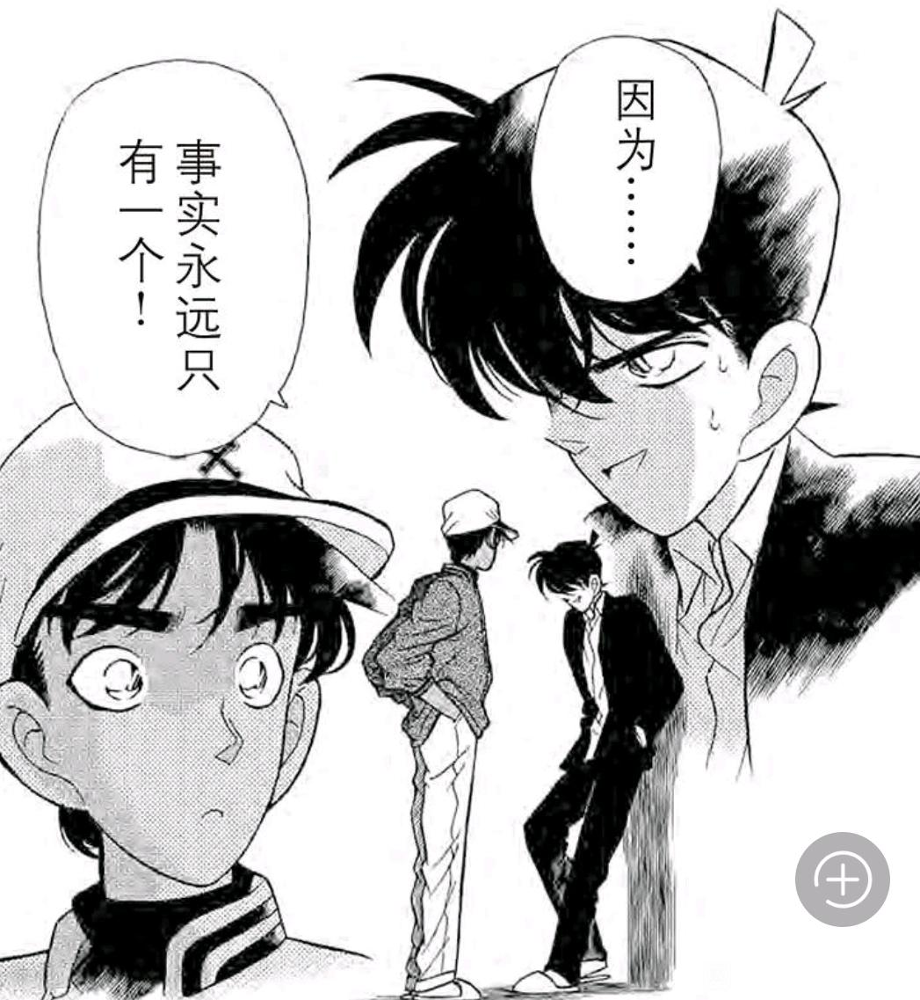
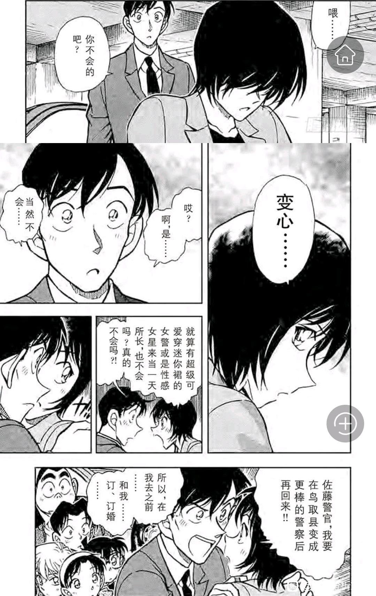
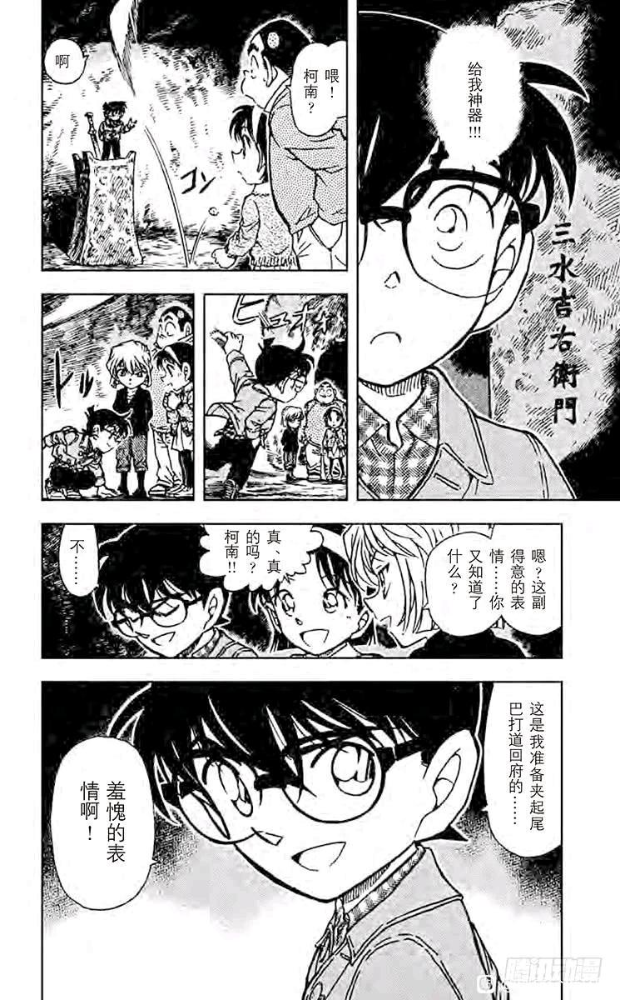

前情提要：
【折叠的时空•叁】堕入回忆的新兰-双向单箭头的柯哀（满月篇）
先说一下【手机篇】的定义，【手机篇】从第143天“被遗忘的手机”开始，至第156天“佛灭日的恶灵”结束，持续小时间线两周，是满月篇和水无篇的过渡，主线为【七只乌鸦的邮箱声音】，感情线为【小兰最后一次怀疑柯南是新一】，几乎每一个案件都与手机强相关。
目前有一种观点，认为满月篇后，柯哀被“冷藏”了直到伦敦篇后才“解冻”，稍微激进的观点也不外乎将“解冻”时间提前到死罗神时期，我的观点可能更激进，即满月之后，柯哀关系并没有什么“冷藏期”，反而得到了进一步发展，且柯哀关系逐步局部超越新兰关系也发生在这一时期。
这一时期，我愿称为【柯哀的峰回路转】，在主线停滞，柯哀身边十分安全的情况下，作者细腻地刻画出柯哀之间那种精彩的拉扯，是小哀情不自禁的的试探和柯南难以掩饰的偏爱的碰撞。
至于小兰？她的戏份进一步降低了！仿佛满月篇小兰的乱入给了作者一个理由，他可以堂而皇之不画小兰了，如果说世良的出现将小兰的上限完全封印，那么进入日常线的小梓，则全面替代了小兰的功能，使得小兰不论上下都已经无路可退，加之本堂瑛佑即将登场，青山或许真的准备配平并淡化小兰了（只是因为波本篇再次扩展而不得不放弃既定结局）
迟钝的柯南镇楼！需要注意的是，即使柯南心中小哀的分量已经超越小兰，在没有M26这种显著对比前他自己未必感受得到哦。
【折叠的时空•叁】堕入回忆的新兰-双向单箭头的柯哀（满月篇）
先说一下【手机篇】的定义，【手机篇】从第143天“被遗忘的手机”开始，至第156天“佛灭日的恶灵”结束，持续小时间线两周，是满月篇和水无篇的过渡，主线为【七只乌鸦的邮箱声音】，感情线为【小兰最后一次怀疑柯南是新一】，几乎每一个案件都与手机强相关。
目前有一种观点，认为满月篇后，柯哀被“冷藏”了直到伦敦篇后才“解冻”，稍微激进的观点也不外乎将“解冻”时间提前到死罗神时期，我的观点可能更激进，即满月之后，柯哀关系并没有什么“冷藏期”，反而得到了进一步发展，且柯哀关系逐步局部超越新兰关系也发生在这一时期。
这一时期，我愿称为【柯哀的峰回路转】，在主线停滞，柯哀身边十分安全的情况下，作者细腻地刻画出柯哀之间那种精彩的拉扯，是小哀情不自禁的的试探和柯南难以掩饰的偏爱的碰撞。
至于小兰？她的戏份进一步降低了！仿佛满月篇小兰的乱入给了作者一个理由，他可以堂而皇之不画小兰了，如果说世良的出现将小兰的上限完全封印，那么进入日常线的小梓，则全面替代了小兰的功能，使得小兰不论上下都已经无路可退，加之本堂瑛佑即将登场，青山或许真的准备配平并淡化小兰了（只是因为波本篇再次扩展而不得不放弃既定结局）
迟钝的柯南镇楼！需要注意的是，即使柯南心中小哀的分量已经超越小兰，在没有M26这种显著对比前他自己未必感受得到哦。
前排入座
前排
一、被遗忘的手机：手机篇开幕
这一案虽然是纯日常，却是第一次小五郎不带小兰破案，其实是一个蛮严重的信号，小兰的日常位被小梓完全替代，小梓虽然在性格上比小兰还没有特点，但是她至少对案件感兴趣且不会做出拉窗帘这种事情，是真正“普通人的代表”，和小梓相比，小兰就很不纯粹了。
而小五郎柯南同时在线，意味着小五郎能够堂而皇之使用柯南的提示（不用担心在女儿面前出丑），柯南也无所谓在小五郎面前暴露自己的智商，破案效率比小兰在时高了许多。
我们知道，琉璃案柯南直接就是“叔叔我有很多提示你要听吗”被小五郎拒绝，之前小五郎甚至查过柯南的麻醉针（虽然没查出来什么），小五郎对柯南的能力是很信任的，这次他俩第一次一起出来，当场就破获一起大案，小五郎进军政坛揭露腐败，名声再次翻倍。
这一案虽然是纯日常，却是第一次小五郎不带小兰破案，其实是一个蛮严重的信号，小兰的日常位被小梓完全替代，小梓虽然在性格上比小兰还没有特点，但是她至少对案件感兴趣且不会做出拉窗帘这种事情，是真正“普通人的代表”，和小梓相比，小兰就很不纯粹了。
而小五郎柯南同时在线，意味着小五郎能够堂而皇之使用柯南的提示（不用担心在女儿面前出丑），柯南也无所谓在小五郎面前暴露自己的智商，破案效率比小兰在时高了许多。
我们知道，琉璃案柯南直接就是“叔叔我有很多提示你要听吗”被小五郎拒绝，之前小五郎甚至查过柯南的麻醉针（虽然没查出来什么），小五郎对柯南的能力是很信任的，这次他俩第一次一起出来，当场就破获一起大案，小五郎进军政坛揭露腐败，名声再次翻倍。
小五郎显然总结了一些规律，连柯南啊咧咧的时间都能预测了，当然小五郎的预测还是没有小哀精准，他需要观察柯南一段时间才行（小哀基本上在柯南嘴角上扬的一刻就知道了）
小五郎能看出来，但小兰却看不出来，甚至小兰会事先想了一堆“新一利用小孩子观察自己”之类的脑补，说到底小兰破案时基本不关注过程，大概听个动机就走了，动机是情杀就乱共情开哭“和你在一起就总没好事”，动机是仇杀就骂犯人“勇气不能杀人”，谋财哪怕谋一点点财就“我是绝对不会原谅你的”，这种情况下自然无法观察柯南或新一的表情。
总之本案小五郎已经解决得差不多了，突然就被麻醉（柯南这是为了博取更大的名声，希望小五郎更完美地解决案件），固然让小五郎成为水无的目标人物，却也让他陷入一定的危险，毕竟对方可是政客，水无篇小五郎被狙击的伏笔由此埋下。
柯南对毛利家的安全向来不太重视，他也许还没有注意到，自己正在用毛利家作为冲锋陷阵的棋子，其实蛮无情的，这是否会成为小兰“叛变”的原因之一呢？（暴论），柯南现在留在毛利家，目的已经不是“名声”了，反而是在提防小兰的泄密才对，这是柯南乱用小五郎的反噬吗？
小五郎能看出来，但小兰却看不出来，甚至小兰会事先想了一堆“新一利用小孩子观察自己”之类的脑补，说到底小兰破案时基本不关注过程，大概听个动机就走了，动机是情杀就乱共情开哭“和你在一起就总没好事”，动机是仇杀就骂犯人“勇气不能杀人”，谋财哪怕谋一点点财就“我是绝对不会原谅你的”，这种情况下自然无法观察柯南或新一的表情。
总之本案小五郎已经解决得差不多了，突然就被麻醉（柯南这是为了博取更大的名声，希望小五郎更完美地解决案件），固然让小五郎成为水无的目标人物，却也让他陷入一定的危险，毕竟对方可是政客，水无篇小五郎被狙击的伏笔由此埋下。
柯南对毛利家的安全向来不太重视，他也许还没有注意到，自己正在用毛利家作为冲锋陷阵的棋子，其实蛮无情的，这是否会成为小兰“叛变”的原因之一呢？（暴论），柯南现在留在毛利家，目的已经不是“名声”了，反而是在提防小兰的泄密才对，这是柯南乱用小五郎的反噬吗？
来了来了
留个脚印，期待
来了，期待一下
期待⭐⭐⭐
二、甲子园的小兰与和叶：解构满月篇
在安排小梓出场取代小兰的日常位之后，作者迫不及待地让平和出场，【谁的推理秀】一章将小兰【便利店的陷阱】一案完全解构，【甲子园的奇迹】更是再次重申了小兰所喜欢的新一，【喜欢他输掉的样子】。
先来看【谁的推理秀】，柯南仍然没有床，需要带着耳塞熬夜看推理小说（好惨，怪不得天天往博士家跑），这部小说叫做“恶魔策划下的遗书”，尚不清楚有没有映射关系，但谁的推理秀这一章中，只有小兰进行了【策划】，试图让柯南放水。
在安排小梓出场取代小兰的日常位之后，作者迫不及待地让平和出场，【谁的推理秀】一章将小兰【便利店的陷阱】一案完全解构，【甲子园的奇迹】更是再次重申了小兰所喜欢的新一，【喜欢他输掉的样子】。
先来看【谁的推理秀】，柯南仍然没有床，需要带着耳塞熬夜看推理小说（好惨，怪不得天天往博士家跑），这部小说叫做“恶魔策划下的遗书”，尚不清楚有没有映射关系，但谁的推理秀这一章中，只有小兰进行了【策划】，试图让柯南放水。
平和的推理比赛，处处透露着与新兰的不同。
第一处不同，平和为了去宝冢还是甲子园产生争吵，但新兰很难因为这个吵起来，一般是小兰提议去某地而新一不得不同意（水族馆，云霄飞车，甚至伦敦/红修都是这样），在这种事情里新一必须迁就小兰（否则小兰就空手道+哭闹），但平和却可以畅所欲言，这类吵吵闹闹并不会影响平和关系，比新兰健康得多。
第二处不同，小兰发现新一推理完毕，要么怀疑其结果，要么就认为“新一会嘲笑我”（如便利店），但和叶……好像忘记了自己在和服部比赛，直接看入迷了，（小哀在东都显像馆有类似行为，但小兰从来没有）
第一处不同，平和为了去宝冢还是甲子园产生争吵，但新兰很难因为这个吵起来，一般是小兰提议去某地而新一不得不同意（水族馆，云霄飞车，甚至伦敦/红修都是这样），在这种事情里新一必须迁就小兰（否则小兰就空手道+哭闹），但平和却可以畅所欲言，这类吵吵闹闹并不会影响平和关系，比新兰健康得多。
第二处不同，小兰发现新一推理完毕，要么怀疑其结果，要么就认为“新一会嘲笑我”（如便利店），但和叶……好像忘记了自己在和服部比赛，直接看入迷了，（小哀在东都显像馆有类似行为，但小兰从来没有）
第三处不同（也是最明显的一处），小兰直接要柯南放水，希望柯南让和叶赢，这里我不认为是小兰自己想看宝冢或者想让和叶赢，而是小兰认为【青梅竹马难道不就应该是这样的吗？】，她自己和新一的情况向来如此，从来不会在某些事情上与新一比赛，而是直接索取，因此小兰根本不能理解和叶的想法。
注意这里小兰还堂而皇之地假传圣旨，说什么“和叶一直很期待和我们一起看宝冢”，结果和叶在案件结束后直接打脸，去哪其实都无所谓，只是机会难得享受一下与服部一起推理而已。
小兰以己度人结果非常失败，红莲骷髅虽然刻画得更用力一些，但小兰的行为逻辑却都有迹可循，假传圣旨+为和叶瞎操心，在本案全部出现了。
注意这里小兰还堂而皇之地假传圣旨，说什么“和叶一直很期待和我们一起看宝冢”，结果和叶在案件结束后直接打脸，去哪其实都无所谓，只是机会难得享受一下与服部一起推理而已。
小兰以己度人结果非常失败，红莲骷髅虽然刻画得更用力一些，但小兰的行为逻辑却都有迹可循，假传圣旨+为和叶瞎操心，在本案全部出现了。
和小兰不同，和叶选择了解死亡信息。
注意这里和叶虽然有泪水，但是眼神是坚定的，不解开暗号誓不罢休，与小兰的廉价眼泪不可以等同。最后和叶也在【非常少量】的提示下解开了死亡信息。柯南与服部的所谓提示很不关键。
然而，小兰也同步听到了提示，却什么忙也没帮上，小五郎至少提出了若干犯人行动的假设，小兰除了让柯南放水以外就是在和叶旁边毫无头绪地问，和叶直接让她消停会。这里小兰看似在看和叶的笔记，但我合理怀疑小兰根本没有在思考（和叶解出来时小兰还是“啊？”的状态），她似乎难以理解和叶的执着。
和叶解开死亡信息后非常开心，也不像小兰那样需要“向新一求证”，推理时自然散发出自信的光芒。更可贵的是，服部也不用向柯南那样斟酌各种措辞，“害怕破坏小兰的推理乐趣”，他自然而然地接过和叶的推理结论，并找出真正的犯人，没有必要像柯南想的那样非让和叶赢不可。

注意这里和叶虽然有泪水，但是眼神是坚定的，不解开暗号誓不罢休，与小兰的廉价眼泪不可以等同。最后和叶也在【非常少量】的提示下解开了死亡信息。柯南与服部的所谓提示很不关键。
然而，小兰也同步听到了提示，却什么忙也没帮上，小五郎至少提出了若干犯人行动的假设，小兰除了让柯南放水以外就是在和叶旁边毫无头绪地问，和叶直接让她消停会。这里小兰看似在看和叶的笔记，但我合理怀疑小兰根本没有在思考（和叶解出来时小兰还是“啊？”的状态），她似乎难以理解和叶的执着。
和叶解开死亡信息后非常开心，也不像小兰那样需要“向新一求证”，推理时自然散发出自信的光芒。更可贵的是，服部也不用向柯南那样斟酌各种措辞，“害怕破坏小兰的推理乐趣”，他自然而然地接过和叶的推理结论，并找出真正的犯人，没有必要像柯南想的那样非让和叶赢不可。
2024-04-08 00:24 | 我有嘉賓00:蘭：huh猫.JPG2024-04-29 02:17 | 上総守信長ºº:回复 我有嘉賓00 :你的jpg为什么能动还有声音2024-05-05 07:02 | 暝色:和叶当真秒了兰
和叶对比小兰讨喜太多了
推理结束后，小兰居然还撺掇和叶去求服部💔💔结果被和叶光明正大地拒绝了，小兰这个思维惯性真的很难改，虽然朱蒂告诉她不要总是依靠别人，但小兰并没有听进去，她对甜甜圈的运用炉火纯青甚至想要教和叶，和叶却和她不是一类人。
（和叶没有告诉小兰真正的原因，这是她相对意义的私事，在这方面和叶并不希望小兰多参与，闪闪发光的平次，小兰大概是不会理解的吧）
再看服部这边，服部还在想哪里不对，其实服部才是正确的一方，柯南被小兰多年压制，认为“让出甜甜圈”是理所当然的，可是论恋爱的成熟程度，恐怕服部还要领先一些，毕竟他的青梅竹马是个正常的女孩子。
（和叶没有告诉小兰真正的原因，这是她相对意义的私事，在这方面和叶并不希望小兰多参与，闪闪发光的平次，小兰大概是不会理解的吧）
再看服部这边，服部还在想哪里不对，其实服部才是正确的一方，柯南被小兰多年压制，认为“让出甜甜圈”是理所当然的，可是论恋爱的成熟程度，恐怕服部还要领先一些，毕竟他的青梅竹马是个正常的女孩子。
2024-04-08 14:17 | feather034:73是懂对比的
番外：本案出现了服部印象中的工藤新一（来自外交官杀人事件）
这其实是对贝魔论的偏向性证据，同样是有些温柔和落寞的表情，似乎与小兰的回忆非常相似（正片新一的表情都没有那么柔和）
尤其是这个低头靠墙的姿势，除了前刘海因为淋雨的关系有点不同，其他部分与小兰视角几乎是一致的（甚至汗的位置都一样），也就是说，小兰记忆中对新一的外形美化其实是在合理范围，因为服部也美化了，光靠外形来判断记忆中被假扮其实是比较困难的。
大概是青山打算设定新一在喜欢的人看来会更帅吧，（实锤新平关系了）。
当然，最新有人发现新一的衣服不太对，小兰前两次回忆里带了帽绳（正片没有），这个其实也可以解释，例如服部回忆里帽子的方向是反的，小兰一开始想到的秀一是短发（因为她刚见过），也就是回忆的衣服不一定靠谱。
带帽绳的新一应该有原型，这点还是可疑的，只是这个帽绳既不是莎朗的也不是杀人魔的，找不到原型（有可能是云霄飞车的衣服，但云霄飞车时新一的帽绳即使有也藏起来了）

这其实是对贝魔论的偏向性证据，同样是有些温柔和落寞的表情，似乎与小兰的回忆非常相似（正片新一的表情都没有那么柔和）
尤其是这个低头靠墙的姿势，除了前刘海因为淋雨的关系有点不同，其他部分与小兰视角几乎是一致的（甚至汗的位置都一样），也就是说，小兰记忆中对新一的外形美化其实是在合理范围，因为服部也美化了，光靠外形来判断记忆中被假扮其实是比较困难的。
大概是青山打算设定新一在喜欢的人看来会更帅吧，（实锤新平关系了）。
当然，最新有人发现新一的衣服不太对，小兰前两次回忆里带了帽绳（正片没有），这个其实也可以解释，例如服部回忆里帽子的方向是反的，小兰一开始想到的秀一是短发（因为她刚见过），也就是回忆的衣服不一定靠谱。
带帽绳的新一应该有原型，这点还是可疑的，只是这个帽绳既不是莎朗的也不是杀人魔的，找不到原型（有可能是云霄飞车的衣服，但云霄飞车时新一的帽绳即使有也藏起来了）

2024-04-08 00:28 | 我有嘉賓00:和葉说过，平次把帽舌翻过来到後面，是因为有把握解决案件了。会不会是因为这个导致记忆有偏差。
接着来看甲子园，这是一个联动青山其他漫画的作品，而长岛和稻尾不幸成为小兰的两个代餐（惨）
本篇看似新兰糖，实则是小兰连续使用了三个代餐，一开始小兰看重柯南离去，说【和新一很像】，还能解释为小兰总是隐隐约约觉得柯南是新一（这是正面塑造，如果小兰一直都是只对柯南有特殊滤镜，则不失为恋爱喜剧）
结果下一刻小兰就开始对着两位棒球运动员大吃特吃，这不但让小兰的代餐迷形象更加深入人心，同时还把之前小兰幻视柯南为新一的剧情给解构了，即：
【小兰幻视柯南是新一，并不是因为柯南是新一，而是因为小兰觉得柯南长得像新一，换别人长得像也无所谓】
和叶的表情：我不李姐 看球就看球，怎么有人在吃代餐啊💔
看球就看球，怎么有人在吃代餐啊💔
本篇看似新兰糖，实则是小兰连续使用了三个代餐，一开始小兰看重柯南离去，说【和新一很像】，还能解释为小兰总是隐隐约约觉得柯南是新一（这是正面塑造，如果小兰一直都是只对柯南有特殊滤镜，则不失为恋爱喜剧）
结果下一刻小兰就开始对着两位棒球运动员大吃特吃，这不但让小兰的代餐迷形象更加深入人心，同时还把之前小兰幻视柯南为新一的剧情给解构了，即：
【小兰幻视柯南是新一，并不是因为柯南是新一，而是因为小兰觉得柯南长得像新一，换别人长得像也无所谓】
和叶的表情：我不李姐
看球就看球，怎么有人在吃代餐啊💔
和叶小五郎都在认真看球，只有小兰各种“那两个人和新一一样”，这代餐习惯真是没法改了。
后面剧情更离谱，当小兰回忆新一说出那句“很帅的话”时，觉得新一帅的人--
是和叶
小兰get到的帅与和叶不同，小兰喜欢的是“新一输球时落寞的样子”，注意这里是初中的事情，小兰对新一还没有纽约篇滤镜，她的想法真实可靠，甚至可以说，纽约篇的小兰得偿所愿，自己救了杀人魔于是新一【输了】，他必须放弃对杀人魔的追捕而专心于保护小兰的安全，这种落寞的气质是小兰所喜欢的。
在【大冈红叶的挑战书】中，小兰再一次希望新一输，我甚至没法回忆小兰什么时候希望新一赢过，樱花班是园子希望赢而小兰不高兴，少年冒险里又不支持新一对抗基德（一代），滑雪场和叶支持服部，小兰“除了新一还有别的推理狂？”，纽约篇基本一直在质疑新一的推理，水族馆“和你在一起就没有好事”……到了正片则更甚，就没有哪次破案夸过新一的推理。
其实小兰非要联想，不如联想到空中密室，当时情况很类似，案件很困难而新一面露微笑，【唯一区别是空中密室新一赢了，但足球新一输了，小兰更愿意讲输的那次】
直到小兰说出“男孩们都有好胜心”才得到和叶的同意，服部好胜这点和叶是认同的（观众也认同），但是新一是一个好胜的人吗？好像不是吧，新一的胜负欲其实不高，最多算是对案件真相的执着，这无关好胜心，而是一种对生命的负责态度，小兰的理解偏差越来越大了（前一章新平刚刚讲“推理无胜负，因为真相只有一个”，这里小兰就各种输赢，怪不得白马要说“你不了解侦探”）
后面剧情更离谱，当小兰回忆新一说出那句“很帅的话”时，觉得新一帅的人--
是和叶
小兰get到的帅与和叶不同，小兰喜欢的是“新一输球时落寞的样子”，注意这里是初中的事情，小兰对新一还没有纽约篇滤镜，她的想法真实可靠，甚至可以说，纽约篇的小兰得偿所愿，自己救了杀人魔于是新一【输了】，他必须放弃对杀人魔的追捕而专心于保护小兰的安全，这种落寞的气质是小兰所喜欢的。
在【大冈红叶的挑战书】中，小兰再一次希望新一输，我甚至没法回忆小兰什么时候希望新一赢过，樱花班是园子希望赢而小兰不高兴，少年冒险里又不支持新一对抗基德（一代），滑雪场和叶支持服部，小兰“除了新一还有别的推理狂？”，纽约篇基本一直在质疑新一的推理，水族馆“和你在一起就没有好事”……到了正片则更甚，就没有哪次破案夸过新一的推理。
其实小兰非要联想，不如联想到空中密室，当时情况很类似，案件很困难而新一面露微笑，【唯一区别是空中密室新一赢了，但足球新一输了，小兰更愿意讲输的那次】
直到小兰说出“男孩们都有好胜心”才得到和叶的同意，服部好胜这点和叶是认同的（观众也认同），但是新一是一个好胜的人吗？好像不是吧，新一的胜负欲其实不高，最多算是对案件真相的执着，这无关好胜心，而是一种对生命的负责态度，小兰的理解偏差越来越大了（前一章新平刚刚讲“推理无胜负，因为真相只有一个”，这里小兰就各种输赢，怪不得白马要说“你不了解侦探”）
2024-04-06 07:54 | 黑暗刺猬-夏特:最后一张图里不单止和叶、毛利小五郎，连周围路人都听到毛利兰觉得落寂这种负面情绪很酷时都对这女孩感到震惊2024-04-08 00:34 | 我有嘉賓00:这感情，好黑暗2024-04-21 03:56 | 柑橘香水💞:感觉新一好惨，到最后的感情结局一定要摆脱这种不正常的关系，跟谁在一起都行，重要的是相互理解尊重陪伴。2024-05-05 07:11 | 暝色:新一好惨啊
“喜欢输球时落寞的样子”，“工藤，赢给我看！”
占座
想起我一个SR亲戚的名言来了：73就是大男子主义的恶臭，既想有大和抚子全方位的照顾，又想有事业伴侣，所以在作品里yy（她只许自己不停说SR，我从来没提过柯哀，唯一告诉她一次我被SR网爆就被她捂嘴‘我不跟你说SR，你也别跟我说柯哀’，所以我也不知道她是看见哪儿的理论反驳不了了，就把帽子扣给73了）
三、高佐的离别实验：新兰哀的成年对照
我们经常会看到一种说法，即不论客观上有各种事情，小兰的确“被新一抛下了半年”，所谓“站在小兰立场上的确值得生气”，事实上青山也画出了小兰生气的种种表现。
现在问题来了，“画出来”就代表“认同”吗？于是作者设计了巧妙的对照组，让高佐经历和新兰一模一样的事情，并借助柯哀和白鸟等人的嘴，说出自己的看法，而高佐/柯哀等人的观点，【与小兰完全相反】。
我一直认为，高佐白的进展与哀新兰的进展是同步的，上一次高佐案件（多罗碧加）白鸟还能镇定自若地指挥手下拆散高佐，而本案白鸟已经目睹了高佐的恩爱，这与满月前后的小兰态度十分相似（小兰也这样目睹了柯哀），白佐几乎接吻-危命新兰几乎接吻，高佐相互拯救-柯哀相互拯救，决胜对于高佐是1200万人质，对于柯哀是满月篇。
于是在高佐成型之后，作者迫不及待地安排了他们可能的分离（高木被告知要调往鸟取县），我们来看看各人物的选择吧。
我们经常会看到一种说法，即不论客观上有各种事情，小兰的确“被新一抛下了半年”，所谓“站在小兰立场上的确值得生气”，事实上青山也画出了小兰生气的种种表现。
现在问题来了，“画出来”就代表“认同”吗？于是作者设计了巧妙的对照组，让高佐经历和新兰一模一样的事情，并借助柯哀和白鸟等人的嘴，说出自己的看法，而高佐/柯哀等人的观点，【与小兰完全相反】。
我一直认为，高佐白的进展与哀新兰的进展是同步的，上一次高佐案件（多罗碧加）白鸟还能镇定自若地指挥手下拆散高佐，而本案白鸟已经目睹了高佐的恩爱，这与满月前后的小兰态度十分相似（小兰也这样目睹了柯哀），白佐几乎接吻-危命新兰几乎接吻，高佐相互拯救-柯哀相互拯救，决胜对于高佐是1200万人质，对于柯哀是满月篇。
于是在高佐成型之后，作者迫不及待地安排了他们可能的分离（高木被告知要调往鸟取县），我们来看看各人物的选择吧。
2024-04-08 13:19 | 成冰的雨点:我一直好奇这个所谓的天使lan被“抛下来”，不说中间新一变回来多少次，又打了多少次电话，就说即便新一回来了，或者没发生过变小的事，她想干什么？能干什么？不照样上学放学回家做饭？新一在与不在她都这么过，而且在她的视角里新一也没危险哪儿来那么大悲情？2024-04-08 13:20 | 成冰的雨点:是那么急着就去啃工藤优作的老（新一再有本事可还没开始挣钱养家）还是因为新一从她的完全掌控中消失，所以慌了？
首先来看小哀的态度，这里就能立刻看出不一样了，赤木英雄转投英国，小哀的态度是【真正的球迷，应该希望看到他在英国出色发挥的啊】，柯南也对此表示认可。
（柯南这里说到“别的理由”，他自己的理由在柯南绑架案已经说了，是“主观被迫”，英雄的理由我猜无外乎直树，量子，小守三选一，应该不至于被迫，我猜是量子，英雄和量子可不是兄妹关系）
这似乎是作者的主要是想之一，喜欢一个人就要放ta去更大的舞台，漫画后期又借助园子的口说明这一点，就连毛妃虽然有各种问题，却也是尊重对方职业的，主要人物里只有小兰希望将新一绑在身边。
当然，毕竟是喜欢的人，难免会有不舍，甚至有不安全感，这都是很正常的。只是这种不舍，真的要用像小兰那样的方式表达出来吗？高木和佐藤也遇到了这个问题，而他们的表达却非常自然。
（柯南这里说到“别的理由”，他自己的理由在柯南绑架案已经说了，是“主观被迫”，英雄的理由我猜无外乎直树，量子，小守三选一，应该不至于被迫，我猜是量子，英雄和量子可不是兄妹关系）
这似乎是作者的主要是想之一，喜欢一个人就要放ta去更大的舞台，漫画后期又借助园子的口说明这一点，就连毛妃虽然有各种问题，却也是尊重对方职业的，主要人物里只有小兰希望将新一绑在身边。
当然，毕竟是喜欢的人，难免会有不舍，甚至有不安全感，这都是很正常的。只是这种不舍，真的要用像小兰那样的方式表达出来吗？高木和佐藤也遇到了这个问题，而他们的表达却非常自然。
2024-04-07 13:18 | 成冰的雨点:天使lan给人的感觉一直是她只想要个裙下之臣，但能完全让着她、听凭她控制的只有工藤新一，所以她死也不放手，还能打造自己“专一”的人设。其他人，除了本堂瑛佑，新出医生也好，赤井秀一也好，她倒是想控制，可是谁会听呢？就剩下吃吃代餐过瘾了2024-04-08 00:37 | 我有嘉賓00:回复 成冰的雨点 :也难怪角厨经常说什么女王
本案是少见的柯哀主场情杀案，犯人（千叶的室友）因为自己外出很久，回来时女朋友绿了自己于是开杀。在这种气氛下，高佐又疑似要分开一段时间，这种压力迫使高木和佐藤做出表态。
高木非常有意思，相比认为佐藤可能会出轨，他对自己会出轨的思考量更大 （事实上的确如此），小哀在这里点了一下柯南，翻译上有各种不同，有的版本翻译为“（异地出轨）这种事情很少有意外”，有的版本则翻译为“这种事情好像也偶尔有例外”，不论具体翻译如何，小哀对新兰关系绝不是不在意的，她在试图让柯南正视自己的感情，在柯南看清楚前，自己是不会有所行动的。
（事实上的确如此），小哀在这里点了一下柯南，翻译上有各种不同，有的版本翻译为“（异地出轨）这种事情很少有意外”，有的版本则翻译为“这种事情好像也偶尔有例外”，不论具体翻译如何，小哀对新兰关系绝不是不在意的，她在试图让柯南正视自己的感情，在柯南看清楚前，自己是不会有所行动的。
而柯南呢？他的心理被隐去了，一种说法认为，小哀调侃新兰关系的行为，“过于没有暧昧了”，显得有点“兄弟情”，很容易导致柯南对小哀的情感趋向于“新园关系”，我倒是觉得柯南没办法考虑那么多，他弄不懂小哀想要表达什么（小哀也不能直接表达），于是柯南只好自己一个人去胡思乱想啦。
需要注意的是，在1200万人质时，小哀也揶揄过新兰关系，当时柯南尚未存在有希子“灰原喜欢你”的命题，还能假装小哀只是在开玩笑，但现在已经满月后了，柯南似乎不能不考虑更多。
这种思考的结果当然是模糊的，柯南依然不清楚小哀是喜欢他还是打趣他，但是造成了另一个结果，就是他会更多意识到自己对小哀的复杂情感，导致他更多地讨好小哀。（甚至在小兰面前说收到喜欢的小哀的短信）
高木非常有意思，相比认为佐藤可能会出轨，他对自己会出轨的思考量更大
（事实上的确如此），小哀在这里点了一下柯南，翻译上有各种不同，有的版本翻译为“（异地出轨）这种事情很少有意外”，有的版本则翻译为“这种事情好像也偶尔有例外”，不论具体翻译如何，小哀对新兰关系绝不是不在意的，她在试图让柯南正视自己的感情，在柯南看清楚前，自己是不会有所行动的。而柯南呢？他的心理被隐去了，一种说法认为，小哀调侃新兰关系的行为，“过于没有暧昧了”，显得有点“兄弟情”，很容易导致柯南对小哀的情感趋向于“新园关系”，我倒是觉得柯南没办法考虑那么多，他弄不懂小哀想要表达什么（小哀也不能直接表达），于是柯南只好自己一个人去胡思乱想啦。
需要注意的是，在1200万人质时，小哀也揶揄过新兰关系，当时柯南尚未存在有希子“灰原喜欢你”的命题，还能假装小哀只是在开玩笑，但现在已经满月后了，柯南似乎不能不考虑更多。
这种思考的结果当然是模糊的，柯南依然不清楚小哀是喜欢他还是打趣他，但是造成了另一个结果，就是他会更多意识到自己对小哀的复杂情感，导致他更多地讨好小哀。（甚至在小兰面前说收到喜欢的小哀的短信）
最后高佐的表现如图所示。
高木佐藤没有任何一位否定了这次任命，而是从“变心的根源”下手，体现出极致的浪漫与信任，甚至为了让佐藤放心，高木直接A了上去，订婚都说出来了，少侦五人全员脸红，我们可以拿危命复活新兰酒店做对比，新一几乎不敢向小兰做这种承诺，他说的是“死也要回来”或者“新一哥哥一定是小兰想的那个样子”。
我们能明显的感受到，高佐的互相信任是新兰缺乏的，在高佐关系中，【变心】是独立于【分离】的，即使真的分离，双方也能为了避免变心而做出承诺；而新兰的【变心】不独立于【分离】，园子的说法是“不绑住新一，他马上变心”而事实上差不多（柯南已经变心了），但新一变心的前情是小兰只要【分离】就会立刻【变心】，前一天还在因为赤木量子而哭哭啼啼，第二天立刻和前田聪仰望星空，新一事实上是逐渐对小兰失望的，危命复活时，柯南自己不做承诺，却希望小兰等他（与高木相反），对这段关系柯南已经没有多少负责了，高木自己承诺并且A上去，柯南完全做不到，不够信任也不够爱，因为小兰不值得信任。
这里必须要说一下，小兰代餐分两种，享受型代餐和战术型代餐，像冲田就是战术型代餐的代表，几乎是为了气新一而存在的，而基德则是享受型的代表，有时两种代餐可以并存，例如新出医生。大体上，当新一（或者认为柯南是新一）时为战术代餐，不在（或者认为柯南不是新一）时为享受代餐，但在柯南的角度，这不就都是代餐，怎么可能信任呢？
高佐这里的信任与承诺很甜，而新兰饭店的承诺只有不信任的味道与不负责的态度。
高木佐藤没有任何一位否定了这次任命，而是从“变心的根源”下手，体现出极致的浪漫与信任，甚至为了让佐藤放心，高木直接A了上去，订婚都说出来了，少侦五人全员脸红，我们可以拿危命复活新兰酒店做对比，新一几乎不敢向小兰做这种承诺，他说的是“死也要回来”或者“新一哥哥一定是小兰想的那个样子”。
我们能明显的感受到，高佐的互相信任是新兰缺乏的，在高佐关系中，【变心】是独立于【分离】的，即使真的分离，双方也能为了避免变心而做出承诺；而新兰的【变心】不独立于【分离】，园子的说法是“不绑住新一，他马上变心”而事实上差不多（柯南已经变心了），但新一变心的前情是小兰只要【分离】就会立刻【变心】，前一天还在因为赤木量子而哭哭啼啼，第二天立刻和前田聪仰望星空，新一事实上是逐渐对小兰失望的，危命复活时，柯南自己不做承诺，却希望小兰等他（与高木相反），对这段关系柯南已经没有多少负责了，高木自己承诺并且A上去，柯南完全做不到，不够信任也不够爱，因为小兰不值得信任。
这里必须要说一下，小兰代餐分两种，享受型代餐和战术型代餐，像冲田就是战术型代餐的代表，几乎是为了气新一而存在的，而基德则是享受型的代表，有时两种代餐可以并存，例如新出医生。大体上，当新一（或者认为柯南是新一）时为战术代餐，不在（或者认为柯南不是新一）时为享受代餐，但在柯南的角度，这不就都是代餐，怎么可能信任呢？
高佐这里的信任与承诺很甜，而新兰饭店的承诺只有不信任的味道与不负责的态度。

四、侦探的梦想：基德的空中漫步与情感提示
空中漫步案是基德的第二次主场登场，上一次还要追溯到漆黑之星（当时小哀都没出场），中间仅有一次基德伪装成肥宅医生（非主场），基德在感情线中的地位通常是柯南的点醒者，其作用不亚于有希子，作为3/4组中感情发展最顺利的人，基德的评价很具有参考意义。
本次也不例外，【空中漫步】案有两件事值得注意，第一件事是【园子富豪属性具象化】，大家都知道园子是富豪，但本案第一次正面描写了园子的富裕，请小兰看电影，在屋顶享受大餐，铃木次郎吉的出现更是加深了这一属性，甚至刻画了园子不错的商业思维，这对于小兰的漫画地位又是一次伤害，继小梓取代日常位后，园子取代了开图位，而这都发生在手机篇的短短两周中，小兰的形象进一步坠落。
【这里园子对电影的评价就是我对M27的评价，上一部是很好，这一部能不能给点力啊】
空中漫步案是基德的第二次主场登场，上一次还要追溯到漆黑之星（当时小哀都没出场），中间仅有一次基德伪装成肥宅医生（非主场），基德在感情线中的地位通常是柯南的点醒者，其作用不亚于有希子，作为3/4组中感情发展最顺利的人，基德的评价很具有参考意义。
本次也不例外，【空中漫步】案有两件事值得注意，第一件事是【园子富豪属性具象化】，大家都知道园子是富豪，但本案第一次正面描写了园子的富裕，请小兰看电影，在屋顶享受大餐，铃木次郎吉的出现更是加深了这一属性，甚至刻画了园子不错的商业思维，这对于小兰的漫画地位又是一次伤害，继小梓取代日常位后，园子取代了开图位，而这都发生在手机篇的短短两周中，小兰的形象进一步坠落。
【这里园子对电影的评价就是我对M27的评价，上一部是很好，这一部能不能给点力啊】
而第二件事，自然是基德对柯南的情感评论了，基德长时间没有登场，他应该不知道小哀的事情，因此基德眼里，柯南还是那个游轮上必须基德拿出小兰内衣才能惊讶的柯南，是那个魔术爱好者案被自己的责任感强制进入别墅的柯南。
基德评价柯南：没有梦想。
柯南：只有梦想的话就没法看穿真相了。
后文我们知道，这个所谓“柯南的梦想”，指代的似乎是小兰（或者小兰相关），而柯南没有否定【怪盗和侦探本质一样】，却否定了相对浪漫的“梦想”，将梦想与真相割裂开来。
基德是否已经发现柯南对小兰的态度趋于平稳了呢？更大胆一点的解释是，基德暗示柯南【如果小兰真的是你的梦想，即使隐瞒了身份也可以追求的啊！（基德自己就是这样与青子相处的）】
基德是不太理解柯南的这种行为的，并不像一个恋爱中的高中生，似乎有什么东西影响了柯南的判断……
（几天后，基德将在【奇异屋宇大冒险】见到小哀，他立刻就知道柯南这两个月去干什么了，也将立刻知道柯南真正的梦想属于谁）
基德评价柯南：没有梦想。
柯南：只有梦想的话就没法看穿真相了。
后文我们知道，这个所谓“柯南的梦想”，指代的似乎是小兰（或者小兰相关），而柯南没有否定【怪盗和侦探本质一样】，却否定了相对浪漫的“梦想”，将梦想与真相割裂开来。
基德是否已经发现柯南对小兰的态度趋于平稳了呢？更大胆一点的解释是，基德暗示柯南【如果小兰真的是你的梦想，即使隐瞒了身份也可以追求的啊！（基德自己就是这样与青子相处的）】
基德是不太理解柯南的这种行为的，并不像一个恋爱中的高中生，似乎有什么东西影响了柯南的判断……
（几天后，基德将在【奇异屋宇大冒险】见到小哀，他立刻就知道柯南这两个月去干什么了，也将立刻知道柯南真正的梦想属于谁）
2024-04-29 03:40 | 上総守信長ºº:虽但，基德不需要嗑药也能变回斗子，这应该是本质区别
柯南目前的梦想，是小兰吗？
很可惜，并不是，如果柯南的梦想真的是小兰，那么这里至少要画出柯南的脸红，但并没有，取而代之的是一团污渍！
柯南的梦想是【与小兰相关但不是小兰的梦想】，目前符合这一特点的只有【变大，恢复成原来的身体，能正常和小兰互动】，而这一条又几乎等同于【击败黑衣组织】，在之后的剧情中，【击败黑衣组织】的梦想越来越占据主导地位，【变大】则越来越不重要，导致柯南的梦想逐渐与小兰脱钩。
基德对这一点做了提醒，你的梦想真的是你的梦想吗？柯南也许会进行考虑，也许不会，但基德毫无疑问造成了影响：
【柯南几乎不再因为柯兰互动而脸红了】
柯兰互动属于姐弟互动的代餐变种，小兰会抱住柯南，给柯南擦污渍，以前柯南会很害羞，现在不会了（除非小兰直接泳装出现，睡在自己身边或者其他更严重的情况），柯南事实上已经默认了“如果变不回去”的姐弟关系，而这种默认就是从本案开始。
很可惜，并不是，如果柯南的梦想真的是小兰，那么这里至少要画出柯南的脸红，但并没有，取而代之的是一团污渍！
柯南的梦想是【与小兰相关但不是小兰的梦想】，目前符合这一特点的只有【变大，恢复成原来的身体，能正常和小兰互动】，而这一条又几乎等同于【击败黑衣组织】，在之后的剧情中，【击败黑衣组织】的梦想越来越占据主导地位，【变大】则越来越不重要，导致柯南的梦想逐渐与小兰脱钩。
基德对这一点做了提醒，你的梦想真的是你的梦想吗？柯南也许会进行考虑，也许不会，但基德毫无疑问造成了影响：
【柯南几乎不再因为柯兰互动而脸红了】
柯兰互动属于姐弟互动的代餐变种，小兰会抱住柯南，给柯南擦污渍，以前柯南会很害羞，现在不会了（除非小兰直接泳装出现，睡在自己身边或者其他更严重的情况），柯南事实上已经默认了“如果变不回去”的姐弟关系，而这种默认就是从本案开始。
2024-04-07 22:41 | 即将02的废物月:这个污渍真的是说实话，好多东西从后往前回头看的话会发现，太“恶意”了
最后还有一个事情：本案出现了小兰的飞帽子剧情，但这个剧情非常刻意，前后小兰都没有带帽子，仅仅在这一刻，【为了飞帽子而带帽子】
（不得不说，把角掩盖起来的青子脸还是好看的）
这种工具剧情和柯哀飞帽子完全不是一个级别的，小哀带帽子具有许多深层次的原因（当时柯南直接跳看台），博士芙纱绘的帽子也是为了感情线而服务的，千苗帽子同理，只有新兰的帽子戏份最工具，这里仅仅是为了让柯南发现基德线索，死罗神也有帽子但小兰语出惊人【新一以前不是不戴帽子的吗】
帽子飞走似乎不一定代表了情感的正向互动，也许新兰的帽子戏份反而代表了新兰关系的逐渐消亡，柯南/新一对于带着帽子遮住角的小兰会更好（危命复活非常明显），一旦角露出来了，柯南对小兰的滤镜也就随之破碎。帽子和眼镜一样，对新兰是掩饰，对其他CP是心灵交融的道具。
果然，即使被小兰抱着，柯南依然义无反顾地跑了，没有任何留恋（在【小五郎冒充者】案中还有留恋，现在没有了）
（顺便：这里展示了园子的商业头脑，园子将来应该是要继承铃木财团的，以园子的商业水平和超厉害的人脉，她的成就应该不亚于父母，至于小兰我实在看不出她有什么未来的希望）
（不得不说，把角掩盖起来的青子脸还是好看的）
这种工具剧情和柯哀飞帽子完全不是一个级别的，小哀带帽子具有许多深层次的原因（当时柯南直接跳看台），博士芙纱绘的帽子也是为了感情线而服务的，千苗帽子同理，只有新兰的帽子戏份最工具，这里仅仅是为了让柯南发现基德线索，死罗神也有帽子但小兰语出惊人【新一以前不是不戴帽子的吗】
帽子飞走似乎不一定代表了情感的正向互动，也许新兰的帽子戏份反而代表了新兰关系的逐渐消亡，柯南/新一对于带着帽子遮住角的小兰会更好（危命复活非常明显），一旦角露出来了，柯南对小兰的滤镜也就随之破碎。帽子和眼镜一样，对新兰是掩饰，对其他CP是心灵交融的道具。
果然，即使被小兰抱着，柯南依然义无反顾地跑了，没有任何留恋（在【小五郎冒充者】案中还有留恋，现在没有了）
（顺便：这里展示了园子的商业头脑，园子将来应该是要继承铃木财团的，以园子的商业水平和超厉害的人脉，她的成就应该不亚于父母，至于小兰我实在看不出她有什么未来的希望）
2024-04-29 03:54 | 上総守信長ºº:我理解这里是个英伦帽，大概是暗示侦探的，兰戴了帽子但被风吹走，柯看似去捡帽子这个象征物实则进入了真正的侦探状态，而帽子还给兰后兰也没再戴
五、新出医生回归：为什么我认为【新出兰】不可能？
故事是紧接着上一话的，为了验证基德的“你没有梦想”，柯南重新来到帝丹高中，来到这个熟悉但未必有多少好回忆的地方。
结论正如基德所说，柯南“恢复身体，回到高中”的所谓梦想并不显著，这根本称不上梦想，只是一团污渍而已。
本案又是灵异案件，我们需要做两个对比，横向对比【帝丹小学七大不可思议事件】，纵向对比【幽灵屋的真相】，幽灵屋时期小兰所谓“再也不怕鬼了”是显然的谎言，她永远失去了为她解除怕鬼属性的小五郎，柯南和贝姐，他们早在幽灵屋就失去了耐心，本案柯南就没想着怎么安慰小兰，他回学校纯粹是怀念一下罢了。
（如果不是因为轮到自己执勤，小兰甚至都不想管这件事，求知欲十分低下，显然小兰的怕鬼是有递进过程的，鬼怪＝凶杀的思想已经在小兰内心中形成，她已经不能像美术馆那样对“恶魔“熟视无睹了）
故事是紧接着上一话的，为了验证基德的“你没有梦想”，柯南重新来到帝丹高中，来到这个熟悉但未必有多少好回忆的地方。
结论正如基德所说，柯南“恢复身体，回到高中”的所谓梦想并不显著，这根本称不上梦想，只是一团污渍而已。
本案又是灵异案件，我们需要做两个对比，横向对比【帝丹小学七大不可思议事件】，纵向对比【幽灵屋的真相】，幽灵屋时期小兰所谓“再也不怕鬼了”是显然的谎言，她永远失去了为她解除怕鬼属性的小五郎，柯南和贝姐，他们早在幽灵屋就失去了耐心，本案柯南就没想着怎么安慰小兰，他回学校纯粹是怀念一下罢了。
（如果不是因为轮到自己执勤，小兰甚至都不想管这件事，求知欲十分低下，显然小兰的怕鬼是有递进过程的，鬼怪＝凶杀的思想已经在小兰内心中形成，她已经不能像美术馆那样对“恶魔“熟视无睹了）
来到帝丹高中，可以明显发现园子看似怕鬼实则乐子人，园子非常希望自己以“推理女王”身份解决这个案件，弄个大新闻，这反倒是和高中时期的新一很相似了。（小兰基本只有求助的份）
我们继续来看新兰的那些窒息同学，之前在危命时，这帮人已经出现一次，真的是令人窒息，疯狂起哄并被小兰利用于逼迫新一告白，当时柯南是以新一身份回归的，于是就遭到了这种可怕的对待。
而如果以柯南身份进入帝丹高中，看到的却是另一种窒息：
【真的好像工藤！小弟弟，长大了可不能变成推理狂哦！】
柯南相当于用第三人称得知了周边人对他的看法（主要是女生们的看法），尽管这帮女生和他不熟，但她们的印象是显然的：“推理狂”，这个印象是谁给的呢？
我们虽然不能妄言小兰向女生们灌输了“工藤＝推理狂”的思想，但她至少是默认的，在新一看不见的地方，女生们眼中他只是个自大的推理狂而已。
如果只有这样的印象，柯南恐怕要对高中生活完全失望了，辛好，有人为新一说话了，这个人又一次不是小兰而是园子：
园子维护了柯南（其实也就变相维护了新一）的能力，纵观漫画，园子似乎很少称呼新一为推理狂，更多地称呼他为“那个自大的家伙”之类的，相反园子相当认同新一的推理能力，从幼儿园的称赞到小学时饰演一休都是如此，初中滑雪场也只有园子帮助新一，高中后园子成为“推理女王”，更是对新一各种夸夸“那家伙还蛮受欢迎的嘛”。
如果不是园子持续给新一正反馈，新一对这个学校的留恋就几乎不存在了。

我们继续来看新兰的那些窒息同学，之前在危命时，这帮人已经出现一次，真的是令人窒息，疯狂起哄并被小兰利用于逼迫新一告白，当时柯南是以新一身份回归的，于是就遭到了这种可怕的对待。
而如果以柯南身份进入帝丹高中，看到的却是另一种窒息：
【真的好像工藤！小弟弟，长大了可不能变成推理狂哦！】
柯南相当于用第三人称得知了周边人对他的看法（主要是女生们的看法），尽管这帮女生和他不熟，但她们的印象是显然的：“推理狂”，这个印象是谁给的呢？
我们虽然不能妄言小兰向女生们灌输了“工藤＝推理狂”的思想，但她至少是默认的，在新一看不见的地方，女生们眼中他只是个自大的推理狂而已。
如果只有这样的印象，柯南恐怕要对高中生活完全失望了，辛好，有人为新一说话了，这个人又一次不是小兰而是园子：
园子维护了柯南（其实也就变相维护了新一）的能力，纵观漫画，园子似乎很少称呼新一为推理狂，更多地称呼他为“那个自大的家伙”之类的，相反园子相当认同新一的推理能力，从幼儿园的称赞到小学时饰演一休都是如此，初中滑雪场也只有园子帮助新一，高中后园子成为“推理女王”，更是对新一各种夸夸“那家伙还蛮受欢迎的嘛”。
如果不是园子持续给新一正反馈，新一对这个学校的留恋就几乎不存在了。
2024-04-09 00:06 | 我有嘉賓00:新園是正常青梅竹马2024-04-21 04:14 | 柑橘香水💞:新园都比新兰好嗑啊，柯南要是变回新一，不可能不怀念三小只吧。（出了M26之后柯南应该离不开小哀了）
除了园子，也还有一些别的东西值得留恋：
那就是足球社的男同学们（以中道为代表），这些人与新一的交情当然也没那么深，但好歹不会像女生们那样打压他的推理爱好，而且正常踢球的话也算是好朋友了，可以发现柯南对于那些女生和中道的态度是不一样的，看到那些女生就一脸惊恐和讨厌，看见中道一副得救了的表情。
但也必须要说，柯南与中道的友情，是一种居高临下的，不平等的友情，这种所谓友情不可能超越柯南和元太的友情（毕竟柯南还兼任元太的人生导师，却不是中道的导师），不论学习，足球还是推理，新一都是碾压身边人的存在，尽管新一很谦逊并不会因此看不起他们，但这也意味着新一和中道已经不是一个世界的人。
也许在还是新一的时候，他感受不到这种友情氛围的差距，但进入帝丹小学后柯南应该是感受到了，这些同学没有一个能像步美，光彦或元太那样发自内心地佩服柯南的推理能力（三小只还偶尔能在一些领域做出超越柯南的贡献），更没有任何人能比得上小哀在他心中的地位，那种平等而势均力敌的关系，柯南已经拥有了，但新一从来没有拥有过。
柯南露出了怀念的表情，在他的内心思考中，虽然还有“要变回去”的成分，但已经被【悄悄修改】了。
【一定要变回去，因此要找到那个药】被修改为【为了要变回去，一定要找到那个药】，这两者是有微妙的区别的，“变回去”不再是必然，而只是选项的一种，柯南对帝丹高中的留恋正在流失，甚至开始与小兰解绑（明明1200万人质还是和小兰强相关，但现在柯南已经不会“为了小兰“而留在高中了）
那就是足球社的男同学们（以中道为代表），这些人与新一的交情当然也没那么深，但好歹不会像女生们那样打压他的推理爱好，而且正常踢球的话也算是好朋友了，可以发现柯南对于那些女生和中道的态度是不一样的，看到那些女生就一脸惊恐和讨厌，看见中道一副得救了的表情。
但也必须要说，柯南与中道的友情，是一种居高临下的，不平等的友情，这种所谓友情不可能超越柯南和元太的友情（毕竟柯南还兼任元太的人生导师，却不是中道的导师），不论学习，足球还是推理，新一都是碾压身边人的存在，尽管新一很谦逊并不会因此看不起他们，但这也意味着新一和中道已经不是一个世界的人。
也许在还是新一的时候，他感受不到这种友情氛围的差距，但进入帝丹小学后柯南应该是感受到了，这些同学没有一个能像步美，光彦或元太那样发自内心地佩服柯南的推理能力（三小只还偶尔能在一些领域做出超越柯南的贡献），更没有任何人能比得上小哀在他心中的地位，那种平等而势均力敌的关系，柯南已经拥有了，但新一从来没有拥有过。
柯南露出了怀念的表情，在他的内心思考中，虽然还有“要变回去”的成分，但已经被【悄悄修改】了。
【一定要变回去，因此要找到那个药】被修改为【为了要变回去，一定要找到那个药】，这两者是有微妙的区别的，“变回去”不再是必然，而只是选项的一种，柯南对帝丹高中的留恋正在流失，甚至开始与小兰解绑（明明1200万人质还是和小兰强相关，但现在柯南已经不会“为了小兰“而留在高中了）
接着新出医生登场，我们可以非常明显地看到，小兰对新出并无很多好感，也不会像第一次见到时那样直接抱住对方。
具体的原因已经在我的另一篇分析中讲过（折叠时空贰），这里简要重复一下：新出在小兰心中有一个变化过程，一开始在新出说出“侦探和医生不是好搭档，医生更多还是想救活人”时小兰非常心动，但她很快就发现新出和新一看似不一致，却有一致的救人内核，对新出的态度迅速降级为战术代餐。
但现在，柯南≠新一了，那么战术代餐的意义就被取消，加之小兰逐渐确认新出与小光的特殊关系，于是新出兰的可能性迅速下降，几乎不再存在，小兰本案甚至没有对新出脸红过，这和长门案小兰对服部的态度类似，再也不会是代餐了。
（新出兰即使成了也很可能是悲剧，小兰几乎是贝姐的帮凶，而贝姐准备杀了新出全家）
新出医生是一位道德高尚的人，而且有着比小兰层次更高的善良，这种善良甚至能和柯南比肩，一开始他是不赞同无缘无故地猜忌别人或者进行欺骗的，但本案我们却能看到新出更加成长的一面：他学会了善意的欺骗，学会将某些误会与悲剧消灭于萌芽之中的力量，这是柯南（准确来说是沉睡的小五郎）教会他的。
【新出医生具有成长性，小兰没有！】
如果新出兰成立，那么无非是另一个新兰，双方的思想仍然不在一个维度，最终的结果恐怕还不如青梅竹马的新兰呢。
具体的原因已经在我的另一篇分析中讲过（折叠时空贰），这里简要重复一下：新出在小兰心中有一个变化过程，一开始在新出说出“侦探和医生不是好搭档，医生更多还是想救活人”时小兰非常心动，但她很快就发现新出和新一看似不一致，却有一致的救人内核，对新出的态度迅速降级为战术代餐。
但现在，柯南≠新一了，那么战术代餐的意义就被取消，加之小兰逐渐确认新出与小光的特殊关系，于是新出兰的可能性迅速下降，几乎不再存在，小兰本案甚至没有对新出脸红过，这和长门案小兰对服部的态度类似，再也不会是代餐了。
（新出兰即使成了也很可能是悲剧，小兰几乎是贝姐的帮凶，而贝姐准备杀了新出全家）
新出医生是一位道德高尚的人，而且有着比小兰层次更高的善良，这种善良甚至能和柯南比肩，一开始他是不赞同无缘无故地猜忌别人或者进行欺骗的，但本案我们却能看到新出更加成长的一面：他学会了善意的欺骗，学会将某些误会与悲剧消灭于萌芽之中的力量，这是柯南（准确来说是沉睡的小五郎）教会他的。
【新出医生具有成长性，小兰没有！】
如果新出兰成立，那么无非是另一个新兰，双方的思想仍然不在一个维度，最终的结果恐怕还不如青梅竹马的新兰呢。
在解构新出兰的同时，本案又出现了一位小兰生态位的占领者：数美学姐。
数美是小兰的全方位上位替代，性格十分鲜明，根本不相信鬼怪，号称要武力解决恶作剧者（数美武力通常认为是比小兰高的），但面对真正值得同情的恶作剧者时又十分富有共情，此外数美积极参与事件破解，甚至数美的学习也明显好于小兰，早早准备考大学而小兰还不知所措。
但凡这些属性有哪怕一两条属于小兰，小兰的评价也不至于到今天这个局面，很可惜，作者不但不刻画小兰的优秀，还通过数美把小兰衬托得更加弱小。
数美其实只出场了一次，但后来千叶UFO事件中也出现了一位性格相似的杯户高中空手道女生，作者是清楚怎样让这一人设讨喜的，反而只有小兰成为异类。
当然，数美只是案件人物，还不至于彻底动摇小兰的位置，但多年后，世良真纯出现了，小兰迟早要面对这种被取代的命运。
数美是小兰的全方位上位替代，性格十分鲜明，根本不相信鬼怪，号称要武力解决恶作剧者（数美武力通常认为是比小兰高的），但面对真正值得同情的恶作剧者时又十分富有共情，此外数美积极参与事件破解，甚至数美的学习也明显好于小兰，早早准备考大学而小兰还不知所措。
但凡这些属性有哪怕一两条属于小兰，小兰的评价也不至于到今天这个局面，很可惜，作者不但不刻画小兰的优秀，还通过数美把小兰衬托得更加弱小。
数美其实只出场了一次，但后来千叶UFO事件中也出现了一位性格相似的杯户高中空手道女生，作者是清楚怎样让这一人设讨喜的，反而只有小兰成为异类。
当然，数美只是案件人物，还不至于彻底动摇小兰的位置，但多年后，世良真纯出现了，小兰迟早要面对这种被取代的命运。
和强大的数美，善良的新出，乐子人园子相比，小兰的形象一言难尽。
如图，园子弄了一个“每次数台阶都不一样”来骗小兰，但是这个诡计……
光彦表示也就能骗三岁小孩
同样是诡异事件，作者不可能忘记自己写过这一内容，但他还是画出来了，这段剧情对案件毫无意义，完全是为了塑造人物才出现的，或许小兰的智力水平大体上符合光彦所说“三岁小孩”的预期吧。
（以及，本案可以看出柯南对小兰的抱抱已经免疫，很难再出现【服部平次走投无路】那种害羞感觉了）
如图，园子弄了一个“每次数台阶都不一样”来骗小兰，但是这个诡计……
光彦表示也就能骗三岁小孩
同样是诡异事件，作者不可能忘记自己写过这一内容，但他还是画出来了，这段剧情对案件毫无意义，完全是为了塑造人物才出现的，或许小兰的智力水平大体上符合光彦所说“三岁小孩”的预期吧。
（以及，本案可以看出柯南对小兰的抱抱已经免疫，很难再出现【服部平次走投无路】那种害羞感觉了）
2024-04-09 00:31 | 玩世家free:三岁小孩蚌埠住了
大佬加油，我刚刚才花了一天时间看完你所有的分析，真的好佩服
本案还有一个重要的事情：这里借柯南之口明确了【来到学校的新出就已经是贝姐了】，也就是危命时计划扮演黑衣骑士的新出是贝姐，关于新出单双眼镜的事情是在公交车时才加入的，并不能认为贝姐假扮别人一定有某处不一样。（贝姐后来假扮“基德假扮的优作”，演技那叫一个好）
柯南这里突然又开始想小哀，“是和你相配的18岁哟！”，注意正片小哀这里是脸红了的，但柯南却没有想到小哀脸红的样子，他没有注意到吗？可是正片柯南也脸红了，不可能没注意到暧昧的气氛，因此只剩下另一种可能，即柯南还是不敢相信小哀喜欢自己，即使有希子提醒，排除法验证，满月双向奔赴，但柯南依然猜不透小哀的心，对于一位福尔摩斯的弟子来说，这恐怕直接意味着柯南对小哀的喜欢吧。
关于贝姐出动的情况，我一直认为贝姐对小哀并无多少敌意，也谈不上多恨艾莲娜，贝姐在满月时本来就是BOSS给她放假，给皮斯克善后之后就去看小兰演戏，和朱蒂博弈一下，配合柯南撮合高佐，让小兰克服怕鬼等等，生活轻松自在，当小学校医很可能就是去看看柯南过的如何而已（并不是找雪莉），公交车再次让贝姐坚定了柯南的【银色子弹】标签，从此更加干妈化。
甚至贝姐把雪莉照片刺在靶子上也不是恨意，竟然只是让朱蒂帮她找雪莉的策略，在柯南看来，贝姐就是突然生锈了，而生锈的原因要柯南自己去找。
①柯南无法猜测小哀是否喜欢他
②柯南无法猜测贝姐为何生锈
也许，这两个【无法猜测】，指向同一个结果。那就是柯南喜欢小哀，造就了①②，贝姐对此知情（窃听了），M26最后贝姐的提问，也许就得到解答了吧。
柯南这里突然又开始想小哀，“是和你相配的18岁哟！”，注意正片小哀这里是脸红了的，但柯南却没有想到小哀脸红的样子，他没有注意到吗？可是正片柯南也脸红了，不可能没注意到暧昧的气氛，因此只剩下另一种可能，即柯南还是不敢相信小哀喜欢自己，即使有希子提醒，排除法验证，满月双向奔赴，但柯南依然猜不透小哀的心，对于一位福尔摩斯的弟子来说，这恐怕直接意味着柯南对小哀的喜欢吧。
关于贝姐出动的情况，我一直认为贝姐对小哀并无多少敌意，也谈不上多恨艾莲娜，贝姐在满月时本来就是BOSS给她放假，给皮斯克善后之后就去看小兰演戏，和朱蒂博弈一下，配合柯南撮合高佐，让小兰克服怕鬼等等，生活轻松自在，当小学校医很可能就是去看看柯南过的如何而已（并不是找雪莉），公交车再次让贝姐坚定了柯南的【银色子弹】标签，从此更加干妈化。
甚至贝姐把雪莉照片刺在靶子上也不是恨意，竟然只是让朱蒂帮她找雪莉的策略，在柯南看来，贝姐就是突然生锈了，而生锈的原因要柯南自己去找。
①柯南无法猜测小哀是否喜欢他
②柯南无法猜测贝姐为何生锈
也许，这两个【无法猜测】，指向同一个结果。那就是柯南喜欢小哀，造就了①②，贝姐对此知情（窃听了），M26最后贝姐的提问，也许就得到解答了吧。
六、灼伤鱼儿的温度：回归日常的柯哀糖
手机篇的风格是【用其他角色分割小兰的生态位，同时延续满月以来的柯哀关系】，为了让柯哀关系中吊桥效应的成分不占主导地位，作者从本案开始刻画了大量少侦出门游玩的案件，【并尤其强调了柯南对小哀的箭头】
如果说满月前柯南照顾小哀一个寒假，尚可以解释为是【针对黑衣组织的威胁，对小哀的保护】，那这里直接就不装了，什么酒厂不酒厂的，柯南就是想对小哀好，为了带小哀出来玩，柯南做了非常充分的准备，不仅把山里露营改成钓鱼，而且这个码头似乎也是柯南选的，没有任何视野死角，方便柯南随时观察小哀（不是）能让小哀心情更好。（该码头十分冷门，横沟弟弟都找不到）
这种行为好像是妥妥的攻略行为而且柯南还把“这家伙一点都不可爱～～”说了出来，怎么回事，又遮遮掩掩不想让小哀发现他的关心，又很希望小哀可爱地感谢他，恐怕在柯南动手攻略小哀前，自己已经被小哀攻略了吧！
手机篇的风格是【用其他角色分割小兰的生态位，同时延续满月以来的柯哀关系】，为了让柯哀关系中吊桥效应的成分不占主导地位，作者从本案开始刻画了大量少侦出门游玩的案件，【并尤其强调了柯南对小哀的箭头】
如果说满月前柯南照顾小哀一个寒假，尚可以解释为是【针对黑衣组织的威胁，对小哀的保护】，那这里直接就不装了，什么酒厂不酒厂的，柯南就是想对小哀好，为了带小哀出来玩，柯南做了非常充分的准备，不仅把山里露营改成钓鱼，而且这个码头似乎也是柯南选的，没有任何视野死角，方便柯南随时观察小哀（不是）能让小哀心情更好。（该码头十分冷门，横沟弟弟都找不到）
这种行为好像是妥妥的攻略行为
而且柯南还把“这家伙一点都不可爱～～”说了出来，怎么回事，又遮遮掩掩不想让小哀发现他的关心，又很希望小哀可爱地感谢他，恐怕在柯南动手攻略小哀前，自己已经被小哀攻略了吧！
2024-04-09 20:20 | 久久萌萌哒:生命之源是线索，第一次小柯没有get到，是因为被其他情绪掩盖了侦探本能吗？2024-04-09 20:51 | 🌐之徙:回复 久久萌萌哒 :应该就是柯南日常记不住博士的信息而已
柯南对小哀的在意甚至让他变得有一点点双标，步美表示生气。标题页柯南帮步美绑鱼饵就一脸不耐烦的样子，钓鱼时也是态度很不好。
然而如果对方是小哀的话……柯南笑得那叫一个开心，纵观全篇漫画，柯南真心笑的那么开心的时候屈指可数，几乎都和小哀挂钩（例如带小哀看球赛，在小哀面前滑雪，挖蛤蜊等等），而一般不会因为小兰的事情而高兴成这样（最明显的就是水族馆，看海豚大家都很开心，只有柯南没那么激动）
柯南还非常贴心地扶住小哀的椅子，都给他暖完了。
似乎从本案之后，柯步线就几乎不存在了（光哀仍然存在），都说小哀切断光彦感情的水平十分高超，但那是在小哀意识到自己的情感之后才对光彦进行冷处理的。【柯南本案对步美进行了冷处理，由此可以推出他已经知道自己的情感倾向了】，这一处理更加彻底，毕竟小哀性格上并不能对着光彦很凶（但柯南不是第一次对步美发脾气啦）
步美对其他人的情感倾向是很敏感的，她不可能看不出柯南的心理（即柯南真正在意的人是小哀），在之后的少侦活动中步美再也没有女儿节娃娃那种直球攻击了，甚至我们可以再拓展一下，当步美对小林老师说“放心不下就是喜欢”时，是否会偷偷关注柯哀的反应呢？
然而如果对方是小哀的话……柯南笑得那叫一个开心，纵观全篇漫画，柯南真心笑的那么开心的时候屈指可数，几乎都和小哀挂钩（例如带小哀看球赛，在小哀面前滑雪，挖蛤蜊等等），而一般不会因为小兰的事情而高兴成这样（最明显的就是水族馆，看海豚大家都很开心，只有柯南没那么激动）
柯南还非常贴心地扶住小哀的椅子，都给他暖完了。
似乎从本案之后，柯步线就几乎不存在了（光哀仍然存在），都说小哀切断光彦感情的水平十分高超，但那是在小哀意识到自己的情感之后才对光彦进行冷处理的。【柯南本案对步美进行了冷处理，由此可以推出他已经知道自己的情感倾向了】，这一处理更加彻底，毕竟小哀性格上并不能对着光彦很凶（但柯南不是第一次对步美发脾气啦）
步美对其他人的情感倾向是很敏感的，她不可能看不出柯南的心理（即柯南真正在意的人是小哀），在之后的少侦活动中步美再也没有女儿节娃娃那种直球攻击了，甚至我们可以再拓展一下，当步美对小林老师说“放心不下就是喜欢”时，是否会偷偷关注柯哀的反应呢？
2024-04-13 05:39 | 血镰刀1:咦！我以为柯南是扶着小哀的腰呢
有一说一，柯南这些钓鱼知识（也包括其他的露营知识，什么抓虫子之类超级冷门的知识）一定是临时抱佛脚的，充满了钓鱼佬独有的纸上谈兵（柯南说不定是和小五郎学了几招），还非要在小哀面前显摆
自然是被小哀无情揭穿了，确实很马后炮，为了对小哀说一句“鱼会被灼伤”，让这条小鱼真的被灼伤了
说者无意听着有心，自比“深海中的鲨鱼”的小哀显然已经感受到这灼伤鱼儿的温度，博士三小只还有他，尤其是他，柯南对小哀的箭头实在太明显了，小哀要怎么办呢？虽然是灼伤，但是是【快乐的】呀。
小哀早已决定在主线解决前不对柯南做回应了，更何况柯南自己也没有处理好自己的情感倾向，但这不妨碍小哀沐浴在温暖中，柯哀关系由此进入显式的“老夫老妻”模式，与其说老夫老妻，我倒更愿意形容成柯南对小哀“求之不得，寤寐思服”的过程，对于小哀则是“无计掩痴情”的，不能表达感情的纠结过程。
自然是被小哀无情揭穿了，确实很马后炮，为了对小哀说一句“鱼会被灼伤”，让这条小鱼真的被灼伤了
说者无意听着有心，自比“深海中的鲨鱼”的小哀显然已经感受到这灼伤鱼儿的温度，博士三小只还有他，尤其是他，柯南对小哀的箭头实在太明显了，小哀要怎么办呢？虽然是灼伤，但是是【快乐的】呀。
小哀早已决定在主线解决前不对柯南做回应了，更何况柯南自己也没有处理好自己的情感倾向，但这不妨碍小哀沐浴在温暖中，柯哀关系由此进入显式的“老夫老妻”模式，与其说老夫老妻，我倒更愿意形容成柯南对小哀“求之不得，寤寐思服”的过程，对于小哀则是“无计掩痴情”的，不能表达感情的纠结过程。
随后案件发生，漫画里柯南唯一一次人工呼吸发生在此处，有人说这里的被害人很像当年的青山，意思是南姐给青山做人工呼吸（接吻），尚不清楚真实性。
这里出现了一次柯哀价值观的碰撞，为了救这位被害者，柯南没有来得及确认对方的中毒情况就进行了人工呼吸，这样柯南也有可能中毒（不至于牺牲生命，但估计也得紧急治疗了），对于小哀而言还是非常震撼的。
【注意这里与纽约篇不同，纽约篇涉及杀人犯该不该救的讨论，而这里的被害者是完全无辜的】
请注意接下来的重要区别，柯南让博士送走伤者自己留下来破案，小哀十分震惊以为柯南将博士陷入危险之中，没想到柯南早就安排好了，连麻醉针都交给博士，综上我们可以发现柯南救人的几个要素：
①遇到无辜受害者（或者不能证明他不无辜）一定要救。也包括一些情有可原的犯人如麻生成实。
②如果是柯南自己救，可以允许一定的风险。
③如果需要别人的帮助，决不允许陷对方于风险。
如果只有①，小哀未必认同，但①②③都在，小哀心悦诚服，欣赏地评价柯南为【表里如一的好人】。
请问，有没有人不是表里如一的？答案呼之欲出，小兰明显不满足③选项（拉窗帘），甚至①也不怎么满足（小兰经常救犯人），如果柯南是【表里如一的好人】，那么小兰就是柯南的反面了，是“表里不如一的看似好人的人”。
小哀的世界观大概是②③强化到极致，即对自己的风险允许无限高，对他人的风险决不允许，但她也开始慢慢认同柯南①的理念，柯哀的三观事实上才是契合的，有些人会用本案证明“小兰拉窗帘符合新一三观”，显得十分可笑，小兰不但不能消除风险，还通过拉窗帘增加了风险。
这里出现了一次柯哀价值观的碰撞，为了救这位被害者，柯南没有来得及确认对方的中毒情况就进行了人工呼吸，这样柯南也有可能中毒（不至于牺牲生命，但估计也得紧急治疗了），对于小哀而言还是非常震撼的。
【注意这里与纽约篇不同，纽约篇涉及杀人犯该不该救的讨论，而这里的被害者是完全无辜的】
请注意接下来的重要区别，柯南让博士送走伤者自己留下来破案，小哀十分震惊以为柯南将博士陷入危险之中，没想到柯南早就安排好了，连麻醉针都交给博士，综上我们可以发现柯南救人的几个要素：
①遇到无辜受害者（或者不能证明他不无辜）一定要救。也包括一些情有可原的犯人如麻生成实。
②如果是柯南自己救，可以允许一定的风险。
③如果需要别人的帮助，决不允许陷对方于风险。
如果只有①，小哀未必认同，但①②③都在，小哀心悦诚服，欣赏地评价柯南为【表里如一的好人】。
请问，有没有人不是表里如一的？答案呼之欲出，小兰明显不满足③选项（拉窗帘），甚至①也不怎么满足（小兰经常救犯人），如果柯南是【表里如一的好人】，那么小兰就是柯南的反面了，是“表里不如一的看似好人的人”。
小哀的世界观大概是②③强化到极致，即对自己的风险允许无限高，对他人的风险决不允许，但她也开始慢慢认同柯南①的理念，柯哀的三观事实上才是契合的，有些人会用本案证明“小兰拉窗帘符合新一三观”，显得十分可笑，小兰不但不能消除风险，还通过拉窗帘增加了风险。
2024-04-29 06:19 | 上総守信長ºº:是有点那个意思的。虽然本人没敢坐实，但确实画的很像青山本人，而且后面还有“离婚后依然觉得无拘无束的对方更可爱”的台词。青山对南姐绝对是真爱，一封情书写三十年的那种2024-05-05 05:08 | 不过期月饼♬:回复 上総守信長ºº :这段故事是画在2004年年初，时间节点正好是两人交往的时间，这个被人工呼吸钓鱼人41岁，青山2004年也是41岁

案件告破，这是一件情杀案，但和新兰剧场不同，柯哀剧情里如果有情杀，就经常出现救回来的情况，而且救回来的过程也比较自然（点名批评松本小百合），甚至还经常直接原谅掉。（因为所谓的情杀矛盾其实不存在，只是误会而已）
案件结束后柯南还要问小哀感想果然整个活动都是柯南攻略小哀的一部分，柯南根本不记得博士的生日之类的，光顾着讨好小哀了。（博士：？）
漫画这里出现了柯哀视角下的对方，小哀在柯南眼里继续美得不像话，柯南则在小哀眼里则是又一次经典笑容，延续了满月前的镜头风格，这大概就是情人眼里出西施吧。
故事的最后以柯南的“哈？那是什么啊”结束了，柯南还是没有猜出小哀心里想的是什么，于是就在柯南不知情的情况下，他的攻略成功了 小哀已经直面烫伤鱼儿的温度了吧。
小哀已经直面烫伤鱼儿的温度了吧。

案件结束后柯南还要问小哀感想
果然整个活动都是柯南攻略小哀的一部分，柯南根本不记得博士的生日之类的，光顾着讨好小哀了。（博士：？）漫画这里出现了柯哀视角下的对方，小哀在柯南眼里继续美得不像话，柯南则在小哀眼里则是又一次经典笑容，延续了满月前的镜头风格，这大概就是情人眼里出西施吧。
故事的最后以柯南的“哈？那是什么啊”结束了，柯南还是没有猜出小哀心里想的是什么，于是就在柯南不知情的情况下，他的攻略成功了
小哀已经直面烫伤鱼儿的温度了吧。
2024-04-11 11:00 | 恋雪_倾琪:这几张的小哀真的美的不像话2024-04-29 06:40 | 上総守信長ºº:博士：十七年啊十七年，终究是错付鸟
七、沉默的航线：红莲骷髅式恶意塑造
大约在红修之后，小兰在漫画中就已经退化到毫无高光的形象，而红莲骷髅更是一整个案件的恶意塑造，在前期是很难找到类似的案件的，即使是小兰表现最差的绷带怪人，她也至少踢飞了对方的刀。
但是，进入手机篇之后，有这样一个案件，其对小兰的恶意塑造不亚于红莲骷髅，这就是本案【沉默的航线】，于主线上本案重启了柯南对BOSS邮箱的调查，但在日常意义上小兰的表现可谓不知所云。
故事的开始是小五郎要去冲绳与一位名棒球选手录电视节目（漫画里小五郎的棒球水平不错），柯兰自然要蹭过去，注意这里，【小兰提议要去便利店买东西】，具体买了什么嘛……
请注意，飞机上柯南和小五郎【第一次】知道了小兰有签名打算，小兰计划送母亲和一些同学棒球选手的签名，但是没有签名纸，所以小兰【先斩后奏】，直接带着一堆网球上飞机企图让父亲帮她求签名。
我第一次看这段剧情时有种强烈的不协调感，这里存在若干问题：
①小兰说“没有签名的美术纸”，但明明昨晚小兰去便利店买东西了，为什么不顺便买美术纸？以至于到了冲绳还慌慌张张要去买？
（这一点很像红莲骷髅小兰胡乱撮合，结果连伞都没带）
②小兰有何必要瞒着柯南和小五郎这件事？如果小兰没有碰翻网球，小五郎是不是要到冲绳才突然知道此事？
（并被小兰强迫去要签名，想想都尴尬，柯南和小五郎都表示反对）
③显然，使用棒球签名更合适，小兰有何必要使用网球？对方作为职业选手，棒球肯定是有的，小五郎自己的棒球也不是不能洗干净，但小兰就是使用了网球。
（难道因为是园子给的所以不要钱吗？万一哪天园子又叫她打网球怎么办？）
如果说①是能力问题，那么②③就是态度问题了，接下来我将仔细分析小兰这些奇怪行为的动机，和红莲骷髅一样，小兰也有自己的一套逻辑。
大约在红修之后，小兰在漫画中就已经退化到毫无高光的形象，而红莲骷髅更是一整个案件的恶意塑造，在前期是很难找到类似的案件的，即使是小兰表现最差的绷带怪人，她也至少踢飞了对方的刀。
但是，进入手机篇之后，有这样一个案件，其对小兰的恶意塑造不亚于红莲骷髅，这就是本案【沉默的航线】，于主线上本案重启了柯南对BOSS邮箱的调查，但在日常意义上小兰的表现可谓不知所云。
故事的开始是小五郎要去冲绳与一位名棒球选手录电视节目（漫画里小五郎的棒球水平不错），柯兰自然要蹭过去，注意这里，【小兰提议要去便利店买东西】，具体买了什么嘛……
请注意，飞机上柯南和小五郎【第一次】知道了小兰有签名打算，小兰计划送母亲和一些同学棒球选手的签名，但是没有签名纸，所以小兰【先斩后奏】，直接带着一堆网球上飞机企图让父亲帮她求签名。
我第一次看这段剧情时有种强烈的不协调感，这里存在若干问题：
①小兰说“没有签名的美术纸”，但明明昨晚小兰去便利店买东西了，为什么不顺便买美术纸？以至于到了冲绳还慌慌张张要去买？
（这一点很像红莲骷髅小兰胡乱撮合，结果连伞都没带）
②小兰有何必要瞒着柯南和小五郎这件事？如果小兰没有碰翻网球，小五郎是不是要到冲绳才突然知道此事？
（并被小兰强迫去要签名，想想都尴尬，柯南和小五郎都表示反对）
③显然，使用棒球签名更合适，小兰有何必要使用网球？对方作为职业选手，棒球肯定是有的，小五郎自己的棒球也不是不能洗干净，但小兰就是使用了网球。
（难道因为是园子给的所以不要钱吗？万一哪天园子又叫她打网球怎么办？）
如果说①是能力问题，那么②③就是态度问题了，接下来我将仔细分析小兰这些奇怪行为的动机，和红莲骷髅一样，小兰也有自己的一套逻辑。
2024-04-13 07:06 | Aglaiaooo:这操作太离谱吧？棒球和网球是两种完全不同的运动啊。人家还是职业选手，这样不尊重人家的职业，简直到没礼貌的程度了。 另外，小五郎的棒球就算没有泥拿去送同学也不太对劲吧？
小兰之所以要跟着小五郎，有可能是为了阻止小五郎“酒池肉林”（这里不用想太多，大概是小五郎准备去混浴而已），但更多的原因是【小兰持续进行着撮合父母的计划】，小兰对父母的感情状态是非常不自信的，哪怕现在的毛妃关系其实已经相当好转了，小兰仍然在徒劳地撮合。
而这种撮合方式，是无视毛妃双方意志的，以自我为中心的撮合。
事实上小五郎根本不需要小兰提醒，他早就先一步与棒球选手联系，并要到了签名（⚾️上的签名！🎾和⚾️在漫画中是很像的，青山在这里有一点叙诡，一般认为⚾️属柯哀，🎾属新兰，小兰一直在用🎾进行努力，但小五郎最后拿到的是⚾️上的签名）
换而言之，小兰一开始的计划就毫无必要，她用先斩后奏，“同学加权”的方式去逼迫小五郎做尴尬的事，是建立在小兰对父亲的【不了解】之上的，而“以网带棒”则是小兰对母亲【不了解】的一种体现。
这是小兰的思维习惯：新一追球星，于是小兰可以为他拿签名，但是小兰本人并不懂足球（连赤木家的儿童足球都看不出来），她只是用要签名的方式讨好对方，并不会真正走进新一的足球世界；棒球同理，她希望父亲用棒球签名讨好母亲，但这是她自己的思路，【讨好】是主要的，而【签名】却能用相似的网球任意替代，她也不会走进父母的棒球世界。
这些球类运动如此，那么推理世界就更不用说了，小兰在便利店有一次不错的推理，然而就没有下文了，因为在小兰看来，这不是【首次推理】，而是【又被新一帮助了真不甘心】，小兰的个人习惯导致她无法认同其他人的兴趣爱好或职业追求，而这恰恰是爱一个人所必须的。
于是小兰对父母的撮合，对新一的“攻略”，对平和的助攻都只能浮于表面，而不可能深入内核。（小兰唯一有过深层次思考的人似乎只有本堂瑛佑）
而这种撮合方式，是无视毛妃双方意志的，以自我为中心的撮合。
事实上小五郎根本不需要小兰提醒，他早就先一步与棒球选手联系，并要到了签名（⚾️上的签名！🎾和⚾️在漫画中是很像的，青山在这里有一点叙诡，一般认为⚾️属柯哀，🎾属新兰，小兰一直在用🎾进行努力，但小五郎最后拿到的是⚾️上的签名）
换而言之，小兰一开始的计划就毫无必要，她用先斩后奏，“同学加权”的方式去逼迫小五郎做尴尬的事，是建立在小兰对父亲的【不了解】之上的，而“以网带棒”则是小兰对母亲【不了解】的一种体现。
这是小兰的思维习惯：新一追球星，于是小兰可以为他拿签名，但是小兰本人并不懂足球（连赤木家的儿童足球都看不出来），她只是用要签名的方式讨好对方，并不会真正走进新一的足球世界；棒球同理，她希望父亲用棒球签名讨好母亲，但这是她自己的思路，【讨好】是主要的，而【签名】却能用相似的网球任意替代，她也不会走进父母的棒球世界。
这些球类运动如此，那么推理世界就更不用说了，小兰在便利店有一次不错的推理，然而就没有下文了，因为在小兰看来，这不是【首次推理】，而是【又被新一帮助了真不甘心】，小兰的个人习惯导致她无法认同其他人的兴趣爱好或职业追求，而这恰恰是爱一个人所必须的。
于是小兰对父母的撮合，对新一的“攻略”，对平和的助攻都只能浮于表面，而不可能深入内核。（小兰唯一有过深层次思考的人似乎只有本堂瑛佑）
2024-04-13 07:27 | Aglaiaooo:……好像有点明白小兰在想什么了。虽然是网球不是棒球，但我想撮合父母的心是真的。虽然不是新一本人，但我喜欢新一的心情是真的。（小兰根本就没觉得代餐有什么问题，心意到了就行）2024-05-01 06:06 | 冧爷:网球棒球论有什么说法？
进入案件，小兰的表现更是……
这位棒球选手被死神盯上于是被谋杀，小五郎紧急保存现场（本案由于和英理相关，小五郎表现很不错）并让小兰拿相机来拍照取证。
结果小兰来都来了，却不敢按快门，哭哭啼啼地拒绝拍照💔我都不明白有什么好哭的，人已经死了，早哭晚哭都可以，非要在拍照的时候哭💔💔【难道是因为如果小兰看不见尸体就哭不出来吗？】小兰哭这一场之后还是有说有笑的该吃吃该喝喝，我甚至怀疑所谓“本来想要签名没想到要拍遗照”的“哭的理由”只是借口，真正的原因是小兰厌恶并恐惧尸体，只要看不见就可以当不存在（小兰当然也不会想着帮母亲的偶像找出凶手）
可能有人会认为这段剧情是为了让凶手发现网球盒而设定的，是工具剧情，但我认为并非如此，如果是工具剧情，大可以让小兰直接把相机交给父亲，小五郎直接拍照就是了，这段剧情其实是在刻画小兰的人物形象，一种在案发现场毫无作为的人物形象。
（我没记错的话，和叶经常随身携带摄像机，然后被服部拿去拍尸体，平和就没有这种剧情；少侦剧场里这种活都是光彦干的，光彦自带摄像机经常帮柯南拍照）
本案反复出现的小兰负面形象已经达到红莲骷髅等级，唯一的好处是小兰的哭相会在画风加持下好看一些💔
心疼小五郎一波，本想让女儿掌握一下基本的取证技巧，结果算了算了躺平吧。
这位棒球选手被死神盯上于是被谋杀，小五郎紧急保存现场（本案由于和英理相关，小五郎表现很不错）并让小兰拿相机来拍照取证。
结果小兰来都来了，却不敢按快门，哭哭啼啼地拒绝拍照💔我都不明白有什么好哭的，人已经死了，早哭晚哭都可以，非要在拍照的时候哭💔💔【难道是因为如果小兰看不见尸体就哭不出来吗？】小兰哭这一场之后还是有说有笑的该吃吃该喝喝，我甚至怀疑所谓“本来想要签名没想到要拍遗照”的“哭的理由”只是借口，真正的原因是小兰厌恶并恐惧尸体，只要看不见就可以当不存在（小兰当然也不会想着帮母亲的偶像找出凶手）
可能有人会认为这段剧情是为了让凶手发现网球盒而设定的，是工具剧情，但我认为并非如此，如果是工具剧情，大可以让小兰直接把相机交给父亲，小五郎直接拍照就是了，这段剧情其实是在刻画小兰的人物形象，一种在案发现场毫无作为的人物形象。
（我没记错的话，和叶经常随身携带摄像机，然后被服部拿去拍尸体，平和就没有这种剧情；少侦剧场里这种活都是光彦干的，光彦自带摄像机经常帮柯南拍照）
本案反复出现的小兰负面形象已经达到红莲骷髅等级，唯一的好处是小兰的哭相会在画风加持下好看一些💔
心疼小五郎一波，本想让女儿掌握一下基本的取证技巧，结果算了算了躺平吧。
在柯南的提醒下，小五郎迅速进行了确认，他让小兰去拿飞行时刻表，自己则制定了完整的钓鱼计划，（小兰显然对该计划一无所知，这是她自己今天糟糕表现的结果，继英理钓鱼不带她之后，小五郎钓鱼也不带她了）
看看这虽然看起来在推理现场但完全在状况外的柯兰对话（柯南用餐厅互动给警察提示，而小兰真的以为柯南饿了），看看这推理时的脸红，小兰对整个案件手法都一无所知，说不定柯南以后用【空中小路】手法制作新一不在场证明时小兰都未必能破解。
小兰唯一听的部分是动机，本案动机的隐喻更是明确，【为了毁掉一个棒球运动员，就对他洗脑他有不好的习惯】，小兰对新一的推理能力好像就是这样的，直接称呼他为推理狂，打压对方的推理热情（只是没有成功而已）
小五郎则不认为死者是故意打压凶手的棒球热情，事实上死者为凶手安排了很好的工作但凶手还是要杀他，凶手完全不值得同情，于是被小五郎批判了一番（比起小兰在网中迷的所谓批判不知道高到哪里去了，再次心疼网中迷那位具有勇气的犯人）
看看这虽然看起来在推理现场但完全在状况外的柯兰对话（柯南用餐厅互动给警察提示，而小兰真的以为柯南饿了），看看这推理时的脸红，小兰对整个案件手法都一无所知，说不定柯南以后用【空中小路】手法制作新一不在场证明时小兰都未必能破解。
小兰唯一听的部分是动机，本案动机的隐喻更是明确，【为了毁掉一个棒球运动员，就对他洗脑他有不好的习惯】，小兰对新一的推理能力好像就是这样的，直接称呼他为推理狂，打压对方的推理热情（只是没有成功而已）
小五郎则不认为死者是故意打压凶手的棒球热情，事实上死者为凶手安排了很好的工作但凶手还是要杀他，凶手完全不值得同情，于是被小五郎批判了一番（比起小兰在网中迷的所谓批判不知道高到哪里去了，再次心疼网中迷那位具有勇气的犯人）
Ddddd追了5个小时！写的真好
八、星星与香烟的暗号：柯哀关系的某种质变
这一案十分著名，涉及到新一和志保的名字梗，即都带有“星星”这一含义，关于这一点其他人已经有若干分析，在此不做赘述。
另一个值得关注的地方是，【从本案开始，柯南觉醒了“欺负“小哀的兴趣爱好】（小哀则随后反击，也觉醒了“欺负”柯南的爱好），这是很不寻常的，我愿称为柯南对小哀“友情变质”的重要表现，他开始享受与小哀互动的过程了，甚至会为此主动创造条件，完全就是一副陷入恋爱的样子。
后来这种情况被总结为“这个剑我就是要在灰原面前犯！”，本案正是柯南这种行为的源头。
当然，即使是在这种类似打情骂俏的情况下，柯南仍然延续了【独自调查酒厂，不让灰原担心】的基本策略，一般来讲如果博士车里柯哀没有坐一起都是这个原因，只是这是瞒不住的，“星星什么都知道”，他怎么可能瞒得住“我的眼里只有你”的小哀呢？
这一案十分著名，涉及到新一和志保的名字梗，即都带有“星星”这一含义，关于这一点其他人已经有若干分析，在此不做赘述。
另一个值得关注的地方是，【从本案开始，柯南觉醒了“欺负“小哀的兴趣爱好】（小哀则随后反击，也觉醒了“欺负”柯南的爱好），这是很不寻常的，我愿称为柯南对小哀“友情变质”的重要表现，他开始享受与小哀互动的过程了，甚至会为此主动创造条件，完全就是一副陷入恋爱的样子。
后来这种情况被总结为“这个剑我就是要在灰原面前犯！”，本案正是柯南这种行为的源头
。当然，即使是在这种类似打情骂俏的情况下，柯南仍然延续了【独自调查酒厂，不让灰原担心】的基本策略，一般来讲如果博士车里柯哀没有坐一起都是这个原因，只是这是瞒不住的，“星星什么都知道”，他怎么可能瞒得住“我的眼里只有你”的小哀呢？
由于柯南稍微不在小哀身边，光彦显得非常跳又是准备把星星明明成【吉田元谷灰原】星，又是乱讲什么“步美光彦灰原对应的火柴数都是六只”，我怀疑青山有意这样设置，用光彦替代柯南表达箭头，光彦的【步美-灰原】平衡与柯南的感情线状况具有对应性质（毕竟不能直接描写柯南的情感倾向）
（如果只从漫画看，光步线其实是越来越少的，但是光哀线不知为何长期居然长期存在下去，恰好与柯南对小兰的无感/对小哀的长期在意对应，这里没有将光彦/步美作为工具人的意思，但他们某种程度上确实是恋爱喜剧的风向标）
回到剧情，光彦很跳是吧于是分组的时候柯南直接把光彦留在身边（叫你跳），一般这种分组都是光哀一组的（即使最新话虎斑猫事件也是光哀一组），我十分怀疑柯南是听到了光彦的后宫言论，直接进行了物理分割，继蘑菇熊案之后又一次对光彦进行了劝退，下意识地对小哀进行占有，大到三十多岁的秀一小到七岁光彦全部都不许接近小哀。（关键他还能给自己找到正当理由，什么光彦还小没法追小哀啦，秀一可能会勾起小哀不好的回忆啦）

又是准备把星星明明成【吉田元谷灰原】星，又是乱讲什么“步美光彦灰原对应的火柴数都是六只”，我怀疑青山有意这样设置，用光彦替代柯南表达箭头，光彦的【步美-灰原】平衡与柯南的感情线状况具有对应性质（毕竟不能直接描写柯南的情感倾向）（如果只从漫画看，光步线其实是越来越少的，但是光哀线不知为何长期居然长期存在下去，恰好与柯南对小兰的无感/对小哀的长期在意对应，这里没有将光彦/步美作为工具人的意思，但他们某种程度上确实是恋爱喜剧的风向标）
回到剧情，光彦很跳是吧
于是分组的时候柯南直接把光彦留在身边（叫你跳），一般这种分组都是光哀一组的（即使最新话虎斑猫事件也是光哀一组），我十分怀疑柯南是听到了光彦的后宫言论，直接进行了物理分割，继蘑菇熊案之后又一次对光彦进行了劝退，下意识地对小哀进行占有，大到三十多岁的秀一小到七岁光彦全部都不许接近小哀。（关键他还能给自己找到正当理由，什么光彦还小没法追小哀啦，秀一可能会勾起小哀不好的回忆啦）
本案的死亡讯息是最抽象的一档，如果不是另一位死者补充了信息则根本难以解开（这死者也没多聪明，跑到悬崖边上张口要钱，结果被凶手推下去了），旅店老板则乱入此案，甚至把电话线藏了起来还放了车胎，只为了“也许这样就能找出真凶了呢“（这几个人表现欲太过剩了）
而我们的主角柯南，其表现欲与这几位嫌疑人相比也不遑多让，他不知为何让小哀装病以获得电话线，问：柯南的动机是什么？
A、为了查出凶手
B、为了看小哀表演
我在仔细看完这个案件后，虽然很夸张，但是答案只有B，在柯南让小哀装病时，他已经认定凶手杀人和老板藏电话线两件事了，让小哀装病的必要性根本不存在，后面柯南狡辩什么“想看其他嫌疑人的反应”，这也是公然说谎，小哀装病的时候柯南明明看了小哀很久，最后才出来找旅店老板。
（小哀装病时还偷看柯南，这两以后不会真的要玩命令play吧）
这种剧情是妥妥的友情变质，芙纱绘包包只是掩护，真是情况就是小哀很期待柯南能用装病表演出什么活，柯南也很期待小哀装病的可爱样子，破案之后还回味无穷，三小只（尤其光彦）直接看不懂了。
这是大人的世界哦。
而我们的主角柯南，其表现欲与这几位嫌疑人相比也不遑多让，他不知为何让小哀装病以获得电话线，问：柯南的动机是什么？
A、为了查出凶手
B、为了看小哀表演
我在仔细看完这个案件后，虽然很夸张，但是答案只有B，在柯南让小哀装病时，他已经认定凶手杀人和老板藏电话线两件事了，让小哀装病的必要性根本不存在，后面柯南狡辩什么“想看其他嫌疑人的反应”，这也是公然说谎，小哀装病的时候柯南明明看了小哀很久，最后才出来找旅店老板。
（小哀装病时还偷看柯南，这两以后不会真的要玩命令play吧）
这种剧情是妥妥的友情变质，芙纱绘包包只是掩护，真是情况就是小哀很期待柯南能用装病表演出什么活，柯南也很期待小哀装病的可爱样子，破案之后还回味无穷，三小只（尤其光彦）直接看不懂了。
这是大人的世界哦。
破案之后操哥开车接送他们（柯哀又坐一起），柯南向他们解释“天之河”的星星名字，双手抱头的样子十分心虚。心虚的理由只有一个，就是柯南突然注意到自己和小哀的真名都有【星星】的含义，这可比光彦的什么首字母香烟巧合多了，一下子连小哀也不敢看了。
小哀将柯南的表现尽收眼底--
本案的标题可是“星星什么都知道”哦，这里小哀首先知道BOSS信息，也知道柯南在查BOSS，那么小哀也必然知道柯南在想hoshi的事情，光彦想这种梗是因为光彦喜欢两个女孩，柯南这种小心思估计也被小哀捕获到了。
然而当【重要主线人物山村操】提供了关键的铃声信息后，柯南坐不住了，直接扑到小哀前面问操哥电话号码，恋爱喜剧结束啦（后续：小哀一句“潘多拉的魔盒”让柯南别查了，恋爱喜剧又开始了）
柯哀二人已经能无缝切换平日的小情侣模式和主线的命运共同体模式了，可喜可贺。
小哀将柯南的表现尽收眼底--
本案的标题可是“星星什么都知道”哦，这里小哀首先知道BOSS信息，也知道柯南在查BOSS，那么小哀也必然知道柯南在想hoshi的事情，光彦想这种梗是因为光彦喜欢两个女孩，柯南这种小心思估计也被小哀捕获到了。
然而当【重要主线人物山村操】提供了关键的铃声信息后，柯南坐不住了，直接扑到小哀前面问操哥电话号码，恋爱喜剧结束啦（后续：小哀一句“潘多拉的魔盒”让柯南别查了，恋爱喜剧又开始了）
柯哀二人已经能无缝切换平日的小情侣模式和主线的命运共同体模式了，可喜可贺。
九、微妙的转变：基德见证下的柯哀感情
接下来两个案件，柯南都在全力查找BOSS的邮箱地址，【小提琴案】不涉及太多感情线，是少有的纯粹推理单元，【奇异屋宇】则让基德第一次见到少侦和小哀，以基德的水平，大致能够推断小哀也是变小之人（后来基德很可能连酒厂的存在都知道了），于是基德成为较晚开始磕柯哀的人之一，【并再次为柯南带来了某些启发】
值得注意的是，即使是在没有什么感情线的小提琴案，作者依然不忘塑造小兰的某些性质，并与小哀做了对比。
如图，柯南在博士家和毛利家分别尝试手机按键声音，按正常的情况，小哀是会阻止他的，为什么不阻止了呢？除了拖剧情的场外原因，我猜小哀是不想【破坏工藤的破案热情】。
在小提琴案前后，小哀都对柯南破案/破解暗号时的表情十分欣赏（甚至有些痴迷），并且小哀也知道经历这么多事情后柯南已经不会那么鲁莽了，所以任由柯南去破解手机暗号，最后时刻再提醒他就行，换而言之，就像柯南的行为模式被小哀改变了一样，小哀的行为模式也被柯南改变了。
至于小兰，她对柯南的破解音乐嗤之以鼻，将柯南“死不认输”的行为视为负面特质（然而事实上柯南听得比小兰更准确），这与她对新一的态度是一样的。新兰二人都不会因为对方而产生什么实质改变。
哦不，还是有一些改变的，柯南的态度是【不能总是依靠别人，即使是秀一】，于是柯南在本案后应该去恶补了一些乐理知识，不再依靠小兰的提示，甚至有可能做了绝对音感的后天训练（得以在M12表现出色，并在日常案件中拥有了更好的听力）
接下来两个案件，柯南都在全力查找BOSS的邮箱地址，【小提琴案】不涉及太多感情线，是少有的纯粹推理单元，【奇异屋宇】则让基德第一次见到少侦和小哀，以基德的水平，大致能够推断小哀也是变小之人（后来基德很可能连酒厂的存在都知道了），于是基德成为较晚开始磕柯哀的人之一，【并再次为柯南带来了某些启发】
值得注意的是，即使是在没有什么感情线的小提琴案，作者依然不忘塑造小兰的某些性质，并与小哀做了对比。
如图，柯南在博士家和毛利家分别尝试手机按键声音，按正常的情况，小哀是会阻止他的，为什么不阻止了呢？除了拖剧情的场外原因，我猜小哀是不想【破坏工藤的破案热情】。
在小提琴案前后，小哀都对柯南破案/破解暗号时的表情十分欣赏（甚至有些痴迷），并且小哀也知道经历这么多事情后柯南已经不会那么鲁莽了，所以任由柯南去破解手机暗号，最后时刻再提醒他就行，换而言之，就像柯南的行为模式被小哀改变了一样，小哀的行为模式也被柯南改变了。
至于小兰，她对柯南的破解音乐嗤之以鼻，将柯南“死不认输”的行为视为负面特质（然而事实上柯南听得比小兰更准确），这与她对新一的态度是一样的。新兰二人都不会因为对方而产生什么实质改变。
哦不，还是有一些改变的，柯南的态度是【不能总是依靠别人，即使是秀一】，于是柯南在本案后应该去恶补了一些乐理知识，不再依靠小兰的提示，甚至有可能做了绝对音感的后天训练（得以在M12表现出色，并在日常案件中拥有了更好的听力）
值得一提的是，我认为柯南此处是知道小兰在满月篇的行动的，回顾满月篇，柯南自己被麻醉针射晕后，应该要相当一段时间才能醒来，这里分两种情况讨论：
A 柯南用了某种方式装睡，早就醒了，那柯南就同时知道了小兰和秀一的行动，并认定秀一行动为最高贡献而对小兰不评价。
B 柯南一直没醒，等贝姐带走她后才醒（这种情况可能性最大，毕竟是麻醉针），这样柯南就既不知道小兰也不知道秀一，因此柯南的情报得从朱蒂那里获取，朱蒂应该是不会隐瞒小兰的相关信息的，所以柯南还是知道小兰和秀一的行动。
C 柯南恰好在小兰晕倒后醒来（只晕了这么短的时间？小五郎装睡实锤了），只听到秀一和贝姐对线，并乖乖被贝姐带走，且柯南还没有找朱蒂复盘，这种可能性实在不大，如此重大主线，柯南通常会复盘好多遍，找各种细微的线索。
所以，这段剧情并不是在塑造【柯南不知道小兰的贡献】，而是塑造【小哀以为柯南不知道小兰的贡献因而对小兰存在某种愧疚】，至于小兰的真实贡献？柯哀似乎都认为这属于匹夫之勇，在柯南的“坚强？是空手道吗？”中盖棺定论。
A 柯南用了某种方式装睡，早就醒了，那柯南就同时知道了小兰和秀一的行动，并认定秀一行动为最高贡献而对小兰不评价。
B 柯南一直没醒，等贝姐带走她后才醒（这种情况可能性最大，毕竟是麻醉针），这样柯南就既不知道小兰也不知道秀一，因此柯南的情报得从朱蒂那里获取，朱蒂应该是不会隐瞒小兰的相关信息的，所以柯南还是知道小兰和秀一的行动。
C 柯南恰好在小兰晕倒后醒来（只晕了这么短的时间？小五郎装睡实锤了），只听到秀一和贝姐对线，并乖乖被贝姐带走，且柯南还没有找朱蒂复盘，这种可能性实在不大，如此重大主线，柯南通常会复盘好多遍，找各种细微的线索。
所以，这段剧情并不是在塑造【柯南不知道小兰的贡献】，而是塑造【小哀以为柯南不知道小兰的贡献因而对小兰存在某种愧疚】，至于小兰的真实贡献？柯哀似乎都认为这属于匹夫之勇，在柯南的“坚强？是空手道吗？”中盖棺定论。
2024-04-29 20:08 | 上総守信長ºº:原文是“听说”有个赤井救了他们，柯南并没亲眼看到2024-04-29 21:35 | 🌐之徙:回复 上総守信長ºº :那就是听朱蒂说的嘛，朱蒂没道理向柯南隐瞒小兰的事情。
羽贺响辅，虽然忝列高人气犯人列表中，我的评价是远不如麻生成实或越水七槻，动机上后两者都比较高尚，是典型的在法律无法涉及的位置寻求私人报复的正义，而羽贺响辅杀的几个人并非作恶多端，只是贪财（贪图名琴）而已，却主次不分，牵连甚广，最该杀的反而没杀。
总之，不知为何小兰能哼出乌鸦之歌，按理这首歌都是年纪比较大的人才会的（例如博士，博士表示“放学路上唱”，看来芙纱绘也知道这首歌，操哥则可能是从奶奶那里听的，小五郎应该从女儿处听到乌鸦之歌），但十七岁的小兰竟然也会，合理怀疑小兰和贝姐在纽约之后还有接触，导致了沼渊对小兰的敌意和小兰对贝姐的滤镜。
柯南直接被吓到了（可以看到柯南对小兰的抱抱已经彻底免疫），不知是因为找到了邮箱而害怕，还是因为小兰知道乌鸦之歌而害怕呢？
总之，不知为何小兰能哼出乌鸦之歌，按理这首歌都是年纪比较大的人才会的（例如博士，博士表示“放学路上唱”，看来芙纱绘也知道这首歌，操哥则可能是从奶奶那里听的，小五郎应该从女儿处听到乌鸦之歌），但十七岁的小兰竟然也会，合理怀疑小兰和贝姐在纽约之后还有接触，导致了沼渊对小兰的敌意和小兰对贝姐的滤镜。
柯南直接被吓到了（可以看到柯南对小兰的抱抱已经彻底免疫），不知是因为找到了邮箱而害怕，还是因为小兰知道乌鸦之歌而害怕呢？
第151天，奇异屋宇案，基德再次登场，完成了和少侦的初遇（M3又被否定了），本案存在柯哀极为明显的互撩，基德一线磕擦。
首先小哀见柯南查完了，就以【潘多拉的魔盒】名义封印了这条查询路径，我本以为柯南会挣扎一下的（再会篇柯南反应就比较激烈），没想到柯南直接同意了小哀的全部观点，真的放弃去查了。
（小兰上一案刚说柯南“死不认输”，本案柯南直接重视小哀意见放弃追查，小兰的偏差认知越来越显著了）
这里涉及一些主线分析，我个人认为所谓的潘多拉的魔盒就是A药的秘密，该秘密一旦公开，全世界有权有势的人都将趋之若鹜，现在A药秘密已经从玛丽泄露一部分到MI6了，成为红方一个巨大的隐患（FBI等并不清楚A药的存在，秀一也没说）
所以之后的主线，“打败黑衣组织”可能要让位于“防止秘密泄露”，这点柯哀已经有共识了。
首先小哀见柯南查完了，就以【潘多拉的魔盒】名义封印了这条查询路径，我本以为柯南会挣扎一下的（再会篇柯南反应就比较激烈），没想到柯南直接同意了小哀的全部观点，真的放弃去查了。
（小兰上一案刚说柯南“死不认输”，本案柯南直接重视小哀意见放弃追查，小兰的偏差认知越来越显著了）
这里涉及一些主线分析，我个人认为所谓的潘多拉的魔盒就是A药的秘密，该秘密一旦公开，全世界有权有势的人都将趋之若鹜，现在A药秘密已经从玛丽泄露一部分到MI6了，成为红方一个巨大的隐患（FBI等并不清楚A药的存在，秀一也没说）
所以之后的主线，“打败黑衣组织”可能要让位于“防止秘密泄露”，这点柯哀已经有共识了。
2024-04-13 01:50 | 五丽啦啦:
基德：看看我发现了什么？
基德此前已经大致知道新兰的关系比正常青梅竹马要低不少，结果突然在这个森林里看到了柯南真正的官配，而且是共享秘密的那种。（基德直接羡慕）
当基德在磕柯哀时，小哀也在磕柯基【点火装置已经启动了】真是恰如其分的描述，小哀的眼神已经充满期待和欣赏了。
柯南也不装了，就是要在小哀面前打败基德，也不管旁边有杀人犯还有三个小孩子，就要去和基德对决。（反正基德兜底无所畏惧，基德：？）
这三个人一个比一个开心，这种“在喜欢的女孩子面前打败基德”同时也出现在平和戏份，比起快兰日常被代餐处理要有趣多了。

基德此前已经大致知道新兰的关系比正常青梅竹马要低不少，结果突然在这个森林里看到了柯南真正的官配，而且是共享秘密的那种。（基德直接羡慕）
当基德在磕柯哀时，小哀也在磕柯基
【点火装置已经启动了】真是恰如其分的描述，小哀的眼神已经充满期待和欣赏了。柯南也不装了，就是要在小哀面前打败基德，也不管旁边有杀人犯还有三个小孩子，就要去和基德对决。（反正基德兜底无所畏惧，基德：？）
这三个人一个比一个开心，这种“在喜欢的女孩子面前打败基德”同时也出现在平和戏份，比起快兰日常被代餐处理要有趣多了。
小哀还进行了拱火这眼神太有趣了，我认为柯南一定受到了魅惑，非要找基德不可，杀人犯反而在其次。
在这种场合下，小哀可以毫无顾忌地表达对柯南的欣赏，并且小哀事实上还拉偏架，为柯南提供了大量帮助（相当于她自己也参与了抓基德的任务中），小哀对柯南已经有些痴迷了，与某位希望新一输的人形成了鲜明对比。
柯南则在小哀面前大秀特秀，一脸得意地荡着秋千来到小哀面前，典型的开屏行为（之后还有多次开屏），结果柯南的小心思又被小哀完全看穿，还“羞愧的表情”，都乐得合不拢嘴了。
被灰原夸了很开心是吧
这眼神太有趣了，我认为柯南一定受到了魅惑，非要找基德不可，杀人犯反而在其次。在这种场合下，小哀可以毫无顾忌地表达对柯南的欣赏，并且小哀事实上还拉偏架，为柯南提供了大量帮助（相当于她自己也参与了抓基德的任务中），小哀对柯南已经有些痴迷了，与某位希望新一输的人形成了鲜明对比。
柯南则在小哀面前大秀特秀，一脸得意地荡着秋千来到小哀面前，典型的开屏行为（之后还有多次开屏），结果柯南的小心思又被小哀完全看穿，还“羞愧的表情”，都乐得合不拢嘴了。
被灰原夸了很开心是吧

柯南还准备杀个回马枪，准备告诉小哀和孩子们“其实我已经知道宝藏了跟我来”，不幸又又又被小哀提前识破，看柯南这表情，不能在小哀面前表现了那是十分的难受啊。
柯南逐渐在小哀面前单向透明毫无防备，一方面是小哀一直盯着柯南看，实在太了解他了，另一方面也是因为柯南也是对小哀亳不设防，能做最真实的他自己。能让柯南如此放心的人实在不多，即使是博士或服部恐怕也没有小哀的特殊地位。
基德全程见证了这些柯哀互动，和小哀对话时遭受了气场压制，直接就汗流浃背了，基德可以对小兰呈现自信状态，但他应该察觉到柯哀关系不一般了（这才是基德的真•嫂子），根本不敢和小哀多言。这么说来，M23快兰泳池时，快斗确实完全无法设想新兰竟然交往了（呈现蒙圈状态），他可不知道什么伦敦马拉松红修亲侧脸，恐怕至少有一些时候认为柯南是渣男啦。
（结果天空树柯南又主动让基德扮演新一，基德大概终于知道所谓新兰交往也和没交往区别不大了）
柯南逐渐在小哀面前单向透明毫无防备，一方面是小哀一直盯着柯南看，实在太了解他了，另一方面也是因为柯南也是对小哀亳不设防，能做最真实的他自己。能让柯南如此放心的人实在不多，即使是博士或服部恐怕也没有小哀的特殊地位。
基德全程见证了这些柯哀互动，和小哀对话时遭受了气场压制，直接就汗流浃背了，基德可以对小兰呈现自信状态，但他应该察觉到柯哀关系不一般了（这才是基德的真•嫂子），根本不敢和小哀多言。这么说来，M23快兰泳池时，快斗确实完全无法设想新兰竟然交往了（呈现蒙圈状态），他可不知道什么伦敦马拉松红修亲侧脸，恐怕至少有一些时候认为柯南是渣男啦。
（结果天空树柯南又主动让基德扮演新一，基德大概终于知道所谓新兰交往也和没交往区别不大了）
十：强弩之末：小兰最后一次怀疑柯南是新一
第152天，小兰注意到柯南手机的问题，开启她最后一次探寻柯南秘密的过程，传统上我们认为，【小兰在这次事件后认定柯南喜欢小哀，于是不再有勇气怀疑柯南是新一】，不过我准备分析得更细一点，我认为【小兰早就不敢怀疑了】，她在分析柯南的手机时举棋不定犹豫再三，都说明小兰充分考虑了【如果柯南是新一，我的处境会很尴尬】这一严重的问题，她必须【让自己陷入愤怒，不去思考别的情况】才能维持对柯南的怀疑，而如果没有这一系列巧合让小兰无法忽视柯南的疑点，小兰根本就不敢行动。
手机篇前的一系列案件都巧合地加深了小兰的怀疑，甲子园增强了【柯南-体育精神-新一】的联系，帝丹高中增强了【柯南-帝丹高中-新一】的联系，小提琴案增强了【柯南-音痴-新一】的联系，尤其重要的是柯南在基德案件中第二次登上报纸，使得小兰不能再忽视柯南不符合年龄的推理能力，即【柯南-能因为破案而上报纸-新一】的联系（如果没有上报纸，小兰还能骗自己“柯南只是懂得比较多），这四大联系几乎是工藤新一身份在小兰心中最重要的四个锚点，除此之外，她对工藤新一一无所知。
然而，同样是手机篇，小兰知道柯南照顾小哀一个寒假，知道柯南动不动就去博士家（还经常夜不归宿），知道柯南露营活动越来越频繁了，四大【柯南＝新一】的疑点和【柯哀关系的火热】让小兰陷入深深的矛盾中。
柯南的手机本身并不算什么疑点，但小兰已经难以承受，她无法理清楚这种联系，也没有勇气直面真相，于是就产生了一系列矛盾的行为，小兰的思维中本身就包含了不敢怀疑的部分，因此，与其说柯南使用手机欺骗了小兰，不如说这个手机给了小兰绝佳的逃避理由，契合了小兰原本的期望。
所以，手机篇并不是小兰“最后的机会”，而是一种负隅顽抗后的投降，一种甘愿受骗的投降，柯南中有一个情节与之类似，那就是【琴酒开柜门】，在开门前琴酒已经觉得对方用某种方法跑了，但不甘心于是开柜门，最后也没能找到真相，这与小兰手机篇完全一致。
第152天，小兰注意到柯南手机的问题，开启她最后一次探寻柯南秘密的过程，传统上我们认为，【小兰在这次事件后认定柯南喜欢小哀，于是不再有勇气怀疑柯南是新一】，不过我准备分析得更细一点，我认为【小兰早就不敢怀疑了】，她在分析柯南的手机时举棋不定犹豫再三，都说明小兰充分考虑了【如果柯南是新一，我的处境会很尴尬】这一严重的问题，她必须【让自己陷入愤怒，不去思考别的情况】才能维持对柯南的怀疑，而如果没有这一系列巧合让小兰无法忽视柯南的疑点，小兰根本就不敢行动。
手机篇前的一系列案件都巧合地加深了小兰的怀疑，甲子园增强了【柯南-体育精神-新一】的联系，帝丹高中增强了【柯南-帝丹高中-新一】的联系，小提琴案增强了【柯南-音痴-新一】的联系，尤其重要的是柯南在基德案件中第二次登上报纸，使得小兰不能再忽视柯南不符合年龄的推理能力，即【柯南-能因为破案而上报纸-新一】的联系（如果没有上报纸，小兰还能骗自己“柯南只是懂得比较多），这四大联系几乎是工藤新一身份在小兰心中最重要的四个锚点，除此之外，她对工藤新一一无所知。
然而，同样是手机篇，小兰知道柯南照顾小哀一个寒假，知道柯南动不动就去博士家（还经常夜不归宿），知道柯南露营活动越来越频繁了，四大【柯南＝新一】的疑点和【柯哀关系的火热】让小兰陷入深深的矛盾中。
柯南的手机本身并不算什么疑点，但小兰已经难以承受，她无法理清楚这种联系，也没有勇气直面真相，于是就产生了一系列矛盾的行为，小兰的思维中本身就包含了不敢怀疑的部分，因此，与其说柯南使用手机欺骗了小兰，不如说这个手机给了小兰绝佳的逃避理由，契合了小兰原本的期望。
所以，手机篇并不是小兰“最后的机会”，而是一种负隅顽抗后的投降，一种甘愿受骗的投降，柯南中有一个情节与之类似，那就是【琴酒开柜门】，在开门前琴酒已经觉得对方用某种方法跑了，但不甘心于是开柜门，最后也没能找到真相，这与小兰手机篇完全一致。
2024-04-14 04:03 | 发疯的法师:这应该是倒数第二次吧 目前最后一次是妃英理绑架案2024-04-14 04:33 | 🌐之徙:回复 发疯的法师 :后面都不能算，小兰自己取消了自己的怀疑
我们来看这个所谓的手机疑点。
柯南听从了小哀的劝告，不再继续查BOSS邮箱，但还是反复按“七只乌鸦”以记住这一旋律。（可以看到柯南受小哀影响越来越成熟了，能够克制自己危险的欲望，此时他已经和工藤新一相比发生了本质的改变了）
而小兰突发奇想，出门给新一发邮件，理由是“也许新一会回来”，这里不清楚是不是翻译有问题，新一就算要回来，肯定也是回自己家啊？如果没有这个理由，还能解释为每次小兰出门都会和新一说一下，但既然有这个理由，说明小兰是“心血来潮”地做了一件平时不会做的事情。
所以小兰这个理由是不通的，她有另一个理由（前方暴论）：
【小兰在主动欺骗自己，只要抢先和新一说一下案情，那么柯南时不时很聪明的提示就能被小兰无视，自己就能继续不管越来越可疑的柯南，即使“新一和柯南有交流”，那也是小兰拜托新一的】
这种鸵鸟心态，小兰很可能自己都没意识到，她太害怕柯南＝新一这个矛盾了，以至于自己主动遮掩这个矛盾。
很不巧，小兰注意到柯南手机收信了，小兰的主动掩盖反而让矛盾彻底爆发，请注意，如果只有同时收信，是不足以让小兰怀疑的（柯南刚才就在玩手机，突然收到博士的信并不奇怪），但是加上前面的四个疑点，加上小兰试图掩盖却失败的那种崩溃感，小兰就不得不进行怀疑了。
柯南听从了小哀的劝告，不再继续查BOSS邮箱，但还是反复按“七只乌鸦”以记住这一旋律。（可以看到柯南受小哀影响越来越成熟了，能够克制自己危险的欲望，此时他已经和工藤新一相比发生了本质的改变了）
而小兰突发奇想，出门给新一发邮件，理由是“也许新一会回来”，这里不清楚是不是翻译有问题，新一就算要回来，肯定也是回自己家啊？如果没有这个理由，还能解释为每次小兰出门都会和新一说一下，但既然有这个理由，说明小兰是“心血来潮”地做了一件平时不会做的事情。
所以小兰这个理由是不通的，她有另一个理由（前方暴论）：
【小兰在主动欺骗自己，只要抢先和新一说一下案情，那么柯南时不时很聪明的提示就能被小兰无视，自己就能继续不管越来越可疑的柯南，即使“新一和柯南有交流”，那也是小兰拜托新一的】
这种鸵鸟心态，小兰很可能自己都没意识到，她太害怕柯南＝新一这个矛盾了，以至于自己主动遮掩这个矛盾。
很不巧，小兰注意到柯南手机收信了，小兰的主动掩盖反而让矛盾彻底爆发，请注意，如果只有同时收信，是不足以让小兰怀疑的（柯南刚才就在玩手机，突然收到博士的信并不奇怪），但是加上前面的四个疑点，加上小兰试图掩盖却失败的那种崩溃感，小兰就不得不进行怀疑了。
又赶上直播了
于是柯兰进行了第一次交锋：
首先柯南的说辞是“博士的信”，这是路径依赖（毕竟之前每次小兰要怀疑，柯南都第一时间找博士），此时柯南还没有胆子敢直接骗是“小哀的信”（后来就不仅敢而且胆子很大，这和小兰的态度变化有关，暂时按下不表）
而小兰……她惊讶的并不是柯南和新一有联系，而是“柯南竟然代收自己发给新一的邮件”，这让小兰觉得非常夸张，既然小兰还是不敢触碰柯南＝新一的可怕真相，她就只能转向另一个她擅长的领域，同样是【路径依赖】，柯南依赖博士，小兰依赖于“打小三”思路。
小兰在赤木量子案似乎积累了一些莫名其妙的经验，尽管自己和新一并没有交往，她还是毫无立场地联想了一个“小三”场景，不得不说小兰虽然不懂新一也根本不信任他，但却很懂新一的XP，每次的外遇形象都是浅色短发的姐姐，之前幻想过某女生在新一怀里哭（真的发生了耶），现在又幻想他们在一张床上（也真的发生了，只不过柯哀反过来），虽然小兰的联想毫无依据全是有色废料，但作者显然在借此暗示，小兰害怕的事情其实正在发生。
首先柯南的说辞是“博士的信”，这是路径依赖（毕竟之前每次小兰要怀疑，柯南都第一时间找博士），此时柯南还没有胆子敢直接骗是“小哀的信”（后来就不仅敢而且胆子很大，这和小兰的态度变化有关，暂时按下不表）
而小兰……她惊讶的并不是柯南和新一有联系，而是“柯南竟然代收自己发给新一的邮件”，这让小兰觉得非常夸张，既然小兰还是不敢触碰柯南＝新一的可怕真相，她就只能转向另一个她擅长的领域，同样是【路径依赖】，柯南依赖博士，小兰依赖于“打小三”思路。
小兰在赤木量子案似乎积累了一些莫名其妙的经验，尽管自己和新一并没有交往，她还是毫无立场地联想了一个“小三”场景，不得不说小兰虽然不懂新一也根本不信任他，但却很懂新一的XP，每次的外遇形象都是浅色短发的姐姐，之前幻想过某女生在新一怀里哭（真的发生了耶），现在又幻想他们在一张床上（也真的发生了，只不过柯哀反过来），虽然小兰的联想毫无依据全是有色废料，但作者显然在借此暗示，小兰害怕的事情其实正在发生。
2024-04-14 00:55 | 🌐之徙:顺便，这里小兰不知为何还否定了新一的名侦探属性，原因不明，小兰似乎在新一登上报纸后，还是不认为新一是名侦探，难道这会造成小兰的不平衡感吗？2024-04-14 02:18 | 此僧甘向情中老:这一段真的超级暧昧，从动漫作品到动画，都很暧昧，极致拉扯。青山真的很会用对比手法。
这里小兰对新一还是客气的，想着新一是【为了不让外遇对象发现，所以利用小孩子】，但是在愤怒的加持下，小兰心中的新一也越发离谱。
小五郎本次的委托是帮一位有外遇的太太找手机，小兰立刻强化了自己的“新一与外遇对象”模型，甚至为此【不惜自比这位外遇的委托人】，小兰说着说着把自己绕进去了，还“新一以自我为中心”，真正自我为中心的人是谁呢？
而且小兰对柯南的迁怒也非常不合时宜，就算真的“新一利用了小孩子”，小孩子又有什么过错呢？我看小兰的架势，是不是准备晚上直接威逼利诱柯南啊💔
在小兰强大的压力下，柯南在委托结束后直接润博士家了，有趣的是，和一般情况不同，柯南虽然是找博士，但身体十分诚实直接跑小哀那里去了，并【共同制定了相对可靠的换手机计划】，当然小哀应该不知道柯南具体的执行（尤其是“喜欢的女孩子”这一段，不然出轨研究专家恐怕要提早出现了），小哀对小兰的滤镜甚至觉得新兰会更进一步，只要变小秘密不暴露就好
小五郎本次的委托是帮一位有外遇的太太找手机，小兰立刻强化了自己的“新一与外遇对象”模型，甚至为此【不惜自比这位外遇的委托人】，小兰说着说着把自己绕进去了，还“新一以自我为中心”，真正自我为中心的人是谁呢？
而且小兰对柯南的迁怒也非常不合时宜，就算真的“新一利用了小孩子”，小孩子又有什么过错呢？我看小兰的架势，是不是准备晚上直接威逼利诱柯南啊💔
在小兰强大的压力下，柯南在委托结束后直接润博士家了，有趣的是，和一般情况不同，柯南虽然是找博士，但身体十分诚实直接跑小哀那里去了，并【共同制定了相对可靠的换手机计划】，当然小哀应该不知道柯南具体的执行（尤其是“喜欢的女孩子”这一段，不然出轨研究专家恐怕要提早出现了），小哀对小兰的滤镜甚至觉得新兰会更进一步，只要变小秘密不暴露就好
柯南去了博士家一趟，小兰无人发泄怒火，脑内新一的形象再次下滑，刚才还是“新一不想让外遇对象看见短信”，这次更夸张，直接变成“新一和外遇对象一起看短信，并一起嘲笑她”（在M15有类似的效果，怎么小兰的设想全成真了）
关键小兰自己都没注意到，如果她要这么想，那么柯南的作用就不是必要的了，新一并不需要柯南发短信告诉他，这里只能说明小兰已经彻底上头，毫无理性了，甚至准备把新一打到遍体鳞伤（真是小兰能做出来的事情），不是，这还什么证据都没有呢，怎么做出这些判断还开始对着小五郎说出来的，虚构推理是吧？
总之小兰接下来的状态已经歇斯底里，这甚至不是一件坏事，因为【小兰的表现比赤木量子时好太多了】，欸小兰居然有成长！
赤木量子时，小兰恋爱脑上头，无视绑架案就要发作，这里小兰虽然也是恋爱脑上头，却至少知道要找证据，于是她本案十分认真，最后居然为破案做出了不错的贡献，只能说柯南让小兰破了便利店案还是有效果的。
然而成长确实十分有限，看她的准备动作，如果新一打电话过来，她准备直接抢走电话开骂，这水平还不如卡拉OK时挡镜头呢，好歹卡拉OK时给了一个“来现场破案更快”的理由，这里没有理由直接就是要发作💔难以想象如果柯南没变小，新一日后破案时会有多大的阻力（小兰不是和叶，不会陪着新一破案的）
关键小兰自己都没注意到，如果她要这么想，那么柯南的作用就不是必要的了，新一并不需要柯南发短信告诉他，这里只能说明小兰已经彻底上头，毫无理性了，甚至准备把新一打到遍体鳞伤（真是小兰能做出来的事情），不是，这还什么证据都没有呢，怎么做出这些判断还开始对着小五郎说出来的，虚构推理是吧？
总之小兰接下来的状态已经歇斯底里，这甚至不是一件坏事，因为【小兰的表现比赤木量子时好太多了】，欸小兰居然有成长！
赤木量子时，小兰恋爱脑上头，无视绑架案就要发作，这里小兰虽然也是恋爱脑上头，却至少知道要找证据，于是她本案十分认真，最后居然为破案做出了不错的贡献，只能说柯南让小兰破了便利店案还是有效果的。
然而成长确实十分有限，看她的准备动作，如果新一打电话过来，她准备直接抢走电话开骂，这水平还不如卡拉OK时挡镜头呢，好歹卡拉OK时给了一个“来现场破案更快”的理由，这里没有理由直接就是要发作💔难以想象如果柯南没变小，新一日后破案时会有多大的阻力（小兰不是和叶，不会陪着新一破案的）
柯南此时大概是决定好破案后再处理小兰的事情了，在破案前反而更应该加重自己的嫌疑，好让小兰拿走手机（柯南并不知道小兰胡思乱想什么“新一利用小孩”，只是大概知道小兰在怀疑他），于是他开启啊咧咧模式，提示得非常用力。
此时小兰终于将思路转回正轨，开始仔细考虑柯南是新一的可能，但这个思路和前一个相比，小兰更加难以接受，前面的“外遇”毕竟只是空想，但要是柯南是新一，那就真的有“外遇”了，我们看小兰的表情，认为柯南不是新一时，是轻松的微笑，而认为柯南是新一时，她必须将怒火完全集中起来，不然根本坚持不下去。
我认为此刻小兰已经很想退缩了，她只是需要一个退缩的理由，甚至小兰需要频繁告诉自己“不能再被骗了”，说明她更加愿意接受那个更加温和但却是虚假的骗局。她将自己逼入死胡洞了。
此时小兰终于将思路转回正轨，开始仔细考虑柯南是新一的可能，但这个思路和前一个相比，小兰更加难以接受，前面的“外遇”毕竟只是空想，但要是柯南是新一，那就真的有“外遇”了，我们看小兰的表情，认为柯南不是新一时，是轻松的微笑，而认为柯南是新一时，她必须将怒火完全集中起来，不然根本坚持不下去。
我认为此刻小兰已经很想退缩了，她只是需要一个退缩的理由，甚至小兰需要频繁告诉自己“不能再被骗了”，说明她更加愿意接受那个更加温和但却是虚假的骗局。她将自己逼入死胡洞了。
接下来这一页信息量非常非常大。
本案的原因溯源到“十二年前”，和标准问题年份“十三年前”恰好相邻，这一年志保已经被组织带走，这一年小说家被包庇起来开始写小说，小说里没有茶色头发的人，即使有也是坏人了。
（这一段可能有场外意义，有些柯南行业人员会把小哀往反派塑造，似乎这些人年龄会比较大？场内意义的话，青山有可能在手机篇正式设计新兰/柯哀的初遇，毕竟手机篇最后的佛灭日案就直接是十三年前了）
同时小说家还出现了隔着柱子相互等待的名画，由于【茶色头发的人不存在】，因此这个故事不可能影射柯哀，只能是新兰被【柱子】隔开，形成非常悲伤的故事，稍微看过漫画的人恐怕都知道这是哪一幕了。
（这至少说明，青山是有意涉及新弗尼号的柱子的，且本案明确提及该小说家的作品非常好，凶手本来想杀他却希望看到他的结局，那么被柱子隔开的人，似乎只能是悲剧的结局了）
本案的原因溯源到“十二年前”，和标准问题年份“十三年前”恰好相邻，这一年志保已经被组织带走，这一年小说家被包庇起来开始写小说，小说里没有茶色头发的人，即使有也是坏人了。
（这一段可能有场外意义，有些柯南行业人员会把小哀往反派塑造，似乎这些人年龄会比较大？场内意义的话，青山有可能在手机篇正式设计新兰/柯哀的初遇，毕竟手机篇最后的佛灭日案就直接是十三年前了）
同时小说家还出现了隔着柱子相互等待的名画，由于【茶色头发的人不存在】，因此这个故事不可能影射柯哀，只能是新兰被【柱子】隔开，形成非常悲伤的故事，稍微看过漫画的人恐怕都知道这是哪一幕了。
（这至少说明，青山是有意涉及新弗尼号的柱子的，且本案明确提及该小说家的作品非常好，凶手本来想杀他却希望看到他的结局，那么被柱子隔开的人，似乎只能是悲剧的结局了）
同样是破案时被盯着看，被小哀盯着的柯南十分享受，被小兰盯着嘛……准没好事。
为了进一步挑衅小兰，柯南直接号称自己把手机关机了（这样小兰一定不会放过查手机的机会），小兰的每一步动作都被柯南算得死死的，建议小兰多学习贝姐的“woman woman”理论，福尔摩斯如果推理出了一个女性的心思，那么这个女性就不是他所喜欢的了。
最终案件告破，小兰由于注意力十分集中，本案竟然也推理出了不少结果，小兰其实有一定推理能力，但是极度欠缺推理意识。回家路上小兰终于冷静下来，她此时已经相当确信柯南是新一，所面临的问题不再是所谓“外遇”，而是自己的情感问题。
回顾几次小兰的怀疑：
第一次（每月礼物案），斩钉截铁，当场点出来。
第二次（落叶缤纷）也点出来了，但明显没有第一次坚定，于是小兰蛰伏待机直到危命复活，期间小兰仍然相信柯南是新一，且对于小哀的出现，小兰是有自信的。
第三次（本案），小兰直到最后都没有向柯南点破，只是在内心确认了一下，并蛰伏待机了仅一个案件，小兰对小哀失去了全部自信，如果说危命时小哀在小兰眼里形象还不明确，那么现在就很明显了，小哀不是赤木量子，却是比麻美学姐强无数倍的存在，面对这种情况小兰只有逃避一条路可以走。
所以，即使小兰已经确定柯南是新一，她仍然只能偷偷摸摸行动，拿走柯南的手机，是确认吗？不如说她更希望找到柯南≠新一的证据吧！
为了进一步挑衅小兰，柯南直接号称自己把手机关机了（这样小兰一定不会放过查手机的机会），小兰的每一步动作都被柯南算得死死的，建议小兰多学习贝姐的“woman woman”理论，福尔摩斯如果推理出了一个女性的心思，那么这个女性就不是他所喜欢的了。
最终案件告破，小兰由于注意力十分集中，本案竟然也推理出了不少结果，小兰其实有一定推理能力，但是极度欠缺推理意识。回家路上小兰终于冷静下来，她此时已经相当确信柯南是新一，所面临的问题不再是所谓“外遇”，而是自己的情感问题。
回顾几次小兰的怀疑：
第一次（每月礼物案），斩钉截铁，当场点出来。
第二次（落叶缤纷）也点出来了，但明显没有第一次坚定，于是小兰蛰伏待机直到危命复活，期间小兰仍然相信柯南是新一，且对于小哀的出现，小兰是有自信的。
第三次（本案），小兰直到最后都没有向柯南点破，只是在内心确认了一下，并蛰伏待机了仅一个案件，小兰对小哀失去了全部自信，如果说危命时小哀在小兰眼里形象还不明确，那么现在就很明显了，小哀不是赤木量子，却是比麻美学姐强无数倍的存在，面对这种情况小兰只有逃避一条路可以走。
所以，即使小兰已经确定柯南是新一，她仍然只能偷偷摸摸行动，拿走柯南的手机，是确认吗？不如说她更希望找到柯南≠新一的证据吧！
接下来，作者用了整整一回来描述小兰的犹豫不决（动画在此处进行了海量加戏，但漫画里只有迷茫的小兰）
小兰尝试鼓起勇气直接向柯南确认，最后泄气了，她隐隐约约已经不敢相信柯南是新一，如果向柯南确认，万一柯南承认了呢？
令我惊讶的是，我本以为小兰对【柯南＝新一】概念的恐惧，是源于新一一直在骗她，或者源于柯哀特殊关系，没想到小兰的理由居然是“自己与柯南有太多亲密关系了”？问题是所有的事情都是小兰主动的啊？对柯南向新一表白，和柯南一起睡（绷带怪人），一起洗澡，害怕时把柯南当抱枕（小五郎双胞胎事件），这些时候小兰是把柯南当代餐甚至正餐用的（小兰有炼铜倾向）。
也就是说，小兰甚至可以忍受被骗/柯哀有共同秘密，却不能接受自己提前表白导致感情地位变低，必须要求新一和她表白才行，这倒也很符合小兰在伦敦/红修的形象，但小兰的确是有些夸张，给人的观感就是缺少必要的思考，只记住颜色废料。
以下有两种解释：①以小兰的恋爱脑，根本考虑不了那么多，只能想到这些肉体接触。
②小兰不是没想，是不敢想以至于本能逃避了柯哀问题和隐瞒问题。
两种解释应该是兼而有之的。
小兰尝试鼓起勇气直接向柯南确认，最后泄气了，她隐隐约约已经不敢相信柯南是新一，如果向柯南确认，万一柯南承认了呢？
令我惊讶的是，我本以为小兰对【柯南＝新一】概念的恐惧，是源于新一一直在骗她，或者源于柯哀特殊关系，没想到小兰的理由居然是“自己与柯南有太多亲密关系了”？
问题是所有的事情都是小兰主动的啊？对柯南向新一表白，和柯南一起睡（绷带怪人），一起洗澡，害怕时把柯南当抱枕（小五郎双胞胎事件），这些时候小兰是把柯南当代餐甚至正餐用的（小兰有炼铜倾向）。也就是说，小兰甚至可以忍受被骗/柯哀有共同秘密，却不能接受自己提前表白导致感情地位变低，必须要求新一和她表白才行，这倒也很符合小兰在伦敦/红修的形象，但小兰的确是有些夸张，给人的观感就是缺少必要的思考，只记住颜色废料。
以下有两种解释：①以小兰的恋爱脑，根本考虑不了那么多，只能想到这些肉体接触。
②小兰不是没想，是不敢想以至于本能逃避了柯哀问题和隐瞒问题。
两种解释应该是兼而有之的。
随后小兰开始解密码的流程，抛开别的不谈，这属于侵犯他人隐私，至少也要找柯南同意一下的。（红修时小兰打开冲田护身符同理，结果还一模一样，小兰知道了冲田喜欢铁诸羽，也知道了柯南喜欢小哀）
解密码时小兰的表现非常差，也就先试生日算是正常的，接着不知为何开始试自己的生日（并陷入了恋爱脑中），再怎么样新一也不会用小兰的生日当密码吧💔就这密码，说不定少侦想一会也能想出来（少侦思路十分正确，都是柯南很可能的密码），至于小哀更是秒了这种密码，小兰试了很久很久（至少两个多小时，动画里时间更久一点），最后才想到福尔摩斯，只能说小兰是真的很不愿意认同柯南的福尔摩斯属性。
柯南都觉得十分疑惑，大概柯南以为经过便利店案，小兰已经在推理上入门了，结果这一事件粉碎了柯南的幻想（早该粉碎了，不然哪天柯南被抓，给小兰发暗号小兰却看不明白就完蛋了）
解密码时小兰的表现非常差，也就先试生日算是正常的，接着不知为何开始试自己的生日（并陷入了恋爱脑中），再怎么样新一也不会用小兰的生日当密码吧💔就这密码，说不定少侦想一会也能想出来（少侦思路十分正确，都是柯南很可能的密码），至于小哀更是秒了这种密码，小兰试了很久很久（至少两个多小时，动画里时间更久一点），最后才想到福尔摩斯，只能说小兰是真的很不愿意认同柯南的福尔摩斯属性。
柯南都觉得十分疑惑，大概柯南以为经过便利店案，小兰已经在推理上入门了，结果这一事件粉碎了柯南的幻想（早该粉碎了，不然哪天柯南被抓，给小兰发暗号小兰却看不明白就完蛋了）
2024-04-14 04:10 | 发疯的法师:冲田的护身符那不是小五郎开的？2024-04-14 04:34 | 🌐之徙:回复 发疯的法师 :小兰“不小心看到”了。2024-04-14 10:01 | 黑暗刺猬-夏特:回复 发疯的法师 :B站有人讨论打开冲天护身符那可能是毛利兰设计的。毛利兰别的不一定行，但关于情情爱爱这方面，没人能比她的脑子转得快，设计小五郎打开冲天护身符背锅那是轻而易举的。
小兰解开锁定，发现了世界名画：小哀给柯南的一大堆短信。没等小兰反应过来，新一的责备立刻来了：（柯南又完全读到小兰的行动，她猜到小兰一定会在打开手机后再发一遍信息，于是以此为信号给小兰打电话，没想到小兰死活解不出来弄得柯南不得不熬夜，柯南真惨）
这里新一的责备可以视为柯南的真情实感，不论什么身份，柯南都不喜欢小兰莫名其妙一遍又一遍地给他发短信，他甚至表示希望小兰“体谅一下一天到晚都在查案的他”，只可惜小兰仍然没有听进去，在拥有电话之后，小兰仍然不分昼夜给新一打电话，尤其以伦敦篇最为极端。
我发现新一不是没对小兰发过脾气，但小兰好像根本不在乎，危命时新一直接摔门小兰也不管，仿佛小兰吃准了新一不会真的伤害她，于是新一所有表达不满的方法对小兰都是没有用的，小兰只会听自己想听的内容，这种关系如果还进化为夫妻的话，想想都觉得窒息。

这里新一的责备可以视为柯南的真情实感，不论什么身份，柯南都不喜欢小兰莫名其妙一遍又一遍地给他发短信，他甚至表示希望小兰“体谅一下一天到晚都在查案的他”，只可惜小兰仍然没有听进去，在拥有电话之后，小兰仍然不分昼夜给新一打电话，尤其以伦敦篇最为极端。
我发现新一不是没对小兰发过脾气，但小兰好像根本不在乎，危命时新一直接摔门小兰也不管，仿佛小兰吃准了新一不会真的伤害她，于是新一所有表达不满的方法对小兰都是没有用的，小兰只会听自己想听的内容，这种关系如果还进化为夫妻的话，想想都觉得窒息。
接下来让我们看看柯南的一点小小的私心。
当柯南使用电话录音功能时，他已经为自己制造了不在场证明（这个手法非常常见啊，古董收藏家/新出案等许多案件都有人使用），所以其实他没必要再解释一句“手机里有我喜欢的女孩（小哀）的邮件”，但是柯南就这么做了。
长期关于柯南这种做法是否自觉，动机如何，各方都有不同的看法，我个人的观点是【柯南有自觉的成分，但却是不自觉地表现出来】
具体解释一下，让小兰明确知道柯哀关系，客观上肯定是有利于柯南藏身份的，柯南事后估计也会这么想，甚至还会觉得“哇我真机智”，他在小兰试密码时有充足的思考时间，应该也会考虑到这种情况。
但是，仅在小兰反问的那一刻，柯南确实是害羞的，害羞是在意识到自己的感情才会有的反应，脸非常红，说明柯南此时此刻其实是意识到的，自己说的不全是谎话，他确实对小哀有特殊的感情，并且不介意被小兰知道（毕竟上次小兰助攻效果很好）
所以我认为柯南这里是有私心的，某种程度上放任小兰成为柯哀党，相当于发动【柯南的姐姐，擅长恋爱的小兰】去帮助他追逐小哀，这个私心非常隐晦，柯南甚至自己也不会明显察觉到。
至于小兰，漫画【明确】说明小兰从此完全认为柯南喜欢小哀，名誉吧主彻底诞生。
当柯南使用电话录音功能时，他已经为自己制造了不在场证明（这个手法非常常见啊，古董收藏家/新出案等许多案件都有人使用），所以其实他没必要再解释一句“手机里有我喜欢的女孩（小哀）的邮件”，但是柯南就这么做了。
长期关于柯南这种做法是否自觉，动机如何，各方都有不同的看法，我个人的观点是【柯南有自觉的成分，但却是不自觉地表现出来】
具体解释一下，让小兰明确知道柯哀关系，客观上肯定是有利于柯南藏身份的，柯南事后估计也会这么想，甚至还会觉得“哇我真机智”，他在小兰试密码时有充足的思考时间，应该也会考虑到这种情况。
但是，仅在小兰反问的那一刻，柯南确实是害羞的，害羞是在意识到自己的感情才会有的反应，脸非常红，说明柯南此时此刻其实是意识到的，自己说的不全是谎话，他确实对小哀有特殊的感情，并且不介意被小兰知道（毕竟上次小兰助攻效果很好）
所以我认为柯南这里是有私心的，某种程度上放任小兰成为柯哀党，相当于发动【柯南的姐姐，擅长恋爱的小兰】去帮助他追逐小哀，这个私心非常隐晦，柯南甚至自己也不会明显察觉到。
至于小兰，漫画【明确】说明小兰从此完全认为柯南喜欢小哀，名誉吧主彻底诞生。
2024-04-14 13:25 | 此僧甘向情中老:我以前看到这里的时候，真的磕到了2024-04-27 15:21 | 贴吧用户_aGC8KNZ:柯南这里对小兰关于手机短信的回复和冲田对小兰关于护身符的回复的场景好像啊。
最后讲一下柯南给出手机号的行为。
这一行为在小哀视角显然是新兰关系更进一步，某种程度上这没有错，但柯南给出手机号是有明显的现实考量的。
首先，短信有证据，而打电话一般证据不明显，再来一次手机抓包柯南估计完全受不了，甚至柯南已经买了两部手机，分开储存信息，被朱蒂戏称“双重人格”。
其次，即使拥有了电话，柯南一般还是会调成录音电话，小兰其实还是不能自由和新一交流，这点没有任何变化。
最后也是最关键的一点，和柯南对小兰的其他行为都很相似，这次给出电话号码，还是【安抚】【愧疚】大于【爱意】的行为，仍然不是柯南提前发现了小兰的担忧，而是小兰明确表达了想听新一的声音后才给予的补偿（毕竟柯南仍然是在欺骗小兰），而且在今后的案件中，柯南还会后悔给出电话号码的决策，这个号码大多数时候都带给柯南各种麻烦，导致这种“愧疚”也在下降，原本是表达爱意的手机，现在却反而变成了束缚双方的枷锁，伦敦篇后新兰打电话更少了（小兰反而返回到发邮件的状态），有观点认为是智能机导致新兰电话贬值，可能有这种原因吧，但侦探徽章并没有贬值啊？
贬值的究竟是手机，还是新兰本就虚高的感情呢？
给电话号码“也不坏”，柯南还是想得太少了，伦敦篇将教会柯南什么叫做“给电话号码是危险的”。
这一行为在小哀视角显然是新兰关系更进一步，某种程度上这没有错，但柯南给出手机号是有明显的现实考量的。
首先，短信有证据，而打电话一般证据不明显，再来一次手机抓包柯南估计完全受不了，甚至柯南已经买了两部手机，分开储存信息，被朱蒂戏称“双重人格”。
其次，即使拥有了电话，柯南一般还是会调成录音电话，小兰其实还是不能自由和新一交流，这点没有任何变化。
最后也是最关键的一点，和柯南对小兰的其他行为都很相似，这次给出电话号码，还是【安抚】【愧疚】大于【爱意】的行为，仍然不是柯南提前发现了小兰的担忧，而是小兰明确表达了想听新一的声音后才给予的补偿（毕竟柯南仍然是在欺骗小兰），而且在今后的案件中，柯南还会后悔给出电话号码的决策，这个号码大多数时候都带给柯南各种麻烦，导致这种“愧疚”也在下降，原本是表达爱意的手机，现在却反而变成了束缚双方的枷锁，伦敦篇后新兰打电话更少了（小兰反而返回到发邮件的状态），有观点认为是智能机导致新兰电话贬值，可能有这种原因吧，但侦探徽章并没有贬值啊？
贬值的究竟是手机，还是新兰本就虚高的感情呢？
给电话号码“也不坏”，柯南还是想得太少了，伦敦篇将教会柯南什么叫做“给电话号码是危险的”。
2024-04-14 13:07 | 成冰的雨点:反过来说，号称青梅竹马那么多年，还一直牢牢把控着新一的交友圈，从来不让新一有任何深交她这个小圈子之外的朋友的可能性（其他同学明摆着交情一般，就是普通同学关系），居然到这时候才有新一的电话号码？2024-04-19 12:55 | another见崎鸣1:回复 成冰的雨点 :这么一看，这女人太恐怖了，这就是赤裸裸的精神控制，我很想新一独美，但是不可能，只要新兰存在一天，工藤新一就要一直被控制下去，sr赶紧解绑吧，真的磕不下去，这女人太可怕了！

十一、纽约篇清算：珠宝强盗现行犯
小兰查看柯南手机这一案，内容上是柯哀胜利（小兰成为名誉吧主），但形式上小兰毕竟拿到电话号码，也算是一点胜利，然而在下一案，作者连这样的胜利都不给小兰了。
我们回顾一下情人节巧克力篇，同样是在小兰伤心时给予欺骗性质的补偿，柯南当时是相当愧疚的，向小哀倾诉他的困难（小哀：很痛苦吧，彼此都是），然后这一案，柯南竟然一副很高兴的样子，丝毫看不出他对小兰有什么愧疚，反而对骗了小兰十分高兴，还向小哀分享小兰被骗时的表现，反而小哀会有一点愧疚。
（某种程度上小兰想的还真没错，柯南就是在和“茶发女孩”分享小兰的被骗实况，而且还是笑着说的）
小哀这里看不下去了，她准备直接向柯南说【后备箱小兰】的事情（小哀以为柯南不知道，其实应该是知道的）
于是名场面出现了：“坚强？是指空手道吗？”这句台词可不是随便出现的，作者在后来拉窗帘一案中，再次让柯南说出这句话，说明作者和柯南（作为熟悉小兰的人）完全不觉得小兰是“坚强的”，名柯里的女性普遍坚强，但小兰必须除外。
同时，这种否定坚强同时还否定了小兰【后备箱】和【拉窗帘】两案动机的正义性，这两案从结果上看小兰无疑是坏事，但动机上尚可商榷（例如小哀认为，动机是“她是坚强的人”），结果柯南全给否定了（相当于作者否定了），【后备箱】是恋爱脑发作为了给小哀特殊印象从而扑倒小哀，同时也因为恋爱脑发作于是默认朱蒂是坏人，【拉窗帘】是和世良竞争不过于是开始乱作为，作者不能直接否定小兰的行为（那就太快了），于是就隐去柯南的知情情况，用柯南的“坚强是指空手道吗？”对小兰的行为进行评价。
小兰查看柯南手机这一案，内容上是柯哀胜利（小兰成为名誉吧主），但形式上小兰毕竟拿到电话号码，也算是一点胜利，然而在下一案，作者连这样的胜利都不给小兰了。
我们回顾一下情人节巧克力篇，同样是在小兰伤心时给予欺骗性质的补偿，柯南当时是相当愧疚的，向小哀倾诉他的困难（小哀：很痛苦吧，彼此都是），然后这一案，柯南竟然一副很高兴的样子，丝毫看不出他对小兰有什么愧疚，反而对骗了小兰十分高兴，还向小哀分享小兰被骗时的表现，反而小哀会有一点愧疚。
（某种程度上小兰想的还真没错，柯南就是在和“茶发女孩”分享小兰的被骗实况，而且还是笑着说的）
小哀这里看不下去了，她准备直接向柯南说【后备箱小兰】的事情（小哀以为柯南不知道，其实应该是知道的）
于是名场面出现了：“坚强？是指空手道吗？”这句台词可不是随便出现的，作者在后来拉窗帘一案中，再次让柯南说出这句话，说明作者和柯南（作为熟悉小兰的人）完全不觉得小兰是“坚强的”，名柯里的女性普遍坚强，但小兰必须除外。
同时，这种否定坚强同时还否定了小兰【后备箱】和【拉窗帘】两案动机的正义性，这两案从结果上看小兰无疑是坏事，但动机上尚可商榷（例如小哀认为，动机是“她是坚强的人”），结果柯南全给否定了（相当于作者否定了），【后备箱】是恋爱脑发作为了给小哀特殊印象从而扑倒小哀，同时也因为恋爱脑发作于是默认朱蒂是坏人，【拉窗帘】是和世良竞争不过于是开始乱作为，作者不能直接否定小兰的行为（那就太快了），于是就隐去柯南的知情情况，用柯南的“坚强是指空手道吗？”对小兰的行为进行评价。
2024-04-20 10:41 | 一叶之秋🌿🍁🍁:这里小兰的反应，有一种心虚，生怕柯南是新一的即视感。
以上是作者对于满月篇的小兰进行的清算，下一步是纽约篇清算。
少侦偶遇了买珠宝到高木，柯哀锐评高木感情线，话说芙纱绘包包的店和珠宝店应该有类似的性质吧，如果男人进珠宝店的理由是给爱人买珠宝，那么柯南买芙纱绘包包給小哀要怎么算呢？
【对方一定是他想引起注意的女性】，这话真的绕，一般直接说是佐藤就是了，有可能柯南这里带入了一下自己的情况，小哀对他而言不就是“想引起她的注意”吗？
（小兰的芙纱绘包包都是自己买的，柯南不陪着）
买珠宝时突然来了劫匪，劫匪被高木追到某个有趣的楼顶，纽约篇同款消防梯，接下来的剧情显然与纽约篇是联动的，劫匪突然跳楼，看起来就像是劫匪死了一样。
劫匪是珠宝强盗罪大恶极，但比起纽约杀人魔还是轻罪，而二者都从这样的楼上摔了下去，柯南还是这个柯南，我们可以假定这是一个杀人魔没有被小兰救下，而是直接摔死的世界线，此时，柯南的态度会如何呢？
少侦偶遇了买珠宝到高木，柯哀锐评高木感情线，话说芙纱绘包包的店和珠宝店应该有类似的性质吧，如果男人进珠宝店的理由是给爱人买珠宝，那么柯南买芙纱绘包包給小哀要怎么算呢？
【对方一定是他想引起注意的女性】，这话真的绕，一般直接说是佐藤就是了，有可能柯南这里带入了一下自己的情况，小哀对他而言不就是“想引起她的注意”吗？
（小兰的芙纱绘包包都是自己买的，柯南不陪着）
买珠宝时突然来了劫匪，劫匪被高木追到某个有趣的楼顶，纽约篇同款消防梯，接下来的剧情显然与纽约篇是联动的，劫匪突然跳楼，看起来就像是劫匪死了一样。
劫匪是珠宝强盗罪大恶极，但比起纽约杀人魔还是轻罪，而二者都从这样的楼上摔了下去，柯南还是这个柯南，我们可以假定这是一个杀人魔没有被小兰救下，而是直接摔死的世界线，此时，柯南的态度会如何呢？
作者借少侦之口提出了这个问题，是否要因为“没有救到某人”就表现出愧疚呢？柯南显然认为不需要，他甚至觉得这是犯人不够聪明导致的，对目前看起来“死掉的犯人”毫无同情可言。
柯南有没有可能救下这个“跳楼者”呢？也不是没可能的，他有足球可以缓冲，他可以提前想到犯人的跳楼可能，虽然有些困难但并不是不能实现，但柯南没有这么做也没有那么想，【因为对方是珠宝强盗】，柯南不会设想这些场景，即使对方死亡也不会愧疚。
于是纽约篇的情况就很显然了，如果小兰没有抓住杀人魔，新一就一定会放任对方自由落体，末了还可能会嘲讽对方“受了伤还想开枪，怪不得掉下去了”并安慰小兰无需自责，但小兰抓住了，新一就很麻烦，再不管小兰，就变成“小兰对杀人魔的死亡有责任”了。
救人需要理由吗？总是需要的，一些危害社会之人，并不值得被救。
柯南有没有可能救下这个“跳楼者”呢？也不是没可能的，他有足球可以缓冲，他可以提前想到犯人的跳楼可能，虽然有些困难但并不是不能实现，但柯南没有这么做也没有那么想，【因为对方是珠宝强盗】，柯南不会设想这些场景，即使对方死亡也不会愧疚。
于是纽约篇的情况就很显然了，如果小兰没有抓住杀人魔，新一就一定会放任对方自由落体，末了还可能会嘲讽对方“受了伤还想开枪，怪不得掉下去了”并安慰小兰无需自责，但小兰抓住了，新一就很麻烦，再不管小兰，就变成“小兰对杀人魔的死亡有责任”了。
救人需要理由吗？总是需要的，一些危害社会之人，并不值得被救。
这个问题一解决，少侦心里的症结也打开了，光速进入了破案模式，柯南又进行了一次危险作业，从对面大楼移动到这里，小哀对柯南的眼神又一次充满了欣赏。
在这几案中，作者似乎有意塑造小哀【不仅喜欢柯南的推理和正义感，还喜欢他的所有一切】，足球也好，“基德杀手”这一身份也好，甚至喜欢玩柯学场面这种爱出风头的特质也好，小哀全部喜欢并持续关注，柯南在有意地“开屏”，小哀在有意地探索，共同构建了此阶段的柯哀主旋律。
（本案由美的表现受到一些争议，由美通过诱导高木/白鸟犯错的方式替自己买珠宝，在我看来争议肯定是有的，但没有那么大，毕竟大家都是成年人，由美其实也只是开玩笑的性质，高木白鸟真不买也不会怎么样）
（但由美的手法显然是存在争议的，这是标准的甜甜圈手法，被小兰多次使用，尤其是手机，小兰也号称“开玩笑的”，但明显比由美更加不像开玩笑，小兰利用园子进行暗示的行为也比由美个人承担要差一些）
在这几案中，作者似乎有意塑造小哀【不仅喜欢柯南的推理和正义感，还喜欢他的所有一切】，足球也好，“基德杀手”这一身份也好，甚至喜欢玩柯学场面这种爱出风头的特质也好，小哀全部喜欢并持续关注，柯南在有意地“开屏”，小哀在有意地探索，共同构建了此阶段的柯哀主旋律。
（本案由美的表现受到一些争议，由美通过诱导高木/白鸟犯错的方式替自己买珠宝，在我看来争议肯定是有的，但没有那么大，毕竟大家都是成年人，由美其实也只是开玩笑的性质，高木白鸟真不买也不会怎么样）
（但由美的手法显然是存在争议的，这是标准的甜甜圈手法，被小兰多次使用，尤其是手机，小兰也号称“开玩笑的”，但明显比由美更加不像开玩笑，小兰利用园子进行暗示的行为也比由美个人承担要差一些）
2024-04-15 13:06 | 成冰的雨点:一直没认为由美是真想要那些珠宝的，即使高木真买了，很快也会被拆穿，所以不会给她，由美那个就是纯粹的玩笑而已。但天使lan是真的独占了甜甜圈还没想过和新一分着吃2024-04-16 03:52 | 发疯的法师:由美是想要借用 高木就算买了也是送给美和子 所有权还是美和子的 送礼刷好感也是给美和子刷（虽然给错误的攻略情报确实损了点
十二、相似塑造的不同结局：推理魔术案
本案是相对有争议的，许多新兰党将本案视为小兰抱住新出医生的外延，认为和叶抱得小兰当然也抱得，而柯哀党则大多认为本案和叶与小兰存在严重的不同。
问题是即使柯哀内部，也有一部分认为作者塑造这一情节是不妥的，和叶抱住魔术师的事情与服部被红叶扑倒的剧情大体同质，都属于作者常见的“利用外力给恋爱双方上强度的恋爱喜剧”的一部分，关于这一点有人接受有人不接受，这很正常。
【青山这样塑造“正常”，不代表“合理”或“好塑造”，有人觉得反感也是“正常”的，我个人认为只要有合理的动机，不是像小兰那样故意上强度就可以接受】
别的CP这种情节是“恋爱喜剧”，但小兰的这种情节就不一定了，因为和叶是无目的的而小兰是故意的，怕读者忘记对比，作者还借小兰之口直接把新出案拿来比较。
我们先来看案件导入，我们知道，新兰很小的时候就一起看过魔术了，但和叶明显对魔术了解不多，于是拉上服部甚至希望他帮忙看出手法，这里着重塑造的是【和叶对真相同样有探索欲】，小兰就比较离谱了，小兰见过的魔术师非常多，却还是心甘情愿被魔术师篇，这就引出本案小兰的塑造重点：【小兰是可以允许自己被欺骗的】，和叶与小兰的两个截然不同塑造重点将会在接下来的剧情中得到展现。
本案是相对有争议的，许多新兰党将本案视为小兰抱住新出医生的外延，认为和叶抱得小兰当然也抱得，而柯哀党则大多认为本案和叶与小兰存在严重的不同。
问题是即使柯哀内部，也有一部分认为作者塑造这一情节是不妥的，和叶抱住魔术师的事情与服部被红叶扑倒的剧情大体同质，都属于作者常见的“利用外力给恋爱双方上强度的恋爱喜剧”的一部分，关于这一点有人接受有人不接受，这很正常。
【青山这样塑造“正常”，不代表“合理”或“好塑造”，有人觉得反感也是“正常”的，我个人认为只要有合理的动机，不是像小兰那样故意上强度就可以接受】
别的CP这种情节是“恋爱喜剧”，但小兰的这种情节就不一定了，因为和叶是无目的的而小兰是故意的，怕读者忘记对比，作者还借小兰之口直接把新出案拿来比较。
我们先来看案件导入，我们知道，新兰很小的时候就一起看过魔术了，但和叶明显对魔术了解不多，于是拉上服部甚至希望他帮忙看出手法，这里着重塑造的是【和叶对真相同样有探索欲】，小兰就比较离谱了，小兰见过的魔术师非常多，却还是心甘情愿被魔术师篇，这就引出本案小兰的塑造重点：【小兰是可以允许自己被欺骗的】，和叶与小兰的两个截然不同塑造重点将会在接下来的剧情中得到展现。
2024-04-16 14:05 | 成冰的雨点:这个理论有趣耶，和叶抱得天使lan抱不得？△÷智商感人强词夺理看来是有历史的
同样的，【小兰允许自己被欺骗】在这里又有一次证据，魔术师们需要联系真田一三（似乎是基德之下最有名的魔术师），小兰选择了联系父亲，我觉得非常奇怪，难道小兰不应该联系园子吗？毕竟园子妈可是一个电话就能把真田摇过来的。
这段剧情在推理上没什么用，因此应该是塑造人物形象用的，一开始我以为是小兰在委婉地拒绝对方（但小兰似乎没有那么高的行动力），后来想出来了，【小兰在游轮上被迷晕后真田才假扮基德出场，她根本就不知道真田一三在游轮上，最多偶然听到一点，小兰所谓的“见过真田两次”也是犹豫不定的】。
换而言之，即使小兰晕倒，她也是不会复盘的，小兰对真相的求知欲相当低，这造成了她甘于被骗的客观事实。同理，如果不是柯南短期内出现了大量疑点，小兰一般不会深究柯南的秘密，即使偶然怀疑，也会因为低求知欲而陷入自我欺骗，在看见柯哀手机短信后小兰这一特质更明显了。
本案小兰再次对柯南进行了隐性的怀疑，但她根本坚持不下去，很快就自我开脱，怀疑不了了之。
（本图下方是和叶的良好塑造，做法时男生必须来帮忙，不会做法也得打下手，与某个去别人家里打扫卫生洗碗做法的人形成了鲜明对比）
这段剧情在推理上没什么用，因此应该是塑造人物形象用的，一开始我以为是小兰在委婉地拒绝对方（但小兰似乎没有那么高的行动力），后来想出来了，【小兰在游轮上被迷晕后真田才假扮基德出场，她根本就不知道真田一三在游轮上，最多偶然听到一点，小兰所谓的“见过真田两次”也是犹豫不定的】。
换而言之，即使小兰晕倒，她也是不会复盘的，小兰对真相的求知欲相当低，这造成了她甘于被骗的客观事实。同理，如果不是柯南短期内出现了大量疑点，小兰一般不会深究柯南的秘密，即使偶然怀疑，也会因为低求知欲而陷入自我欺骗，在看见柯哀手机短信后小兰这一特质更明显了。
本案小兰再次对柯南进行了隐性的怀疑，但她根本坚持不下去，很快就自我开脱，怀疑不了了之。
（本图下方是和叶的良好塑造，做法时男生必须来帮忙，不会做法也得打下手，与某个去别人家里打扫卫生洗碗做法的人形成了鲜明对比）
2024-04-16 22:22 | 发疯的法师:话说这俩能切不断也确实离谱 什么操作才能做到2024-04-16 22:50 | 🌐之徙:回复 发疯的法师 :我怀疑青山不做饭，不知道不会做饭的人有多不会做

接下来我们进入正片，看看和叶是为什么会抱住魔术师的，答：【又黑又恐怖，这魔术师还有备而来不断安慰两个女生】，如果说小兰抱住横沟是代餐，抱住高木是战术，抱住新出是代餐+战术上强度，那么和叶的抱住只有一个属性：应激反应而已。
等服部上来之后，他根本不知道和叶曾经抱过魔术师，反而看见了正在初步检查尸体的和叶，接着就配合服部去查现场，可以说相当有默契了。
回顾一下小兰抱新出，停电时小五郎叫大家别动，但小兰还是处心积虑地绕过桌子抱住新出，号称是什么“以为是爸爸”（和叶可不需要号称“以为是抱住了小兰”），在命案发生后小兰仍然和新出大量互动，而且都和案件无关，这样的对比已经很明显了。
（和叶后来又抱了魔术师一次，那完全是为了还原案发情况，且知道服部吃醋后和叶下次改抱服部了）
等服部上来之后，他根本不知道和叶曾经抱过魔术师，反而看见了正在初步检查尸体的和叶，接着就配合服部去查现场，可以说相当有默契了。
回顾一下小兰抱新出，停电时小五郎叫大家别动，但小兰还是处心积虑地绕过桌子抱住新出，号称是什么“以为是爸爸”（和叶可不需要号称“以为是抱住了小兰”），在命案发生后小兰仍然和新出大量互动，而且都和案件无关，这样的对比已经很明显了。
（和叶后来又抱了魔术师一次，那完全是为了还原案发情况，且知道服部吃醋后和叶下次改抱服部了
）
柯南与服部的占有欲望同样不在一个等级上。
新出案时，柯南虽说受到了少量影响，但该破案就破案，甚至喜怒不形于色，因为在新出之前，早有绷带怪人，外交官，暗夜男爵等等案件让柯南完全无感了。【甚至可以说，本案小兰没抱住魔术师，在柯南看来已经是意外之喜了】
再看服部的反应，整个人心态都不好了，直接就对着和叶动手动脚，说对方“又不是小孩子”，我怀疑柯南借鉴了一些东西，在猫哥出场后用来和小哀表达醋意了。
新出案时，柯南虽说受到了少量影响，但该破案就破案，甚至喜怒不形于色，因为在新出之前，早有绷带怪人，外交官，暗夜男爵等等案件让柯南完全无感了。【甚至可以说，本案小兰没抱住魔术师，在柯南看来已经是意外之喜了】
再看服部的反应，整个人心态都不好了，直接就对着和叶动手动脚，说对方“又不是小孩子”，我怀疑柯南借鉴了一些东西，在猫哥出场后用来和小哀表达醋意了。
接下来小兰想到了某个疑点，但又想不起来于是试图打电话问新一……（自己想不出来，问新一怎么可能知道呢？何况服部在场）
打住，小兰真的是因为这个原因才打电话给新一的吗？关键就在于小兰的一格“……”和右下角非常奇怪的对话，小兰居然说【是我让新一把电话号码给我的】
这里小兰对和叶执行了她一贯的战术，那就是借助和叶向周边宣传新兰关系，而这种宣传无疑是虚假宣传，明明是新一主动给的电话号码，但小兰一定要加上“我让他给的”，仿佛在新兰感情中她才占据主动，小兰今后还将多次对和叶说一些言过于实的谎话。
【小兰这里的打电话，完全就是为了醋而包的饺子，打电话不重要，让和叶以为新兰关系好很重要】
打住，小兰真的是因为这个原因才打电话给新一的吗？关键就在于小兰的一格“……”和右下角非常奇怪的对话，小兰居然说【是我让新一把电话号码给我的】
这里小兰对和叶执行了她一贯的战术，那就是借助和叶向周边宣传新兰关系，而这种宣传无疑是虚假宣传，明明是新一主动给的电话号码，但小兰一定要加上“我让他给的”，仿佛在新兰感情中她才占据主动，小兰今后还将多次对和叶说一些言过于实的谎话。
【小兰这里的打电话，完全就是为了醋而包的饺子，打电话不重要，让和叶以为新兰关系好很重要】
2024-04-21 07:53 | snowfly1024:我觉得这个“我让他告诉我号码了”还有一层意思，就是其实小兰是耍了一点小心机让新一主动告诉她的，毕竟楚楚可怜地说“想听你的声音都没办法～”哪个男人能遭得住？这只是女生很常见的一个小手段啦，所以在她看来，确实是“我让他把号码告诉我的”2024-04-21 08:56 | 🌐之徙:回复 snowfly1024 :然而，在小兰表现这一点之前，柯南就准备给号码了（不胜其烦）2024-04-29 20:54 | 上総守信長ºº:这个“让他告诉我”属于翻译失真，原文是一个简单的授受文2024-04-29 21:36 | 🌐之徙:回复 上総守信長ºº :感谢补充那翻译过来应该是简单的“他告诉我了”
服部不仅体现出对和叶身体上的占有欲，甚至还有精神上的占有欲，这里和叶夸工藤特别聪明（和叶只和新一在危命时见了一面，毫无疑问服部向和叶灌输了大量的工藤吹知识点）
服部那叫一个生气，当场就拿走了小兰的海参男手机，抓走柯南就是一顿审问，这个剧情和小哀在柯南面前夸基德是一样的，喜欢的女孩夸别的男孩，男孩会激发某些胜负欲，这个就是精神上的占有欲。
柯南对小兰有没有这种精神上的占有欲？显然已经没有了，因为这种占有欲的前提是女孩欣赏男孩，但小兰是叫新一“呆子”“推理狂”的，柯南并不能通过自己的“胜利”去赢得小兰的“夸奖”。
和叶这一顿夸，柯南直接就脸红，我认为柯南根本受不了这个，所谓四岁一个笑容就能记那么久，我看和叶的这个笑容比小小兰可爱多了。
（下一案是我最喜欢的【神社鸟居惊人暗号】，小哀对柯南执行了无死角的吹捧，如果和叶这一点夸柯南就要脸红，那么面对小哀，大侦探又会怎么样呢？）
服部那叫一个生气，当场就拿走了小兰的海参男手机，抓走柯南就是一顿审问，这个剧情和小哀在柯南面前夸基德是一样的，喜欢的女孩夸别的男孩，男孩会激发某些胜负欲，这个就是精神上的占有欲。
柯南对小兰有没有这种精神上的占有欲？显然已经没有了，因为这种占有欲的前提是女孩欣赏男孩，但小兰是叫新一“呆子”“推理狂”的，柯南并不能通过自己的“胜利”去赢得小兰的“夸奖”。
和叶这一顿夸，柯南直接就脸红，我认为柯南根本受不了这个，所谓四岁一个笑容就能记那么久，我看和叶的这个笑容比小小兰可爱多了。
（下一案是我最喜欢的【神社鸟居惊人暗号】，小哀对柯南执行了无死角的吹捧，如果和叶这一点夸柯南就要脸红，那么面对小哀，大侦探又会怎么样呢？）
我们先把服部与柯南交流恋爱心得的事情放在一边，注意看这里小兰的表情：皱眉，有些生气又有些疑惑，和叶的关注点显然是服部，而小兰关注点与之不同。
【小兰想打电话-服部拿走电话-服部立刻找柯南说悄悄话】（且小兰知道服部在吃醋）【然后服部大叫“不愧是工藤！”】
距离小兰获得电话号码一天不到，小兰就再次具备了怀疑柯南的条件，只不过和上次不同，柯南已经明确说自己喜欢小哀，小兰已经不能像上次那样去怀疑了。
于是我们能看见这样一个小兰，对于柯南的疑点，小兰不敢过多怀疑，深怕让自己再次进入那个死胡同，而对于支持【柯南等于小孩子】的证据，小兰全力支持，当服部大吼“你这个小鬼”时，小兰立刻就认同了服部的话。
这种下意识的逃避，对真相的背离，已经在小兰心中实现了。
【小兰想打电话-服部拿走电话-服部立刻找柯南说悄悄话】（且小兰知道服部在吃醋）【然后服部大叫“不愧是工藤！”】
距离小兰获得电话号码一天不到，小兰就再次具备了怀疑柯南的条件，只不过和上次不同，柯南已经明确说自己喜欢小哀，小兰已经不能像上次那样去怀疑了。
于是我们能看见这样一个小兰，对于柯南的疑点，小兰不敢过多怀疑，深怕让自己再次进入那个死胡同，而对于支持【柯南等于小孩子】的证据，小兰全力支持，当服部大吼“你这个小鬼”时，小兰立刻就认同了服部的话。
这种下意识的逃避，对真相的背离，已经在小兰心中实现了。
然而小兰真的甘心吗？
当服部柯南正在认真查案时，小兰用了她最后的一点主动性，跑过来打探服部与柯南的关系，小兰这个看似的笑容其实是出现过的，那就是长门案（日向幸为犯人），当时小兰也在探寻柯南和服部的关系。
之所以说是“用尽最后一点主动性”，是因为小兰也仅仅是过问一下，她希望的结果不是【柯南＝新一】，而是【柯南确实是小孩】，为此她甚至可以相信服部的谐音梗，相信所谓“服部和柯南在聊天气”这样显然奇怪的状态。
柯南的手机计策的效果已经在本案显示出来，本案仅有的主动性也将在之后不复存在，现在小兰还需要服部给一个表面理由，等世良登场后小兰已经开始自己找理由了，而这样的状况却是小兰自己拒绝寻找真相所造成的悲剧。
当服部柯南正在认真查案时，小兰用了她最后的一点主动性，跑过来打探服部与柯南的关系，小兰这个看似的笑容其实是出现过的，那就是长门案（日向幸为犯人），当时小兰也在探寻柯南和服部的关系。
之所以说是“用尽最后一点主动性”，是因为小兰也仅仅是过问一下，她希望的结果不是【柯南＝新一】，而是【柯南确实是小孩】，为此她甚至可以相信服部的谐音梗，相信所谓“服部和柯南在聊天气”这样显然奇怪的状态。
柯南的手机计策的效果已经在本案显示出来，本案仅有的主动性也将在之后不复存在，现在小兰还需要服部给一个表面理由，等世良登场后小兰已经开始自己找理由了，而这样的状况却是小兰自己拒绝寻找真相所造成的悲剧。
镜头一转，本案的扉页里，柯南的镜中还是柯南，可以理解为电影院中正在崩解的“镜中新一”已经完全崩解，变为柯南，以及与小哀同位的服部。
本案的手法非常值得注意，我一向认为如果初遇论存在，则作者设计初遇论的时间应该就在这几案，手机案里“十二年前不存在的茶发人”，佛灭日“十三年前发生事件导致心理创伤”，以及本案的【圣诞树魔术】
圣诞树魔术利用镜子假装圣诞树不存在，但圣诞树最终还是藏在镜子身后，如果新志圣诞树初遇为真，那么本案也可以作为暗示。
本案的时间节点为【十年前】，同样是非常重要的年份，这位“圣诞树魔术的创造者”，魔术师正影，在十年前突然失踪，漫画中没有表明其失踪的原因，尚不清楚是否会收回伏笔，十年前同样是新兰看魔术的年份，同时新一还见到了盗一，正影也可能是魔快的重要人物，盗一于8年前失踪，如果说正影失踪后和动物园产生了联系也说的通。
十年前真正的魔术师已经消失，魔术手法被另一个人盗取，十年前也是“工藤新一的少年冒险”，究竟谁是被隐藏的圣诞树，谁又是盗取这一地位的人呢？

本案的手法非常值得注意，我一向认为如果初遇论存在，则作者设计初遇论的时间应该就在这几案，手机案里“十二年前不存在的茶发人”，佛灭日“十三年前发生事件导致心理创伤”，以及本案的【圣诞树魔术】
圣诞树魔术利用镜子假装圣诞树不存在，但圣诞树最终还是藏在镜子身后，如果新志圣诞树初遇为真，那么本案也可以作为暗示。
本案的时间节点为【十年前】，同样是非常重要的年份，这位“圣诞树魔术的创造者”，魔术师正影，在十年前突然失踪，漫画中没有表明其失踪的原因，尚不清楚是否会收回伏笔，十年前同样是新兰看魔术的年份，同时新一还见到了盗一，正影也可能是魔快的重要人物，盗一于8年前失踪，如果说正影失踪后和动物园产生了联系也说的通。
十年前真正的魔术师已经消失，魔术手法被另一个人盗取，十年前也是“工藤新一的少年冒险”，究竟谁是被隐藏的圣诞树，谁又是盗取这一地位的人呢？
2024-04-16 04:33 | 世界上没有真理:太驚訝了！！！竟然沒想到這一層，魔術師的暗示，其實通過m27可以發現青山是有野心的創作者，名柯與魔快融合成了一個龐大的世界觀，也許m27也是新志初遇的前哨戰也說不定2024-04-27 15:38 | 贴吧用户_aGC8KNZ:回复 🌐之徙 :小五郎在36格的完美犯罪Perfect Game一案里说过以前抓过当魔术师的小偷，是不是也有暗示？2024-04-27 21:04 | 🌐之徙:回复 贴吧用户_aGC8KNZ :还真是，小五郎这里一直没有回收伏笔，“当魔术师的小偷”很可能和魔快剧组有关，又因为小五郎水平远不如两代基德，很可能抓的是正影。
最后有一个【手下】的问题，新兰近期提出一个观点，认为此“手下”能和樱花班联系上，我们来看看这种观点为何不合理。
首先，樱花班是明确的恶性拐卖人口，新一和优作都对此高度重视，新一当时说的“是不是想带走她当手下”就是拐卖人口的意思，而这里平和的当手下是正面意义，是保护直至占有的意思，两者意思截然不同。
有人会认为，双鲨论里新哀所描述的鲨鱼含义也不相同，然而双鲨的意象出现次数远高于当手下，且当小哀第一次自比鲨鱼时柯南就立刻纠正小哀，认为鲨鱼比较强，随后更是出现了柯哀闻风而动找到尸体的剧情，这种情况下双鲨论是无可置疑的。
即使抛开其他场外因素，柯南对于小兰的“当手下”的cue，是那样的不耐烦，即使小兰记得樱花班的“当手下”，她理解的含义肯定也和柯南自己想表达的意思有所出入。
更何况，柯南有任何时候像服部对和叶那样，对小兰充满“占有欲”和“当手下的愿望”吗？新出案小兰和新出多次互动，柯南没有阻止，本堂和小兰一直在互动（衣服都脱了），柯南选择先破案，小兰和基德互动，柯南选择指导基德说情话，柯南是有过对小兰的占有欲的，但是自绷带怪人后就逐步降低，以至于降无可降。
不知道柯南怎么回复小兰这个短信，恐怕就如他的表情那样，是不耐烦吧。
首先，樱花班是明确的恶性拐卖人口，新一和优作都对此高度重视，新一当时说的“是不是想带走她当手下”就是拐卖人口的意思，而这里平和的当手下是正面意义，是保护直至占有的意思，两者意思截然不同。
有人会认为，双鲨论里新哀所描述的鲨鱼含义也不相同，然而双鲨的意象出现次数远高于当手下，且当小哀第一次自比鲨鱼时柯南就立刻纠正小哀，认为鲨鱼比较强，随后更是出现了柯哀闻风而动找到尸体的剧情，这种情况下双鲨论是无可置疑的。
即使抛开其他场外因素，柯南对于小兰的“当手下”的cue，是那样的不耐烦，即使小兰记得樱花班的“当手下”，她理解的含义肯定也和柯南自己想表达的意思有所出入。
更何况，柯南有任何时候像服部对和叶那样，对小兰充满“占有欲”和“当手下的愿望”吗？新出案小兰和新出多次互动，柯南没有阻止，本堂和小兰一直在互动（衣服都脱了），柯南选择先破案，小兰和基德互动，柯南选择指导基德说情话，柯南是有过对小兰的占有欲的，但是自绷带怪人后就逐步降低，以至于降无可降。
不知道柯南怎么回复小兰这个短信，恐怕就如他的表情那样，是不耐烦吧。
十三、正式反超：神社鸟居惊人暗号
【神社鸟居惊人暗号】是我个人最喜欢的一案，本案信息量最大，而且几乎把新兰关系和柯哀关系全部讲清楚了（同时把名柯这部作品最大的一个主旨也说清楚了），如果有谁是“悲观柯哀党”，那么请仔细看这一案，绝对有不一样的收获。
本案还是极为少见的新兰柯哀同台竞技案件，我一直认为本案的重要性仅次于死罗神这种大案件，完全不输网中迷/拉窗帘这些小型的兰哀同时出现的案件，从危命开始，【当兰哀同时出场时，总是小哀获胜】，例如危命时兰哀各自有一个计划，最终实现的是小哀的计划，小兰的计划失败了。
本案也不例外，和危命小兰获得了饭店套餐补偿不同，本案的小兰是【完完全全的失败】，这是很不寻常的信号。作者在红黑篇前安排这样的剧情，无疑是告诉读者，【天平的倾斜已经改变】，往后的日子里新兰只可能在某些方面还有优势，而自转学生就开始追赶的柯哀线终于到了反超的一天。
下面我们就来看看，为何我说本案是【小兰的完全失败】和【柯哀的全面反超】吧。
【神社鸟居惊人暗号】是我个人最喜欢的一案，本案信息量最大，而且几乎把新兰关系和柯哀关系全部讲清楚了（同时把名柯这部作品最大的一个主旨也说清楚了），如果有谁是“悲观柯哀党”，那么请仔细看这一案，绝对有不一样的收获。
本案还是极为少见的新兰柯哀同台竞技案件，我一直认为本案的重要性仅次于死罗神这种大案件，完全不输网中迷/拉窗帘这些小型的兰哀同时出现的案件，从危命开始，【当兰哀同时出场时，总是小哀获胜】，例如危命时兰哀各自有一个计划，最终实现的是小哀的计划，小兰的计划失败了。
本案也不例外，和危命小兰获得了饭店套餐补偿不同，本案的小兰是【完完全全的失败】，这是很不寻常的信号。作者在红黑篇前安排这样的剧情，无疑是告诉读者，【天平的倾斜已经改变】，往后的日子里新兰只可能在某些方面还有优势，而自转学生就开始追赶的柯哀线终于到了反超的一天。
下面我们就来看看，为何我说本案是【小兰的完全失败】和【柯哀的全面反超】吧。
少侦去捉虫，捉的虫的种类似乎和M13一致，柯南看似说太热了不想捉，结果还是准备了很多捉虫的知识。
请注意，柯南这里是有两个地方可去的：和小兰园子去伊豆海滩/和少侦去森林捉虫，柯南选择了森林，理由无非是和少侦在一起更加快乐（而快乐的源头自然是能和小哀在一起了，小哀登场前柯南几乎就不怎么和少侦玩，现在几乎隔一天出去玩一次）
为了和小哀腻在一起，柯南可以放弃伊豆的漂亮女性，这点和网中迷是一样的，【尽管小兰用很多极端的方式（如一起洗澡）加深了柯兰感情，但柯南并不会因此对小兰的身体产生迷恋】
捉虫自然是捉不到的，博士和小哀选择给三小只破一个暗号，这就引入名柯最大的主题之一：【遇到困难马上就依赖别人可不行！】，这是满月篇朱蒂告诫小兰的话，现在同样被小哀告诉了三小只，然而，不论是本案【神社鸟居】还是前一案【推理魔术】，小兰都是遇到困难就给新一打电话，尤其是本案，哪怕是园子都是先自己解决，解决不了时才让新一给照片线索（也只是给照片），只有小兰上来就“新一帮帮我”，只有她与名柯最大的主题背道而驰。
（此处柯哀互动非常可爱推推搡搡的这才是青梅竹马嘛，教育孩子的样子又非常老夫老妻，步美等人似乎已经习惯啦）

请注意，柯南这里是有两个地方可去的：和小兰园子去伊豆海滩/和少侦去森林捉虫，柯南选择了森林，理由无非是和少侦在一起更加快乐（而快乐的源头自然是能和小哀在一起了，小哀登场前柯南几乎就不怎么和少侦玩，现在几乎隔一天出去玩一次）
为了和小哀腻在一起，柯南可以放弃伊豆的漂亮女性，这点和网中迷是一样的，【尽管小兰用很多极端的方式（如一起洗澡）加深了柯兰感情，但柯南并不会因此对小兰的身体产生迷恋】
捉虫自然是捉不到的，博士和小哀选择给三小只破一个暗号，这就引入名柯最大的主题之一：【遇到困难马上就依赖别人可不行！】，这是满月篇朱蒂告诫小兰的话，现在同样被小哀告诉了三小只，然而，不论是本案【神社鸟居】还是前一案【推理魔术】，小兰都是遇到困难就给新一打电话，尤其是本案，哪怕是园子都是先自己解决，解决不了时才让新一给照片线索（也只是给照片），只有小兰上来就“新一帮帮我”，只有她与名柯最大的主题背道而驰。
（此处柯哀互动非常可爱
推推搡搡的这才是青梅竹马嘛，教育孩子的样子又非常老夫老妻，步美等人似乎已经习惯啦）
然后这一张，我的天哪，这一页漫画我认为可以直接锁定柯哀胜局，如果说前一页是“青梅竹马的塑造”“老夫老妻的塑造”，那么本页是百分之百的“热恋情侣的塑造”。
老生常谈，福尔摩斯推理不出喜欢的女人的心，这句话不必在风筝篇才实现，早在红黑篇之前就已经出现了，换而言之，早在本案柯南就已经事实上对小哀有了明确意义的单箭头，而且是“福尔摩斯式”的最顶级的单箭头。
这一话可以和父母篇做一个对照，在【彷徨的红蝴蝶】中，优作同样没能第一次就推理出有希子给的暗号（当时优作似乎在锻炼自己的推理能力，于是让有希子定期用暗号发送自己的位置，优作不断地找到有希子），柯哀这里的互动完全是有希子当年互动的翻版。
（甚至优作去的“错误地点”是著名的米花饭店，也就是危命复活时小兰大吃特吃的地点，而“正确地点”是电影院，每次电影院柯哀都有非常亲密的互动，这难道不是结局的一种演示吗？）
最下一格分镜，观众想都不敢想但作者就是这么画出来了，这也太撩了，又是脸红又是称柯南为“平成年代的福尔摩斯”，不要忘记，上一案和叶夸工藤特别聪明，柯南直接大脸红，这里柯南被小哀这么一撩，其内心波动想必十分剧烈，如果说刚才柯南还有解暗号的可能，那么这里就彻底解不出来了，大侦探心里全被小哀占据了，完全解不出暗号啦。
老生常谈，福尔摩斯推理不出喜欢的女人的心，这句话不必在风筝篇才实现，早在红黑篇之前就已经出现了，换而言之，早在本案柯南就已经事实上对小哀有了明确意义的单箭头，而且是“福尔摩斯式”的最顶级的单箭头。
这一话可以和父母篇做一个对照，在【彷徨的红蝴蝶】中，优作同样没能第一次就推理出有希子给的暗号（当时优作似乎在锻炼自己的推理能力，于是让有希子定期用暗号发送自己的位置，优作不断地找到有希子），柯哀这里的互动完全是有希子当年互动的翻版。
（甚至优作去的“错误地点”是著名的米花饭店，也就是危命复活时小兰大吃特吃的地点，而“正确地点”是电影院，每次电影院柯哀都有非常亲密的互动，这难道不是结局的一种演示吗？）
最下一格分镜，观众想都不敢想但作者就是这么画出来了，这也太撩了，又是脸红又是称柯南为“平成年代的福尔摩斯”，不要忘记，上一案和叶夸工藤特别聪明，柯南直接大脸红，这里柯南被小哀这么一撩，其内心波动想必十分剧烈，如果说刚才柯南还有解暗号的可能，那么这里就彻底解不出来了，大侦探心里全被小哀占据了，完全解不出暗号啦。
解不出来怎么办？死要面子的柯南选择硬着头皮解，胡说了一些完全没用的推理，小哀在旁边偷着乐（柯南十分狡猾，自己乱说推理，看小哀的表情来判断自己推理的正确性，怎么回事，战胜小哀对柯南这么有吸引力的吗？）
此时园子的彩信来救场了，我们来看看天平的另一端：新兰互动，其实按柯哀当前的互动等级，新兰是根本没法打的，我本以为作者会安排新兰相对更好的剧情，不至于让柯哀直接胜利，没想到这里作者又引爆了网中迷埋下的一颗雷，那新兰真是没法打了。
【柯南无法通过小兰的身材认出这是小兰！】
这一点离谱到了什么程度？尽管每次去海边都能看到小兰的泳装，尽管自己甚至和小兰一起洗过澡，柯南却不能记住小兰的身材，甚至这张照片已经露出了半张脸，柯南还是认不出来，这就带来一个可怕的推理：【当柯南与泳装小兰互动时，和他互动的，究竟是小兰本人，还是有着小兰身材的女人？】
柯南有这种印象并不是他的问题，是小兰多次身体攻势的必然后果，因为没有更深层次的交流，于是就只能用身体交流，这是小兰自暗夜男爵案以来的基本策略，也正是这种基本策略让小兰彻底沦为了某种意义上的卖肉工具人。
（随后由于步美的干涉，小兰再次怀疑柯南在新一身边，这次怀疑持续的时间更短，小兰几乎立刻相信了新一蹩脚的谐音梗解释，她通过身体接触导致的沉没成本已经非常高，完全不亚于柯哀关系的威胁，这让小兰更加难以思考柯南＝新一的可能性）
此时园子的彩信来救场了，我们来看看天平的另一端：新兰互动，其实按柯哀当前的互动等级，新兰是根本没法打的，我本以为作者会安排新兰相对更好的剧情，不至于让柯哀直接胜利，没想到这里作者又引爆了网中迷埋下的一颗雷，那新兰真是没法打了。
【柯南无法通过小兰的身材认出这是小兰！】
这一点离谱到了什么程度？尽管每次去海边都能看到小兰的泳装，尽管自己甚至和小兰一起洗过澡，柯南却不能记住小兰的身材，甚至这张照片已经露出了半张脸，柯南还是认不出来，这就带来一个可怕的推理：【当柯南与泳装小兰互动时，和他互动的，究竟是小兰本人，还是有着小兰身材的女人？】
柯南有这种印象并不是他的问题，是小兰多次身体攻势的必然后果，因为没有更深层次的交流，于是就只能用身体交流，这是小兰自暗夜男爵案以来的基本策略，也正是这种基本策略让小兰彻底沦为了某种意义上的卖肉工具人。
（随后由于步美的干涉，小兰再次怀疑柯南在新一身边，这次怀疑持续的时间更短，小兰几乎立刻相信了新一蹩脚的谐音梗解释，她通过身体接触导致的沉没成本已经非常高，完全不亚于柯哀关系的威胁，这让小兰更加难以思考柯南＝新一的可能性）
（关于柯南保存小兰照片的行为最后说）
保存完小兰的照片，柯南又一次投入了破解暗号的工作，柯南破解小哀暗号时向来难于自己推理，而更多的喜欢找场外信息（不论风筝篇还是这里），毕竟推理不出喜欢女孩的心嘛。
柯南就这样死磕到太阳下山，小哀也是超级宠他，宁可让少侦啥也不干也绝不破坏柯南的破解暗号乐趣，记住柯南这句“如果和事件无关，就没办法集中思考”，真的是如此吗？这是一个选择题，柯南为何不能破解这个暗号？
A 因为不是事件，没兴趣。
B 由于看到小兰的泳装，注意力分散
C 这是小哀的暗号，刚才又被撩了，柯南心绪纷乱
D 发烧了（这个答案来自元太）
要解答这个选择题，必须联系上下文，首先排除元太的D，再排除A，A选项明显是柯南嘴硬，真没兴趣的话何至于死磕暗号到晚上？而且更关键的是，后文柯南同时面对真正的案件和小哀的暗号，他的选择是先解决暗号
那就只剩下BC了，但还是可以排除B，因为在盯着小兰泳装的情况下，柯南仍然可以控制自己只关注园子的死亡信息，综上所述答案只有C。
保存完小兰的照片，柯南又一次投入了破解暗号的工作，柯南破解小哀暗号时向来难于自己推理，而更多的喜欢找场外信息（不论风筝篇还是这里），毕竟推理不出喜欢女孩的心嘛。
柯南就这样死磕到太阳下山，小哀也是超级宠他，宁可让少侦啥也不干也绝不破坏柯南的破解暗号乐趣，记住柯南这句“如果和事件无关，就没办法集中思考”，真的是如此吗？这是一个选择题，柯南为何不能破解这个暗号？
A 因为不是事件，没兴趣。
B 由于看到小兰的泳装，注意力分散
C 这是小哀的暗号，刚才又被撩了，柯南心绪纷乱
D 发烧了（这个答案来自元太）
要解答这个选择题，必须联系上下文，首先排除元太的D，再排除A，A选项明显是柯南嘴硬，真没兴趣的话何至于死磕暗号到晚上？而且更关键的是，后文柯南同时面对真正的案件和小哀的暗号，他的选择是先解决暗号
那就只剩下BC了，但还是可以排除B，因为在盯着小兰泳装的情况下，柯南仍然可以控制自己只关注园子的死亡信息，综上所述答案只有C。
小兰的电话过来了，这边小哀在锻炼三小只让他们不要老是依靠别人，那边小兰正在依靠别人。
上来就“救救我”我是真的没绷住，说得很夸张“有人被杀，我和园子被袭击”，可实际上她们在最安全的警察局里，三个嫌疑人全部被控制，“被袭击”也只是园子包被抢了而已。
就这怎么好意思喊“救救我”的，我都怀疑和上一案小兰对和叶一样，小兰也想对园子炫耀一下自己叫新一随叫随到的能力，于是选择了这样头重脚轻的求助方式。
柯南在得知小兰非常安全后，原来有些慌张的态度立刻没了，取而代之的是对死亡信息的关注，柯南这里的心思是显而易见的：【破不了小哀的暗号还破不了这个死亡讯息？】，这柯南也不管小兰还和犯人在一起了，一脸高兴的样子。
（结果小兰本人还说不清楚，最后变成了园子和柯南交流案情，小兰在一边干看着）
上来就“救救我”我是真的没绷住，说得很夸张“有人被杀，我和园子被袭击”，可实际上她们在最安全的警察局里，三个嫌疑人全部被控制，“被袭击”也只是园子包被抢了而已。
就这怎么好意思喊“救救我”的，我都怀疑和上一案小兰对和叶一样，小兰也想对园子炫耀一下自己叫新一随叫随到的能力，于是选择了这样头重脚轻的求助方式。
柯南在得知小兰非常安全后，原来有些慌张的态度立刻没了，取而代之的是对死亡信息的关注，柯南这里的心思是显而易见的：【破不了小哀的暗号还破不了这个死亡讯息？】，这柯南也不管小兰还和犯人在一起了，一脸高兴的样子。
（结果小兰本人还说不清楚，最后变成了园子和柯南交流案情，小兰在一边干看着）
接下来根据柯南的提示，小兰“破解”了死亡信息，难得夸了一次新一。
为什么“破解”要带引号呢？因为这个破解是错的啊，真正的死亡信息根本不是这么回事，小兰只是碰巧想到了一个有意义的单词而已。作者似乎有意这样设置，【小兰真心夸新一的场合，新一的推理都是错的】，本案是如此，【工藤新一的少年冒险】也是如此，而作者对小哀就无需如此安排，直接夸夸打直球。
死亡信息的关键证据已经被抢走，只有园子记得发给新一过（园子对新一的了解远超小兰，她知道新一一定没删短信）
接下来柯南又面临选择，他可以继续破案，或者回去解小哀的暗号，柯南的选择仍然是小哀【柯南已经发现了小兰那边死亡信息的疑点，却放任其不管而继续死磕暗号】，再次说明前面柯南的“和事件无关的暗号提不起兴趣”完全是谎言，他显然更愿意关注小哀这边，为此甚至可以无视事件。
为什么“破解”要带引号呢？因为这个破解是错的啊，真正的死亡信息根本不是这么回事，小兰只是碰巧想到了一个有意义的单词而已。作者似乎有意这样设置，【小兰真心夸新一的场合，新一的推理都是错的】，本案是如此，【工藤新一的少年冒险】也是如此，而作者对小哀就无需如此安排，直接夸夸打直球。
死亡信息的关键证据已经被抢走，只有园子记得发给新一过（园子对新一的了解远超小兰，她知道新一一定没删短信）
接下来柯南又面临选择，他可以继续破案，或者回去解小哀的暗号，柯南的选择仍然是小哀
【柯南已经发现了小兰那边死亡信息的疑点，却放任其不管而继续死磕暗号】，再次说明前面柯南的“和事件无关的暗号提不起兴趣”完全是谎言，他显然更愿意关注小哀这边，为此甚至可以无视事件。
看看柯南这甩手掌柜的态度，“你自己想办法吧”，最近小栗有做一个对比，对小哀是“我一定会想办法的”，对小兰是“你自己想办法吧”，这一幕还被小哀看见了，大概小哀又要觉得柯南对不起小兰了。
（这柯南也不思考一下万一手机短信是犯人打来的，说好的要保护小兰结果就这，我都怀疑柯南是不是想赶紧摆脱小兰这些破事，好继续去和小哀玩，不知道他有没有后悔自己给了小兰电话）
恰好小兰的手机没电（我对小兰的脑回路不理解，这里是警察局！充个电又不难！小兰不会现在就对“与新一通话”这件事表示厌烦了吧？），柯南于是真就不管小兰那边的事情了，要知道柯南此时已经得知【小兰园子要和其中一个嫌疑人一起坐车回酒店】，一点警惕都没有的。
【与事件相关的死亡信息】+【小兰的泳装照片】+【小兰正在和嫌疑人在一起】三项数据，打不过小哀的暗号游戏，柯南的注意力完全被小哀所吸引。
（这柯南也不思考一下万一手机短信是犯人打来的，说好的要保护小兰结果就这，我都怀疑柯南是不是想赶紧摆脱小兰这些破事，好继续去和小哀玩，不知道他有没有后悔自己给了小兰电话）
恰好小兰的手机没电（我对小兰的脑回路不理解，这里是警察局！充个电又不难！小兰不会现在就对“与新一通话”这件事表示厌烦了吧？），柯南于是真就不管小兰那边的事情了，要知道柯南此时已经得知【小兰园子要和其中一个嫌疑人一起坐车回酒店】，一点警惕都没有的。
【与事件相关的死亡信息】+【小兰的泳装照片】+【小兰正在和嫌疑人在一起】三项数据，打不过小哀的暗号游戏，柯南的注意力完全被小哀所吸引。
还有更夸张的，在步美的提示下柯南终于破了小哀的暗号（柯南超级得意），这个暗号和小兰那边的死亡讯息原理是一模一样的，柯南也确实通过破案的直觉感受到了这一点，然后……
他选择继续陪少侦玩
当柯南一步一步引导三小只独立思考时，小兰已经坐上了犯人的车；柯南甚至有时间向小哀各种邀功，还“很有男人的风度”，似乎柯南因为“破解了小哀的暗号”而被胜利“冲昏了头脑”，简直就要把“快夸我快夸我”写脸上了。
还没完呢，邀功完之后柯南不忘推理博士的动机，又要夸小哀暗号做得好，这时间真是挥霍，但凡小兰那边的犯人凶狠一点，后果不堪设想。
为什么我认为本案是【正式反超】？因为本案在小兰极为重要的情况下，柯南的注意力依然完全被小哀吸引走，这意味着新兰线已经全面落败，完全不可能重现危命时对小哀的压迫感了，因此柯哀线的限速器已经不再是【柯南对小兰遗留的感情】，而转变为基于满月篇的【小哀对小兰的某种感激与愧疚】，这种限速器又不被柯南所承认，柯哀凌驾于新兰之上的既定事实于是被公开了。
任意悲观柯哀党都应该看这一案，柯南某种意义上的“变心”正式得到了确认，名柯的结局在本案之后已经很难回头变为新兰，只有向着柯哀一路狂奔了。
他选择继续陪少侦玩
当柯南一步一步引导三小只独立思考时，小兰已经坐上了犯人的车；柯南甚至有时间向小哀各种邀功，还“很有男人的风度”，似乎柯南因为“破解了小哀的暗号”而被胜利“冲昏了头脑”，简直就要把“快夸我快夸我”写脸上了。
还没完呢，邀功完之后柯南不忘推理博士的动机，又要夸小哀暗号做得好，这时间真是挥霍，但凡小兰那边的犯人凶狠一点，后果不堪设想。
为什么我认为本案是【正式反超】？因为本案在小兰极为重要的情况下，柯南的注意力依然完全被小哀吸引走，这意味着新兰线已经全面落败，完全不可能重现危命时对小哀的压迫感了，因此柯哀线的限速器已经不再是【柯南对小兰遗留的感情】，而转变为基于满月篇的【小哀对小兰的某种感激与愧疚】，这种限速器又不被柯南所承认，柯哀凌驾于新兰之上的既定事实于是被公开了。
任意悲观柯哀党都应该看这一案，柯南某种意义上的“变心”正式得到了确认，名柯的结局在本案之后已经很难回头变为新兰，只有向着柯哀一路狂奔了。
2024-04-18 00:22 | 柳奕則:樓主分析的太好了! 這一案當初沒有很認真看，現在看了樓主的分析，才發現原來青山在這一話中就已經對比出蘭哀在柯南心中的重要性~
伴随着园子的质问，本案进入尾声，也许柯南确实应该想一想园子的话有没有道理，他有无数次机会可以立刻解决小兰那边的案件，但他的天平永远倾向了小哀。
（园子不知道的是，小兰不仅有【每次出事你都不在身边】的抱怨，还有【和你在一起准没有好事】的抱怨，小兰多次“狼来了”式的“新一救救我”和“一遇到困难就依靠别人”的思维惯性才是柯南态度变化的核心原因）
最后讲一下小兰的泳装照片被小哀删掉的事情，这件事本身根本不存在任何争议，因为所有人物的行为都完美符合人设，园子早在【危险夏日物语】就有类似行为（当时拍了照片但没发），她其实是知道新兰之间除了这些擦边或战术代餐，已经很难有新的增长了；小兰看似反对园子，但她并不是坚决的反对，园子传输完照片后她只对新一抱怨而不对园子抱怨，【表面反对其实默认】了园子的行为；柯南只是十七岁高中生，怎么可能不保存这种图片；三小只只知道这好像是违法犯罪行为，于是拜托小哀删除；至于小哀，她可以轻易破解柯南的手机密码，也很可能看得出这是小兰的图片，但于公①对三小只的成长不利②容易被小兰发现真实身份，于私【当然要删】。
故事如此简单，没有人做了错事也没有人需要为此负责，只有一部分极端的新兰支持者会先入为主地炮轰小哀，什么“用别人的手机就是不对”，但问题是兰哀都窥探过柯南手机，相比小哀有若干正当理由，小兰那才是真窥探秘密，至于柯南的态度？他以【手机里有喜欢的女孩的短信】为理由拒绝了小兰的进一步窥探，但对于小哀那就毫不介意，照样继续宠她。（甚至柯南自己也很想窥探小哀的秘密）
想要批判小哀，就只能把双标做到极致。
（园子不知道的是，小兰不仅有【每次出事你都不在身边】的抱怨，还有【和你在一起准没有好事】的抱怨，小兰多次“狼来了”式的“新一救救我”和“一遇到困难就依靠别人”的思维惯性才是柯南态度变化的核心原因）
最后讲一下小兰的泳装照片被小哀删掉的事情，这件事本身根本不存在任何争议，因为所有人物的行为都完美符合人设，园子早在【危险夏日物语】就有类似行为（当时拍了照片但没发），她其实是知道新兰之间除了这些擦边或战术代餐，已经很难有新的增长了；小兰看似反对园子，但她并不是坚决的反对，园子传输完照片后她只对新一抱怨而不对园子抱怨，【表面反对其实默认】了园子的行为；柯南只是十七岁高中生，怎么可能不保存这种图片；三小只只知道这好像是违法犯罪行为，于是拜托小哀删除；至于小哀，她可以轻易破解柯南的手机密码，也很可能看得出这是小兰的图片，但于公①对三小只的成长不利②容易被小兰发现真实身份，于私【当然要删】。
故事如此简单，没有人做了错事也没有人需要为此负责，只有一部分极端的新兰支持者会先入为主地炮轰小哀，什么“用别人的手机就是不对”，但问题是兰哀都窥探过柯南手机，相比小哀有若干正当理由，小兰那才是真窥探秘密，至于柯南的态度？他以【手机里有喜欢的女孩的短信】为理由拒绝了小兰的进一步窥探，但对于小哀那就毫不介意，照样继续宠她。（甚至柯南自己也很想窥探小哀的秘密）
想要批判小哀，就只能把双标做到极致。
2024-04-17 13:22 | 成冰的雨点:SR不是先入为主，而是偏执和受害者心态，态度温和的道理它们都不听的，只会捂紧那个叫👂的东西“我不听”，然后大骂73恶臭利用了它们的天使lan yy
十四、隐晦的初遇暗示：佛灭日案
佛灭日案的后一案水无登场，前一案是柯哀完胜的神社鸟居，两案中间突然出现了长达5话的纯日常案件即佛灭日案，这是非常不寻常的，而如果看标题则会显得更加奇怪：
【标题连续出现了两次13年！】
如果我没记错的话，标题出现年份的时候很少，只有高佐的18年前证人和千苗的13年前思念。
13年前是一个非常重要的年份，新兰初遇发生在这一年（樱花班），而恰好在【13年前的噩梦】后，就是【苏醒的恶魔】，小兰是具有某些恶魔属性的，不论是美术馆时小兰对地狱展厅的痴迷，还是伦敦的Satan暗号，或者是小兰的“角”属性都在暗示这一点。
后续的标题更加有趣，【被遗漏之处】，柯南遗漏了什么吗？【第13年的冲击】也就是今年，第一次登场就给柯南最大冲击的人是谁呢？
再结合前后文的情况，从手机案开始的【十二年前消失的茶发人】，十年前突然失踪的正影魔术师，神社鸟居的【暑假的暗号】与【完美解读】恰好与本案同卷，黑色冲击篇之后的【超机密上学路】柯南再次对小哀实施过量保护，暗示其实已经相当显著了。
如果初遇论真的存在，那么这就是一个埋了二十年的伏笔，最早能追溯的位置就在这里。
佛灭日案的后一案水无登场，前一案是柯哀完胜的神社鸟居，两案中间突然出现了长达5话的纯日常案件即佛灭日案，这是非常不寻常的，而如果看标题则会显得更加奇怪：
【标题连续出现了两次13年！】
如果我没记错的话，标题出现年份的时候很少，只有高佐的18年前证人和千苗的13年前思念。
13年前是一个非常重要的年份，新兰初遇发生在这一年（樱花班），而恰好在【13年前的噩梦】后，就是【苏醒的恶魔】，小兰是具有某些恶魔属性的，不论是美术馆时小兰对地狱展厅的痴迷，还是伦敦的Satan暗号，或者是小兰的“角”属性都在暗示这一点。
后续的标题更加有趣，【被遗漏之处】，柯南遗漏了什么吗？【第13年的冲击】也就是今年，第一次登场就给柯南最大冲击的人是谁呢？
再结合前后文的情况，从手机案开始的【十二年前消失的茶发人】，十年前突然失踪的正影魔术师，神社鸟居的【暑假的暗号】与【完美解读】恰好与本案同卷，黑色冲击篇之后的【超机密上学路】柯南再次对小哀实施过量保护，暗示其实已经相当显著了。
如果初遇论真的存在，那么这就是一个埋了二十年的伏笔，最早能追溯的位置就在这里。
而如果不看标题，仅案件本身也是充满了隐晦的暗示。
本案又称“佛灭日”案，但是其实这和佛灭日没有什么关系，反而是【X月4日】的关键词出现得更多，4＝志保，柯南将这些数据用笔记全部记下，【记下才不会忘记】
从后文来看，这个司机之所以记笔记，是因为他的双胞胎弟弟和他扮演了同一个人，为了不产生割裂，需要不断地互通信息，那么，在13年前有没有什么可疑的情况，让小新一觉得两个人扮演了一个人呢？还真有，那就是樱花班所谓小兰的笑容，这样的笑容之后几乎不出现在小兰脸上，这个疑点至今没有很好的解释。
更有趣的是，这位司机也有青梅竹马，他们的剧情同样是非常值得品味的。
本案又称“佛灭日”案，但是其实这和佛灭日没有什么关系，反而是【X月4日】的关键词出现得更多，4＝志保，柯南将这些数据用笔记全部记下，【记下才不会忘记】
从后文来看，这个司机之所以记笔记，是因为他的双胞胎弟弟和他扮演了同一个人，为了不产生割裂，需要不断地互通信息，那么，在13年前有没有什么可疑的情况，让小新一觉得两个人扮演了一个人呢？还真有，那就是樱花班所谓小兰的笑容，这样的笑容之后几乎不出现在小兰脸上，这个疑点至今没有很好的解释。
更有趣的是，这位司机也有青梅竹马，他们的剧情同样是非常值得品味的。
2024-04-17 21:57 | 世界上没有真理:青梅竹馬有從樹上摔下來的劇情，怎麼又有高處摔下來的情節？柯哀兩人有高處落下的暗示真的好多，黑衣組織再會篇還有星星香菸暗號那一話也是，還有認錯救人的人，似乎都在暗示新志初遇的劇情
值得注意的是，“小兰的笑容不经常出现”只是相对新一而言的，对于柯南，或者是怀疑是新一的柯南，小兰有可能真心出现笑容或者战术性出现这种樱花班的笑容，本案就出现了一次，可以看到这是非常少见的，现阶段柯南很少因为小兰的搂抱而脸红，但是小兰久违的夸赞却能让柯南脸红。
（这里小兰与其说是在夸柯南，不如说是在夸自己，因为这个推理十分简单，还真是小学生就会的推理，小兰此处并没有多怀疑柯南是新一）
（以及，小五郎的恐高特质仅在剧场版出现，原著从来不恐高）
当柯南真正露出新一的特质时，小兰是夸不出来的，第二件命案发生时，柯南十分焦虑，直接从绳子蹿了上去，小兰根本反应不过来，只能被动地听从柯南的指示封锁场地（还失败了），此处小兰对柯南的怀疑力度再次下降，手机篇的主动窥探，到魔术篇的旁敲侧击，再到神社鸟居的简单过问，到了本案，小兰终于骗过了自己，自己说服了自己柯南是新一。
（这里小兰与其说是在夸柯南，不如说是在夸自己，因为这个推理十分简单，还真是小学生就会的推理，小兰此处并没有多怀疑柯南是新一）
（以及，小五郎的恐高特质仅在剧场版出现，原著从来不恐高）
当柯南真正露出新一的特质时，小兰是夸不出来的，第二件命案发生时，柯南十分焦虑，直接从绳子蹿了上去，小兰根本反应不过来，只能被动地听从柯南的指示封锁场地（还失败了），此处小兰对柯南的怀疑力度再次下降，手机篇的主动窥探，到魔术篇的旁敲侧击，再到神社鸟居的简单过问，到了本案，小兰终于骗过了自己，自己说服了自己柯南是新一。
查案过程中，作者又别有用心地刻画了小兰对【十三年前】的恐惧，虽然这依然属于怕鬼的常见桥段，但是作者不让也有点怕鬼的横沟说，也不让这位一惊一乍的女嫌疑人说，就是要让小兰说。
小兰在恐惧什么呢？难道她像伦敦/红修一样，也认为十三年前的事情不能细想，否则美梦会破碎吗？
至于小兰给出的四个意象更是夸张，以下是暴论：
女佣＝和BOSS有特殊关系的贝姐
司机＝伏特加
厨师＝朗姆
棒球＝擅长棍法的琴酒
BOSS＝本案需要不断吃降压药而续命的男主人
小兰构建了一套酒厂班底的形象，并为此感到恐惧，如果说樱花班之后小兰又窥探到了新一的某些他所恐惧的秘密，那么这种印象就说得通了。
（要知道下一案就是水无，作者至少要在此时把酒厂架构都设计好，不然容易出问题）
小兰在恐惧什么呢？难道她像伦敦/红修一样，也认为十三年前的事情不能细想，否则美梦会破碎吗？
至于小兰给出的四个意象更是夸张，以下是暴论：
女佣＝和BOSS有特殊关系的贝姐
司机＝伏特加
厨师＝朗姆
棒球＝擅长棍法的琴酒
BOSS＝本案需要不断吃降压药而续命的男主人
小兰构建了一套酒厂班底的形象，并为此感到恐惧，如果说樱花班之后小兰又窥探到了新一的某些他所恐惧的秘密，那么这种印象就说得通了。
（要知道下一案就是水无，作者至少要在此时把酒厂架构都设计好，不然容易出问题）
2024-04-17 21:59 | 世界上没有真理:確實這話的整個人物架構跟酒廠很像
为了对众人进行调查，柯南等人搜查了每一个人的房间，以验证每个人的恐惧来源，四个嫌疑人分别为【强迫症】【洁癖】【尖端恐惧症】和【恐高症】，这些症状的共同特点是【由外部事件引发的心灵创伤】
【强迫症】曾经被乱七八糟的绷带绑过。
【尖端恐惧】曾经被大头针刺入额头。
【恐高】曾经摔下来。
【洁癖】曾经食物中毒。
而柯南也有一个症状：他不会哭，这不是生理问题而是心理问题，一般来讲只有在伤心绝望的时候才会哭，而柯南几乎不会觉得什么事是绝望的，很可能是他早就经历了某些更绝望，更刻骨铭心的事情。
值得一提的是这位恐高的女嫌疑人，她小时候摔下来，被洁癖救了，因此救她的人手上有伤，然而她事实上记错了救她的人，从后文我们知道，救她的人是手上有伤的弟弟，潜意识里她也认为是弟弟，但表面上却以为是手上没有伤的哥哥（兄弟俩都带手套，很难分辨出来）
这种桥段仍然是很熟悉的情感错位，由于记错对象而产生的错误感情，真正的感情并没有消失而藏在深处，白鸟小林一见面就互相有些熟悉，而柯哀仅用了三个案件就让步美觉得他们不简单，这些都是初遇的倾向性证据。
（顺便，这位女嫌疑人28岁，小学四年级11岁时摔下来，则其与【真青梅竹马的链接是在17年前】，并在13年前【真青梅竹马假死】，只好与假青梅竹马相处，17年前又是重要年份，至少赤井务武和这一年脱不了干系，阿笠博士很可能还和宫野夫妇有联系，如果初遇的时间不仅仅是13年前，还能更提早到刚出生的新志呢？当然这就有点夸张了）
【强迫症】曾经被乱七八糟的绷带绑过。
【尖端恐惧】曾经被大头针刺入额头。
【恐高】曾经摔下来。
【洁癖】曾经食物中毒。
而柯南也有一个症状：他不会哭，这不是生理问题而是心理问题，一般来讲只有在伤心绝望的时候才会哭，而柯南几乎不会觉得什么事是绝望的，很可能是他早就经历了某些更绝望，更刻骨铭心的事情。
值得一提的是这位恐高的女嫌疑人，她小时候摔下来，被洁癖救了，因此救她的人手上有伤，然而她事实上记错了救她的人，从后文我们知道，救她的人是手上有伤的弟弟，潜意识里她也认为是弟弟，但表面上却以为是手上没有伤的哥哥（兄弟俩都带手套，很难分辨出来）
这种桥段仍然是很熟悉的情感错位，由于记错对象而产生的错误感情，真正的感情并没有消失而藏在深处，白鸟小林一见面就互相有些熟悉，而柯哀仅用了三个案件就让步美觉得他们不简单，这些都是初遇的倾向性证据。
（顺便，这位女嫌疑人28岁，小学四年级11岁时摔下来，则其与【真青梅竹马的链接是在17年前】，并在13年前【真青梅竹马假死】，只好与假青梅竹马相处，17年前又是重要年份，至少赤井务武和这一年脱不了干系，阿笠博士很可能还和宫野夫妇有联系，如果初遇的时间不仅仅是13年前，还能更提早到刚出生的新志呢？当然这就有点夸张了）
此时柯南已经获得所有的信息，按理已经不需要任何提示，光是双胞胎兄弟时而有伤口时而没有伤口，就足以破案了。
但是柯南似乎被某种潜在的东西影响了，一直没法理清思路，其描述更是非常奇怪，【似乎遗漏了什么】，最后表示【遗漏了一种可能性】即柯南遗漏的是思路而非证据，【柯南似乎先入为主地认为，十三年前失去的人不可能再回来】，这导致了他的推理盲区 。
小兰的剧情插入也是十分生硬，小兰所谓“新的睡衣”即熊猫睡衣，这是一个常见的柯南意象，与小哀的兔子意象相对应，而这成为打开柯南思维盲区的一把钥匙，漫画后期熊猫-兔子多次出现，恐怕也是意有所指的，毕竟青山自己说他最喜欢动物占卜。
但是柯南似乎被某种潜在的东西影响了，一直没法理清思路，其描述更是非常奇怪，【似乎遗漏了什么】，最后表示【遗漏了一种可能性】即柯南遗漏的是思路而非证据，【柯南似乎先入为主地认为，十三年前失去的人不可能再回来】，这导致了他的推理盲区 。
小兰的剧情插入也是十分生硬，小兰所谓“新的睡衣”即熊猫睡衣，这是一个常见的柯南意象，与小哀的兔子意象相对应，而这成为打开柯南思维盲区的一把钥匙，漫画后期熊猫-兔子多次出现，恐怕也是意有所指的，毕竟青山自己说他最喜欢动物占卜。
最后柯南千里摇人，把横沟弟弟摇过来演示一下手法，耽误了相当长的时间，这个时间估计柯南去和猫哥拯救卡迈尔去了，等破案时已经天亮，血战海猿岛之后继续破这个【佛灭日】案件。
海猿岛可是发生在M26之后的，海猿岛的日期与佛灭日案一样都是10月3～4日，似乎是有意靠近佛灭日案，在M26之后形成一个帮助柯南回忆初遇的案件，并紧接着时间胶囊的重要剧情，其意义不言自明。
直到最后，柯南都没有穿上小兰的熊猫睡衣，熊猫是“黑白君”，意味着侦探和警察，柯南不愿意和小兰一起穿这个，不知是心理阴影还是道德洁癖，但是柯南的态度无疑很差，如果他真的在意小兰，当然不会介意卖萌了，但是他厌烦并直接拒绝。
（与其花钱买睡衣，强烈建议小兰赶紧准备一张床，就柯南现在那个耳塞地铺是真的影响幸福感）
海猿岛可是发生在M26之后的，海猿岛的日期与佛灭日案一样都是10月3～4日，似乎是有意靠近佛灭日案，在M26之后形成一个帮助柯南回忆初遇的案件，并紧接着时间胶囊的重要剧情，其意义不言自明。
直到最后，柯南都没有穿上小兰的熊猫睡衣，熊猫是“黑白君”，意味着侦探和警察，柯南不愿意和小兰一起穿这个，不知是心理阴影还是道德洁癖，但是柯南的态度无疑很差，如果他真的在意小兰，当然不会介意卖萌了，但是他厌烦并直接拒绝。
（与其花钱买睡衣，强烈建议小兰赶紧准备一张床，就柯南现在那个耳塞地铺是真的影响幸福感）
十五、总结
手机篇包含的案件虽然不多，但其感情线信息密度却非常大，并完成了柯哀对新兰的逆转，而其标志事件就是【解开锁定】，其他大部分案件都以本案做对称分布，在【解开锁定】前是大量的对小兰暗示【柯南＝新一】的案件，小兰的怀疑在【解开锁定】达到高峰，而【解开锁定】后仍然有大量的疑点案件，小兰的怀疑却越来越弱，至佛灭日已经完全不愿意怀疑。
如此多的案件，成功塑造了“柯哀党”小兰，并彻底封印了小兰探索柯南秘密的可能，形成小兰不可挣脱的信息茧房，加之青山极力塑造柯对哀的越来越明显的箭头（神社鸟取时已经极为显著，宁可让小兰自己面对案件也要破小哀的暗号），从此名柯的结局就只能向柯哀一路狂奔了。
然而，青山却不能让结局尽快到来，他进行了水无篇和波本转红两次大纲扩充，希望让新兰柯哀拉扯得更久一点，让这个漫画的生命力更长一些，尽管有些争议，但无疑是成功的。
手机篇的最后，青山用佛灭日案埋下了最早的初遇伏笔，似乎也暗示着他将挑战长线伏笔的高难度创作，和柯哀伏笔相比，秀一假死计划简直可以称得上简陋。
手机篇后进入水无篇，新兰柯哀的塑造都有所减缓（让位于主线案件），但青山还是做了一个重要的决定：他创造了本堂瑛佑这一完全为了配平小兰而产生的角色，从中我们也可以一窥他的创作思路（游戏结束，该配平了），而本堂兰也将成为下一篇章中最重要的塑造焦点。
（有人会觉得本堂的命也是命，关于这一点我将在下一篇章中说明，本堂是我认为可能性最高的配平方案，新出有小光，秀兰更是离谱）
手机篇包含的案件虽然不多，但其感情线信息密度却非常大，并完成了柯哀对新兰的逆转，而其标志事件就是【解开锁定】，其他大部分案件都以本案做对称分布，在【解开锁定】前是大量的对小兰暗示【柯南＝新一】的案件，小兰的怀疑在【解开锁定】达到高峰，而【解开锁定】后仍然有大量的疑点案件，小兰的怀疑却越来越弱，至佛灭日已经完全不愿意怀疑。
如此多的案件，成功塑造了“柯哀党”小兰，并彻底封印了小兰探索柯南秘密的可能，形成小兰不可挣脱的信息茧房，加之青山极力塑造柯对哀的越来越明显的箭头（神社鸟取时已经极为显著，宁可让小兰自己面对案件也要破小哀的暗号），从此名柯的结局就只能向柯哀一路狂奔了。
然而，青山却不能让结局尽快到来，他进行了水无篇和波本转红两次大纲扩充，希望让新兰柯哀拉扯得更久一点，让这个漫画的生命力更长一些，尽管有些争议，但无疑是成功的。
手机篇的最后，青山用佛灭日案埋下了最早的初遇伏笔，似乎也暗示着他将挑战长线伏笔的高难度创作，和柯哀伏笔相比，秀一假死计划简直可以称得上简陋。
手机篇后进入水无篇，新兰柯哀的塑造都有所减缓（让位于主线案件），但青山还是做了一个重要的决定：他创造了本堂瑛佑这一完全为了配平小兰而产生的角色，从中我们也可以一窥他的创作思路（游戏结束，该配平了），而本堂兰也将成为下一篇章中最重要的塑造焦点。
（有人会觉得本堂的命也是命，关于这一点我将在下一篇章中说明，本堂是我认为可能性最高的配平方案，新出有小光，秀兰更是离谱）
2024-04-17 23:35 | 五丽啦啦:期待！我也感觉本堂的可能性很高2024-04-18 13:22 | 成冰的雨点:虽然理论上说“本堂的命也是命”，但自从他blabla对着柯南一通输出“就不管天使lan了吗”之后，我就觉得他和天使lan真是非常合适的一对
看完了，我也期待你的下一章明天再来看

蹲
太强了
之徒大大，不知道您看過青山的行家本色了嗎？可能對分析會有幫助